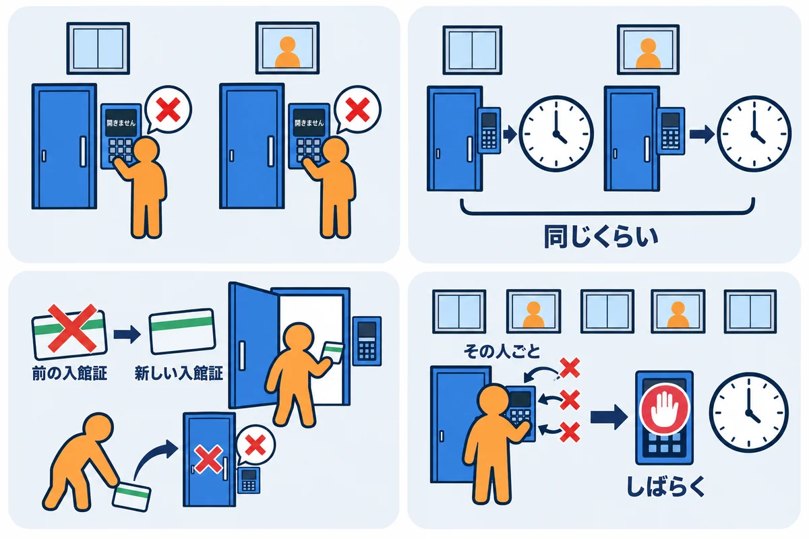
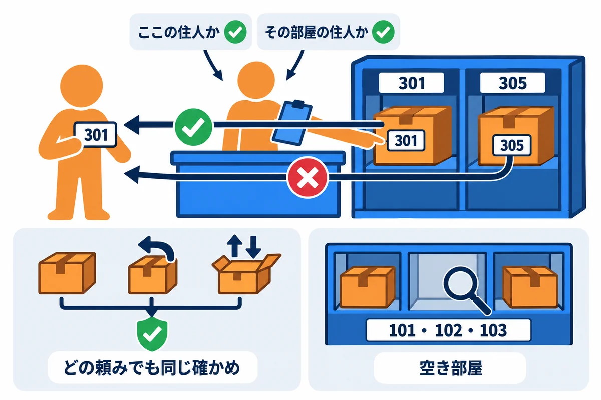

VOLUME 08 / RUST BACKEND MASTERY
認証・認可 — Topcoat Session・Argon2id・Better Auth 比較
守るもの・攻める人・入口を先に書き出し、パスワード・セッション・CSRF・他人のデータの守りを、手を動かして確かめる
色の付いた枠のコードの、右上の「コピー」ボタンを押してください。コピーしたら、ブラウザーの「戻る」で PDF に戻れます。
ログインの仕組みは、「メールアドレスとパスワードを入れたら、中に入れる」だけに見えます。ところが、その裏では、たくさんのことを守っています。守り方を1つまちがえると、次のような事故が起きます。
この巻では、こうした事故を、先に「何を守るのか・誰が攻めるのか・どこから入られるのか」を書き出すことで防ぎます。そのうえで、RustNote が実際にどう守っているかを、テストを動かして1つずつ確かめます。
この巻を終えると、次のことができるようになります。
session::start・stop）と、クッキーの属性（HttpOnly・Secure・SameSite）、CSRF の守り（Origin の検査）を説明し、テストで確かめられる| 単元 | テーマ | ひとことで言うと |
|---|---|---|
| UNIT 01 | 認証・セッション・認可と脅威モデル | 3つの確かめを区別し、守るもの・攻める人・入口を書き出す |
| UNIT 02 | パスワード・Argon2id・salt | パスワードは「戻せない形」にして保存する |
| UNIT 03 | 登録・メールのそろえ方・重複 | 同じ人が2つ登録できないようにする |
| UNIT 04 | ログイン・同じ文で断る・回数の制限 | 失敗の理由を、他人に教えない |
| UNIT 05 | Topcoat のセッションの一生 | 発行・照合・ログアウトを、DB の記録と組にする |
| UNIT 06 | クッキー・CSRF・Origin・SameSite | ほかのサイトからの送信を止める |
| UNIT 07 | 認可・IDOR・持ち主の境目 | URL の ID を変えても、他人のデータは見せない |
| UNIT 08 | Better Auth との比較と、おすすめの構成 | 自分で作るか、外の仕組みを使うかを決める |
| UNIT 09 | OIDC・外の認証サービス・MFA・回復 | ソーシャルログインや二段階認証を考える |
| UNIT 10 | 守りのテスト・監査・事故の対応 | 攻撃のテストを自動で回し、記録を残す |
UserId・NoteId）と、不正な値を作れない型（第4巻 UNIT 01）。UNIT 01 のエラー2で、型が「他人のデータ」の事故を防ぐ様子を見ます。tests/ に足して cargo test --test 名前 で動かす形）と、画面の遷移（PRG・303）。この巻のテストも、同じ形で書きます。注意: この巻で使う Topcoat の機能（セッション・クッキー・Origin の検査）は、第6巻 UNIT 10 でくわしく扱っています。本文の中でも、そのつど短く説明します。
守りの仕組みは、「うまくいく場合」を見ても、ちゃんと働いているかどうかが分かりません。各単元では、次の順番で進めてください。
注意: この巻の攻撃の実験は、すべて自分の PC の中の、練習用の RustNote に対して行います。他人のサイトやサービスに対して試すことは、法律で禁じられている場合があります。絶対にしないでください。
この巻のコードは、すべて次の環境で実際にコンパイル・実行し、実行結果とエラーメッセージは実際の出力をそのまま載せています（パソコンのユーザー名などを含む部分は ... に置き換えています）。
| 項目 | 版・内容 |
|---|---|
| OS | Windows 11（ARM64）。コマンドは PowerShell を主に、WSL / macOS / Linux は補足で示します |
| Rust | 1.99 以上（本書シリーズの基準。Topcoat 0.11 が 1.99 以上を求めます）。動作確認は rustc 1.99.1 / cargo 1.99.1（aarch64-pc-windows-msvc） |
| RustNote | 教材の Rust/rustnote/（rustnote 0.1.0）。この巻では src/ を変えずに、tests/ と examples/ に確かめ用のファイルを足す |
| topcoat | 0.11.0（セッション・クッキー・Origin の検査） |
| argon2 | 0.6.0（パスワードのハッシュ。UNIT 02 でくわしく扱います） |
第9巻と同じように、教材の Rust/rustnote/ を作業用のフォルダにコピーして使います。
# 教材の rustnote フォルダを、中身ごと（-Recurse）作業用のフォルダへコピーする
Copy-Item -Recurse "教材のフォルダ\Rust\rustnote" .\rustnote
cd rustnote
# このフォルダで使われる Rust の版を確かめる（1.99.1 になる）
rustup show active-toolchain
この巻のテストは、RustNote の tests/common/mod.rs にある道具（test_app・sign_up・create_note など）を使います。テストごとに一時フォルダに新しい DB を作り、ポートを開かずに、ルーターへ直接リクエストを渡して動かします（第9巻 UNIT 01）。
会員制のコンサート会場を考えます。
会場の警備の担当者は、開場の前に警備の計画を立てます。「守るもの（お客さんの財布・楽屋の機材）」「攻めてくる人（偽の会員証を作る人・落ちたリストバンドを拾った人・外から呼び出して入口を開けさせる人）」「入口（正面・裏口・搬入口）」を書き出してから、どこに係を立てるかを決めます。この計画が脅威モデルです。
| コンサート会場 | RustNote |
|---|---|
| 受付で会員証を確かめる | 認証（メールアドレスとパスワードで、本人かを確かめる） |
| リストバンド | セッション（クッキーの __Host-session に入ったトークン） |
| リストバンドの台帳（番号の控え） | DB の sessions 表（トークンそのものではなく、そのハッシュを控える） |
| 楽屋の前の係 | 認可（このノートの持ち主か。SQL の user_id = ?） |
| 警備の計画 | 脅威モデル（守るもの・攻める人・入口・信頼の境目） |
| 外から呼び出して入口を開けさせる | CSRF（ほかのサイトから、ログイン中の人のブラウザにフォームを送らせる） |
用語: 認証（にんしょう。authentication：相手が「名乗っているとおりの人か」を確かめること）
用語: 認可（にんか。authorization：確かめた相手に、「その操作をしてよいか」を決めること）
用語: セッション（session：一度認証した人を、次のリクエストからも「同じ人」と分かるようにする仕組み。RustNote ではクッキーのトークンで行う）
用語: 脅威モデル（きょういモデル。threat model：守るもの・攻める人・入口・信頼の境目を書き出し、どんな攻撃がありうるかを整理したもの）
RustNote にリクエストが届くと、次の順番で確かめます。
auth.rs の require_user）。user_id = ?（持ち主の条件）を入れるので、他人のノートは「見つからない」ことになり、404 を返します。「ある」ことを知らせる 403 にしないのは、他人のノートの番号を探り当てられないようにするためです（第9巻 UNIT 01）。もう1つの図は、RustNote の脅威モデルです。誰が、どこから、何を狙うのかを描きます。
/notes/1 の 1）。攻める人は、この3つのどれかに、変な値を入れてきます。▼ このコードがやること（先に日本語で）: ログインしていない人が
/notesを開く（①認証が無い）、alice が登録してクッキーを付けて開く（②セッションで本人と分かる）、alice が作ったノートを alice と bob がそれぞれ開く（③認可）の3つを、順に試します。それぞれの返事を表示します。
//! 第8巻 UNIT 01: 認証・セッション・認可の3つの確かめを、RustNote で1つずつ見る。
//! 実行: cargo test --test u01_three_checks -- --nocapture --test-threads=1
mod common;
use common::{location, test_app};
use topcoat::router::StatusCode;
const PASSWORD: &str = "correct horse battery";
#[tokio::test]
async fn three_checks() {
let app = test_app().await;
// ① 認証: 誰なのか分からない（ログインしていない）人
let response = app.get("/notes", None).await;
println!(
"① ログインしていない人が /notes → {}（移動先 {}）",
response.status(),
location(&response)
);
// ② 認証とセッション: 登録した alice は、クッキーを見せれば「alice だ」と分かる
let alice = app.sign_up("alice@example.com", PASSWORD).await;
let response = app.get("/notes", Some(&alice)).await;
println!("② alice がクッキーを付けて /notes → {}", response.status());
// ③ 認可: bob はログインしているが、alice のノートを開いてよいか
let url = app.create_note(&alice, "alice の買い物メモ", "牛乳").await;
let bob = app.sign_up("bob@example.com", PASSWORD).await;
let by_owner = app.get(&url, Some(&alice)).await.status();
let by_other = app.get(&url, Some(&bob)).await.status();
println!("③ {url} を alice が開く → {by_owner}");
println!("③ {url} を bob が開く → {by_other}");
assert_eq!(by_owner, StatusCode::OK);
assert_eq!(by_other, StatusCode::NOT_FOUND);
}
コピーした rustnote フォルダの tests/u01_three_checks.rs として保存して実行します。--nocapture で println! を表示し、--test-threads=1 で、表示が混ざらないようにします。
cargo test --test u01_three_checks -- --nocapture --test-threads=1
▼ 実行結果（最初の1回は Compiling の行が続きます。ここでは省いています）
Finished `test` profile [unoptimized + debuginfo] target(s) in 0.73s
Running tests\u01_three_checks.rs (target\debug\deps\u01_three_checks-453951381b45d085.exe)
running 1 test
test three_checks ... GET /notes -> 303 See Other (1.2911ms)
① ログインしていない人が /notes → 303 See Other（移動先 /login）
POST /signup -> 303 See Other (431.6363ms)
GET /notes -> 200 OK (4.3897ms)
② alice がクッキーを付けて /notes → 200 OK
POST /notes -> 303 See Other (6.5401ms)
POST /signup -> 303 See Other (411.0846ms)
GET /notes/1 -> 200 OK (4.1062ms)
GET /notes/1 -> 404 Not Found (3.383ms)
③ /notes/1 を alice が開く → 200 OK
③ /notes/1 を bob が開く → 404 Not Found
ok
test result: ok. 1 passed; 0 failed; 0 ignored; 0 measured; 0 filtered out; finished in 0.89s
/notes を開くと、303 See Other（移動先 /login）でした。RustNote のノートの画面は、どれも最初に require_user(cx) を呼び、ログイン中のユーザーがいなければ、ログイン画面へ移します。test three_checks ... GET /notes -> 303 See Other (1.2911ms) は、テストの名前の表示と、RustNote のアクセスログ（標準エラー出力）が、同じ行に並んだものです。app.sign_up(...) は、登録のフォームを送り、返事の Set-Cookie から __Host-session=... を取り出して返す、テスト用の道具です（tests/common/mod.rs）。そのクッキーを付けて /notes を開くと、200 OK でした。/notes/1）を alice が開くと 200 OK、bob が開くと 404 Not Found でした。bob はログインしている（認証は通っている）のに、認可で断られたのです。▼ このコードがやること（先に日本語で）: 登録のフォームを送り、返事の
Set-Cookieから、セッションのクッキーの名前・値（トークン）の先頭・属性を表示します。続いて、DB のsessions表に入った行（トークンのハッシュの長さ・持ち主・期限）を表示し、トークンそのものと同じ値が DB に入っていないことを確かめます。
//! 第8巻 UNIT 01: セッションのクッキーに入るものと、DB に保存されるものを比べる。
//! 実行: cargo test --test u01_session -- --nocapture
mod common;
use common::test_app;
use topcoat::router::header;
#[tokio::test]
async fn session_cookie_and_record() {
let app = test_app().await;
let form = "email=alice%40example.com&password=correct+horse+battery&password_confirm=correct+horse+battery";
let response = app.post_form("/signup", form, None).await;
// Set-Cookie の中から、セッションのクッキーを探す
let set_cookie = response
.headers()
.get_all(header::SET_COOKIE)
.iter()
.filter_map(|value| value.to_str().ok())
.find(|value| value.starts_with("__Host-session="))
.expect("セッションのクッキーがありません")
.to_string();
let (pair, attributes) = set_cookie.split_once(';').expect("属性がありません");
let token = pair.trim_start_matches("__Host-session=");
println!("--- ブラウザに渡すクッキー");
println!("名前: __Host-session");
println!("値（トークン）: {}…（{} 文字）", &token[..6], token.len());
println!("属性:{attributes}");
// DB の sessions 表に入っているもの
let conn = app.db.db.connect().await.expect("DB に接続できません");
let mut rows = conn
.query(
"SELECT length(token_hash), user_id, expires_at - unixepoch() FROM sessions",
(),
)
.await
.expect("sessions を読めません");
println!("--- DB の sessions 表");
while let Some(row) = rows.next().await.expect("行を読めません") {
let bytes: i64 = row.get(0).expect("token_hash の長さ");
let user_id: i64 = row.get(1).expect("user_id");
let seconds: i64 = row.get(2).expect("期限までの秒数");
println!(
"token_hash: {bytes} バイト / user_id: {user_id} / 期限まで: 約 {} 日",
seconds / 86_400
);
}
// トークンそのものは、DB のどこにも入っていない
let mut rows = conn
.query(
"SELECT count(*) FROM sessions WHERE token_hash = CAST(?1 AS BLOB)",
[token],
)
.await
.expect("sessions を読めません");
let row = rows
.next()
.await
.expect("行を読めません")
.expect("行がありません");
let same: i64 = row.get(0).expect("件数");
println!("トークンと同じ値が入っている行: {same} 件");
}
cargo test --test u01_session -- --nocapture
▼ 実行結果
Finished `test` profile [unoptimized + debuginfo] target(s) in 0.67s
Running tests\u01_session.rs (target\debug\deps\u01_session-959ad0a50e64eaa8.exe)
running 1 test
POST /signup -> 303 See Other (412.1617ms)
--- ブラウザに渡すクッキー
名前: __Host-session
値（トークン）: F94h6_…（46 文字）
属性: HttpOnly; SameSite=Lax; Secure; Path=/; Max-Age=2592000
--- DB の sessions 表
token_hash: 32 バイト / user_id: 1 / 期限まで: 約 30 日
トークンと同じ値が入っている行: 0 件
test session_cookie_and_record ... ok
test result: ok. 1 passed; 0 failed; 0 ignored; 0 measured; 0 filtered out; finished in 0.44s
__Host-session の __Host- は、ブラウザに「Secure が付いていて、Path=/ で、ほかのドメインと共有しないクッキーだけを受け付けよ」と求める、特別な名前の付け方です。名前の決まりを守らないクッキーは、ブラウザが受け付けません。HttpOnly は「ページの JavaScript からは読めない」、Secure は「HTTPS のときだけ送る」、SameSite=Lax は「ほかのサイトからの POST には付けて送らない」という意味です。Max-Age=2592000 は 30 日（2,592,000 秒）で消えるという意味です。属性の1つずつは、UNIT 06 でくわしく扱います。SessionConfig::default() が付けています（RustNote の routes.rs の .sessions(SessionConfig::default())）。sessions 表の token_hash は 32 バイトでした。Topcoat が、トークンから SHA-256（1方向にしか計算できない変換）で作った値です。クッキーの値（46 文字）とは、長さも中身も違います。最後の行で、トークンと同じ値の行が 0 件であることも確かめました。auth.rs の log_in は、session::start(cx) でトークンを発行してクッキーに入れ、返ってきた session.token_hash だけを sessions 表に保存します。次のリクエストでは、クッキーのトークンを同じようにハッシュにして、表の中を探します（load_current_user）。ログイン中の人のブラウザには、RustNote のクッキーが入っています。悪いサイトが、そのブラウザに「RustNote の /notes へ POST するフォーム」を自動で送らせたら、どうなるでしょう。これが CSRF（クロスサイト・リクエスト・フォージェリ）という攻撃です。
▼ このコードがやること（先に日本語で）: alice のクッキーを付けて、ノートを作る POST を4通り送ります。ヘッダーが何も無い場合、同じサイトのフォームから送った場合（
Origin: http://127.0.0.1:3000）、ほかのサイトのフォームから送った場合（Origin: https://evil.example）、ブラウザが「ほかのサイトから」と印を付けた場合（Sec-Fetch-Site: cross-site）です。それぞれの返事と、最後に保存されたノートの数を表示します。
▶ 書く所と動かし方: コピーした rustnote フォルダの tests フォルダに、u01_cross_site.rs という名前の新しいファイルを作り、下のコードを貼り付けて保存します。rustnote のフォルダで cargo test --test u01_cross_site -- --nocapture を実行します。
//! 第8巻 UNIT 01: ほかのサイトから送られてきたフォーム（CSRF）を、Topcoat が止めるかを確かめる。
//! 実行: cargo test --test u01_cross_site -- --nocapture
mod common;
use common::{TestApp, body_text, test_app};
use topcoat::router::{Body, Method, header, request::Request};
/// ログイン中のクッキーを付けて、ノートを作る POST を送る。`extra` のヘッダーも足す
async fn post_note(app: &TestApp, cookie: &str, extra: &[(&str, &str)]) -> (String, String) {
let mut builder = Request::builder()
.method(Method::POST)
.uri("/notes")
.header(header::HOST, "127.0.0.1:3000")
.header(header::CONTENT_TYPE, "application/x-www-form-urlencoded")
.header(header::COOKIE, cookie);
for (name, value) in extra {
builder = builder.header(*name, *value);
}
let request = builder.body(Body::from("title=memo&body=")).unwrap();
let response = app.router.handle(request).await;
let status = response.status().to_string();
(status, body_text(response).await)
}
#[tokio::test]
async fn cross_site_posts_are_rejected() {
let app = test_app().await;
let alice = app
.sign_up("alice@example.com", "correct horse battery")
.await;
let cases: [(&str, &[(&str, &str)]); 4] = [
("Origin も Sec-Fetch-Site も無い（curl など）", &[]),
(
"同じサイトのフォーム（Origin: http://127.0.0.1:3000）",
&[("origin", "http://127.0.0.1:3000")],
),
(
"ほかのサイトのフォーム（Origin: https://evil.example）",
&[("origin", "https://evil.example")],
),
(
"ほかのサイトから（Sec-Fetch-Site: cross-site）",
&[("sec-fetch-site", "cross-site")],
),
];
for (label, headers) in cases {
let (status, body) = post_note(&app, &alice, headers).await;
println!("{label}");
println!(
" → {status} 本文: {:?}",
body.chars().take(40).collect::<String>()
);
}
// 実際に保存されたノートの数
let conn = app.db.db.connect().await.expect("DB に接続できません");
let mut rows = conn
.query("SELECT count(*) FROM notes", ())
.await
.expect("notes を読めません");
let row = rows
.next()
.await
.expect("行を読めません")
.expect("行がありません");
let count: i64 = row.get(0).expect("件数");
println!("保存されたノート: {count} 件");
}
cargo test --test u01_cross_site -- --nocapture
▼ 実行結果
Finished `test` profile [unoptimized + debuginfo] target(s) in 0.68s
Running tests\u01_cross_site.rs (target\debug\deps\u01_cross_site-073450767187315a.exe)
running 1 test
POST /signup -> 303 See Other (499.5162ms)
POST /notes -> 303 See Other (7.2745ms)
Origin も Sec-Fetch-Site も無い（curl など）
→ 303 See Other 本文: ""
POST /notes -> 303 See Other (6.2706ms)
同じサイトのフォーム（Origin: http://127.0.0.1:3000）
→ 303 See Other 本文: ""
ほかのサイトのフォーム（Origin: https://evil.example）
→ 403 Forbidden 本文: "forbidden"
ほかのサイトから（Sec-Fetch-Site: cross-site）
→ 403 Forbidden 本文: "forbidden"
保存されたノート: 2 件
test cross_site_posts_are_rejected ... ok
test result: ok. 1 passed; 0 failed; 0 ignored; 0 measured; 0 filtered out; finished in 0.58s
Origin: https://evil.example と Sec-Fetch-Site: cross-site の2つは、403 Forbidden（本文は forbidden）でした。クッキーは正しいのに、断られています。保存されたノートは 2 件で、断られた2回の分は保存されていません。Origin（どのサイトのページから送ったか）と Sec-Fetch-Site（同じサイトからか、ほかのサイトからか）を、自動で付けます。ページの JavaScript が勝手に書き換えることはできません。Topcoat は、この2つを見て、ほかのサイトから来た「状態を変えるリクエスト」（GET・HEAD・OPTIONS 以外）を止めます。この守りは Topcoat に最初から入っていて、RustNote は何も書いていません。Origin も Sec-Fetch-Site も無いリクエスト（curl やテストの道具など）は、303 で通りました。CSRF は「ログイン中の人のブラウザに、勝手に送らせる」攻撃です。ブラウザは必ずこのヘッダーを付けるので、ヘッダーが無いリクエストは、ブラウザから来たものではありません。そうしたリクエストを送れるのは、クッキーを自分で持っている人だけです。Origin: http://127.0.0.1:3000）も通りました。Origin と、リクエストの Host（127.0.0.1:3000）が一致したからです。POST /notes -> 303 See Other (...) のアクセスログがありますが、403 の2回にはありません。Topcoat の Origin の検査は、RustNote のアクセスログの層（routes.rs の access_log）よりも前で動くからです。攻撃を止めた記録を残したいときは、この点に気をつけます（UNIT 10）。ここまでの実験をもとに、RustNote の脅威モデルを表にします。この表が、この巻の地図です。
| 攻める人と攻め方 | 狙う入口 | RustNote の守り | 確かめた所・くわしい単元 |
|---|---|---|---|
| ほかの利用者が、URL の数字を変える（IDOR） | URL の ID | すべての SQL に user_id = ?、他人のノートは 404 |
例1-1・エラー3・UNIT 07 |
| ログインしていない人が、ノートの画面を開く | URL | require_user で 303、ログイン画面へ |
例1-1・UNIT 05 |
| ほかのサイトが、ブラウザにフォームを送らせる（CSRF） | フォーム・クッキー | Topcoat の Origin の検査で 403、SameSite=Lax、状態を変える操作は POST だけ |
例1-3・UNIT 06 |
| ページに入れた悪い JavaScript が、クッキーを盗む | クッキー | HttpOnly（JavaScript から読めない）、view! の自動エスケープ |
例1-2・UNIT 06 |
| DB を盗んだ人が、パスワードとトークンを読む | （入口を通らない） | パスワードは Argon2id、トークンは SHA-256 のハッシュだけを保存 | 例1-2・UNIT 02・05 |
| 失敗の文の違いから、登録済みのメールを探る | ログインのフォーム | ログインは「メールアドレスまたはパスワードが違います」の同じ文、未登録でもダミーのハッシュを計算 | UNIT 04 |
| パスワードを何回も試す（総当たり） | ログインのフォーム | 守りが無い（回数の制限が無い） | 問1・UNIT 04 |
| ログアウトした後の古いクッキーを使う | クッキー | ログアウトで sessions の行を消す |
問2・UNIT 05 |
例1-3で、ほかのサイトから送ったときの返事です。自分でフォームを作ってブラウザで試したのに 403 になった、という場面でも出会います。
ほかのサイトのフォーム（Origin: https://evil.example）
→ 403 Forbidden 本文: "forbidden"
forbidden の1語だけで、RustNote のエラー画面も、アクセスログの行も出ません。Origin と Host のポートが違うので止まります。また、RustNote の手前に置いた中継のサーバー（リバースプロキシ）が Host を書き換える設定だと、同じサイトからでも食い違います。フォームは RustNote 自身の画面から送り、中継のサーバーは Host をそのまま渡す設定にします。ほかのサイトからの送信をわざと受け付けたいときは、Topcoat の OriginPolicy で、信じてよい送り元を指定できます。守りそのものを外す設定もありますが、使わないでください。RustNote のリポジトリを使って、ノートを ID だけで探そうとした場合です（examples/e01_find_without_owner.rs に保存して試します）。
use rustnote::db::{self, Db};
use rustnote::domain::NoteId;
use rustnote::state::AppState;
#[tokio::main]
async fn main() -> anyhow::Result<()> {
let dir = tempfile::tempdir()?;
let db = Db::open_local(dir.path().join("e01.db")).await?;
db::migrate(&db).await?;
let state = AppState::new(db);
// 持ち主（owner）を渡さずに、ノートを ID だけで探そうとした
let note = state.notes.find(NoteId::new(1)?).await?;
println!("{note:?}");
Ok(())
}
cargo build --example e01_find_without_owner
Compiling rustnote v0.1.0 (...\rustnote)
error[E0308]: `?` operator has incompatible types
--> examples\e01_find_without_owner.rs:12:33
|
12 | let note = state.notes.find(NoteId::new(1)?).await?;
| ^^^^^^^^^^^^^^^ expected `UserId`, found `NoteId`
|
= note: `?` operator cannot convert from `NoteId` to `UserId`
error[E0061]: this method takes 2 arguments but 1 argument was supplied
--> examples\e01_find_without_owner.rs:12:28
|
12 | let note = state.notes.find(NoteId::new(1)?).await?;
| ^^^^----------------- argument #2 of type `NoteId` is missing
|
note: method defined here
--> src\repository\notes.rs:21:14
|
21 | async fn find(&self, owner: UserId, id: NoteId) -> Result<Option<Note>, RepoError>;
| ^^^^
help: provide the argument
|
12 | let note = state.notes.find(NoteId::new(1)?, /* NoteId */).await?;
| ++++++++++++++
Some errors have detailed explanations: E0061, E0308.
For more information about an error, try `rustc --explain E0061`.
error: could not compile `rustnote` (example "e01_find_without_owner") due to 2 previous errors
E0308 は「UserId が来るはずの場所に、NoteId が来ました」です。find の1つ目の引数は持ち主（owner: UserId）なので、ノートの ID を渡すと型が合いません。2つ目の E0061 は「このメソッドは引数を2つとるのに、1つしか渡されていません」です。note: が、src/repository/notes.rs の 21 行目の async fn find(&self, owner: UserId, id: NoteId) を指しています。UserId と NoteId は別の型（newtype）なので、2つを入れ替えてもエラーになります（第4巻 UNIT 01）。help: provide the argument は、find(NoteId::new(1)?, /* NoteId */) のように、足りない2つ目を足す形を案内しています。コンパイラーは「並び順のまちがい」までは分からないので、案内のとおりに直すと、まだ1つ目の型が合いません。正しくは、ログイン中のユーザーの ID を1つ目に渡して find(user.id, note_id) とします。確かめたら、このファイルは消しておきます。リポジトリを通さずに、SQL を自分で書いたときに起きやすい間違いです。alice のノートを、bob の立場で探します（examples/u01_idor.rs）。
//! 認可の確かめを忘れた SQL（持ち主の条件が無い）と、RustNote と同じ SQL を比べる。
//! 実行: cargo run -q --example u01_idor
use rustnote::db::{self, Db};
#[tokio::main]
async fn main() -> anyhow::Result<()> {
let dir = tempfile::tempdir()?;
let db = Db::open_local(dir.path().join("u01.db")).await?;
db::migrate(&db).await?;
let conn = db.connect().await?;
conn.execute_batch(
"INSERT INTO users (email, password_hash)
VALUES ('alice@example.com', 'x'), ('bob@example.com', 'x');
INSERT INTO notes (user_id, title) VALUES (1, 'alice の秘密のメモ');",
)
.await?;
// bob（user_id = 2）が、URL の /notes/1 を開いたとする
let bob: i64 = 2;
let note_id: i64 = 1;
// 間違い: ID だけで探す（「この人が見てよいか」を確かめていない）
let mut rows = conn
.query("SELECT title FROM notes WHERE id = ?1", [note_id])
.await?;
match rows.next().await? {
Some(row) => println!("ID だけで探す: 見つかった → {}", row.get::<String>(0)?),
None => println!("ID だけで探す: 見つからない"),
}
// RustNote と同じ: 持ち主の条件も付けて探す
let mut rows = conn
.query(
"SELECT title FROM notes WHERE id = ?1 AND user_id = ?2",
[note_id, bob],
)
.await?;
match rows.next().await? {
Some(row) => println!(
"持ち主の条件も付ける: 見つかった → {}",
row.get::<String>(0)?
),
None => println!("持ち主の条件も付ける: 見つからない（404 にする）"),
}
Ok(())
}
cargo run -q --example u01_idor
ID だけで探す: 見つかった → alice の秘密のメモ
持ち主の条件も付ける: 見つからない（404 にする）
AND user_id = ?2 を付けます。RustNote のリポジトリは、すべての SQL にこの条件を入れています。そして、エラー2のとおり、リポジトリのメソッドは持ち主を受け取らないと呼べません。SQL を書く場所をリポジトリに集め、持ち主を必ず受け取る形にするのが、IDOR を防ぐいちばん確実な方法です（第9巻 UNIT 04）。ログインとログアウトは、src/auth.rs の2つの関数です（抜き出しています）。
/// ログインさせる: 新しいトークンを発行してクッキーに入れ、そのハッシュを DB に記録する
pub async fn log_in(cx: &Cx, user: &User) -> Result<(), AppError> {
let state = app_state(cx);
// 前のセッションのクッキーが残っていれば、その記録は先に消しておく
if let Some(old_hash) = session::token_hash(cx).await.map_err(AppError::internal)? {
state.sessions.delete(&old_hash).await?;
}
// 毎回新しいトークンを作る（セッション固定攻撃を防ぐ）
let session = session::start(cx).await.map_err(AppError::internal)?;
state
.sessions
.create(&session.token_hash, user.id, session.expires_at)
.await?;
// ついでに、期限切れのセッションを掃除しておく
state.sessions.delete_expired(SystemTime::now()).await?;
Ok(())
}
/// ログアウトさせる: クッキーを消し、DB の記録も消す
pub async fn log_out(cx: &Cx) -> Result<(), AppError> {
if let Some(token_hash) = session::stop(cx).await.map_err(AppError::internal)? {
app_state(cx).sessions.delete(&token_hash).await?;
}
Ok(())
}
session::start(cx) は、Topcoat が新しいトークンを作ってクッキーに入れ、そのハッシュ（token_hash）と期限（expires_at）を返す関数です。Topcoat は、トークンを発行するだけで、保存はしません。保存するのはアプリ（RustNote の sessions 表）の役目です。log_out は、session::stop(cx) でクッキーを消し、返ってきたハッシュで sessions の行も消します。どちらか片方だけでは足りない理由は、問2で確かめます。ログインの失敗は、src/routes/login.rs で、理由を区別せずに同じ文で返しています（抜き出しています）。
const LOGIN_FAILED: &str = "メールアドレスまたはパスワードが違います";
// メールが無いのか、パスワードが違うのかは区別しない
let error = Some(LOGIN_FAILED.to_string());
Ok(view! {
(StatusCode::UNAUTHORIZED)
login_form(email: input.email, error: error)
})
問1: 脅威モデルの表で「守りが無い」とした、パスワードの総当たりを確かめます。alice を登録してから、まちがったパスワードで 10 回続けてログインし、11 回目に正しいパスワードを送るテストを書いてください。RustNote は、何回目かで止めるでしょうか。
問2: ログアウトしたとき、DB の sessions の行と、ブラウザのクッキーはどうなるでしょうか。テストで、ログアウトの前と後の sessions の行の数、ログアウトの返事の Set-Cookie、ログアウト前のクッキーでもう一度 /notes を開いた結果を表示してください。
問3: もし RustNote が、sessions 表に、トークンのハッシュではなくトークンそのものを保存していたら、DB のファイルが盗まれたときに何が起きるでしょうか。例1-2の結果をもとに説明してください。
問1の解答:
tests/u01_q1.rs です。
//! 問1の解答: パスワードを何回まちがえても、RustNote は止めない（回数の制限が無い）ことを確かめる。
//! 実行: cargo test --test u01_q1 -- --nocapture
mod common;
use std::time::Instant;
use common::test_app;
#[tokio::test]
async fn many_wrong_logins_are_not_limited() {
let app = test_app().await;
app.sign_up("alice@example.com", "correct horse battery")
.await;
let started = Instant::now();
let mut statuses = Vec::new();
for _ in 0..10 {
let response = app
.post_form(
"/login",
"email=alice%40example.com&password=wrong-password",
None,
)
.await;
statuses.push(response.status().as_u16());
}
println!("10 回まちがえた結果: {statuses:?}");
println!("10 回にかかった時間: {:.1?}", started.elapsed());
// 11 回目に、正しいパスワードを送る
let response = app
.post_form(
"/login",
"email=alice%40example.com&password=correct+horse+battery",
None,
)
.await;
println!("11 回目に正しいパスワード → {}", response.status());
}
cargo test --test u01_q1 -- --nocapture
Finished `test` profile [unoptimized + debuginfo] target(s) in 0.66s
Running tests\u01_q1.rs (target\debug\deps\u01_q1-bce08f7bd283041f.exe)
running 1 test
POST /signup -> 303 See Other (463.1275ms)
POST /login -> 401 Unauthorized (430.3743ms)
POST /login -> 401 Unauthorized (383.3649ms)
POST /login -> 401 Unauthorized (382.3572ms)
POST /login -> 401 Unauthorized (386.5024ms)
POST /login -> 401 Unauthorized (401.7135ms)
POST /login -> 401 Unauthorized (385.1639ms)
POST /login -> 401 Unauthorized (627.995ms)
POST /login -> 401 Unauthorized (732.2201ms)
POST /login -> 401 Unauthorized (793.8449ms)
POST /login -> 401 Unauthorized (689.4254ms)
10 回まちがえた結果: [401, 401, 401, 401, 401, 401, 401, 401, 401, 401]
10 回にかかった時間: 5.2s
POST /login -> 303 See Other (762.2065ms)
11 回目に正しいパスワード → 303 See Other
test many_wrong_logins_are_not_limited ... ok
test result: ok. 1 passed; 0 failed; 0 ignored; 0 measured; 0 filtered out; finished in 6.47s
401 Unauthorized で、11 回目の正しいパスワードは 303 See Other（ログイン成功）でした。RustNote は、何回まちがえても止めません。脅威モデルの表のとおり、回数の制限が無いことが確かめられました。問2の解答:
tests/u01_q2.rs です。
//! 問2の解答: ログアウトすると、DB の sessions の行と、ブラウザのクッキーはどうなるか。
//! 実行: cargo test --test u01_q2 -- --nocapture
mod common;
use common::{TestApp, location, test_app};
use topcoat::router::header;
/// sessions 表の行の数
async fn sessions(app: &TestApp) -> i64 {
let conn = app.db.db.connect().await.expect("DB に接続できません");
let mut rows = conn
.query("SELECT count(*) FROM sessions", ())
.await
.expect("sessions を読めません");
let row = rows
.next()
.await
.expect("行を読めません")
.expect("行がありません");
row.get(0).expect("件数")
}
#[tokio::test]
async fn logout_deletes_the_session_record() {
let app = test_app().await;
let alice = app
.sign_up("alice@example.com", "correct horse battery")
.await;
println!("ログイン中の sessions の行: {} 件", sessions(&app).await);
let response = app.post_form("/logout", "", Some(&alice)).await;
let cleared = response
.headers()
.get_all(header::SET_COOKIE)
.iter()
.filter_map(|value| value.to_str().ok())
.find(|value| value.starts_with("__Host-session="))
.unwrap_or("（無し）")
.to_string();
println!("ログアウトの返事: {}", response.status());
println!("消すためのクッキー: {cleared}");
println!("ログアウト後の sessions の行: {} 件", sessions(&app).await);
// ログアウト前のクッキーを、もう一度見せる
let response = app.get("/notes", Some(&alice)).await;
println!(
"古いクッキーで /notes → {}（移動先 {}）",
response.status(),
location(&response)
);
}
cargo test --test u01_q2 -- --nocapture
Finished `test` profile [unoptimized + debuginfo] target(s) in 0.63s
Running tests\u01_q2.rs (target\debug\deps\u01_q2-07596b0af0a888f4.exe)
running 1 test
POST /signup -> 303 See Other (435.2218ms)
ログイン中の sessions の行: 1 件
POST /logout -> 303 See Other (6.6019ms)
ログアウトの返事: 303 See Other
消すためのクッキー: __Host-session=; HttpOnly; SameSite=Lax; Secure; Path=/; Max-Age=0; Expires=Thu, 30 Oct 2025 15:05:09 GMT
ログアウト後の sessions の行: 0 件
GET /notes -> 303 See Other (1.7167ms)
古いクッキーで /notes → 303 See Other（移動先 /login）
test logout_deletes_the_session_record ... ok
test result: ok. 1 passed; 0 failed; 0 ignored; 0 measured; 0 filtered out; finished in 0.48s
sessions の行は 1 件から 0 件になりました。返事の Set-Cookie は、値が空の __Host-session= と、Max-Age=0・過去の Expires（1年前）で、ブラウザに「このクッキーを今すぐ消せ」と伝えています。sessions 表に同じ行が無いからです。問3の解答:
sessions 表にトークンそのものが入っていたら、DB を盗んだ人は、表から値を取り出して、自分のブラウザのクッキー __Host-session に入れるだけで、期限の切れていない全員に、パスワードを知らないまま、なりすませます。token_hash）だけを保存しています。SHA-256 は1方向にしか計算できないので、ハッシュからトークンを作り直すことはできません。トークンは十分に長いランダムな値なので、総当たりで同じハッシュになる値を探すこともできません。__Host- の名前と HttpOnly・Secure・SameSite=Lax で守り、ほかのサイトからの POST は Topcoat の Origin の検査が 403 で止める。$argon2id$v=19$m=19456,t=2,p=1$…）を、部分ごとに読める図書館の会員カードの、暗証番号を預かる場面を考えます。
| 図書館の暗証番号 | RustNote のパスワード |
|---|---|
| 紙にそのまま書く | 平文（へいぶん）で保存する。RustNote はしない |
| ミキサー（戻せない） | ハッシュ（Argon2id）。ハッシュから元のパスワードには戻せない |
| 会員ごとの隠し味 | salt。ハッシュにするたびに、ランダムに作る 16 バイトの値 |
| ジュースと隠し味を並べて書く | PHC 文字列（方式・設定・salt・ハッシュを、$ で区切って1つの文字列にしたもの） |
| わざとゆっくり回す | Argon2id の重さの設定（m=19456,t=2,p=1） |
| 早見表 | 前もって計算したハッシュの一覧（レインボーテーブルなど）。salt で使えなくなる |
用語: ハッシュ（hash：どんな長さのデータからでも、決まった長さの値を作る計算。同じ入力からは同じ値が出るが、値から入力には戻せない）
用語: salt（ソルト：ハッシュにする前に、パスワードに混ぜるランダムな値。人ごと・回ごとに違う。秘密にする必要はなく、ハッシュと一緒に保存する）
用語: 暗号化（あんごうか：鍵があれば元に戻せる変換。パスワードの保存には使わない。鍵を盗まれたら、全員のパスワードが戻されてしまうから）
登録のときと、ログインのときに、RustNote の中で起きることです。
users.password_hash に保存します。m・t・p）と salt を読み、入力されたパスワードを同じ設定・同じ salt で計算して、ハッシュが同じかを比べます。元のパスワードに戻して比べるのではありません。PHC 文字列の中身は、次のように並んでいます。
▼ このコードがやること（先に日本語で）: RustNote の
auth::hash_passwordで、同じパスワードを2回ハッシュにして、2つの PHC 文字列を表示し、同じかどうかを比べます。1つ目を$で分けて、中身を1つずつ表示します。最後にauth::verify_passwordで、正しいパスワードと1文字違うパスワードを照合します。
//! RustNote の hash_password で、同じパスワードを2回ハッシュにして比べる。
//! PHC 文字列（$argon2id$...）を「$」で分けて、中身を1つずつ表示する。
//! 実行: cargo run -q --example u02_hash
use rustnote::auth::{hash_password, verify_password};
use rustnote::domain::Password;
#[tokio::main]
async fn main() -> anyhow::Result<()> {
let password = Password::parse("correct horse battery")?;
let first = hash_password(&password).await?;
let second = hash_password(&password).await?;
println!("1回目: {first}");
println!("2回目: {second}");
println!("2つは同じか: {}", first == second);
// $argon2id$v=19$m=19456,t=2,p=1$<salt>$<hash> を「$」で分ける
let parts: Vec<&str> = first.split('$').collect();
println!("--- 1回目を「$」で分ける");
println!("方式: {}", parts[1]);
println!("版: {}", parts[2]);
println!("重さの設定: {}", parts[3]);
println!("salt（{} 文字）: {}", parts[4].len(), parts[4]);
println!("ハッシュ（{} 文字）: {}", parts[5].len(), parts[5]);
println!("--- 照合");
println!(
"正しいパスワード × 1回目: {}",
verify_password("correct horse battery", &first).await?
);
println!(
"正しいパスワード × 2回目: {}",
verify_password("correct horse battery", &second).await?
);
println!(
"1文字違うパスワード × 1回目: {}",
verify_password("correct horse batterY", &first).await?
);
Ok(())
}
コピーした rustnote フォルダの examples/u02_hash.rs として保存して実行します。
cargo run -q --example u02_hash
▼ 実行結果（salt とハッシュは、実行するたびに変わります）
1回目: $argon2id$v=19$m=19456,t=2,p=1$1dvNLHkr/dGcDbOcgy0oJQ$RnSbHHJ2okKusYBaK9CZBGi2296o4wwB7odK1L2zNN0
2回目: $argon2id$v=19$m=19456,t=2,p=1$aeqaiiI6e/Ku/15i4hVUhA$BGPdpiam7q+bdZvGloFn/mgzzS+1CSX+aAClhoQyM5w
2つは同じか: false
--- 1回目を「$」で分ける
方式: argon2id
版: v=19
重さの設定: m=19456,t=2,p=1
salt（22 文字）: 1dvNLHkr/dGcDbOcgy0oJQ
ハッシュ（43 文字）: RnSbHHJ2okKusYBaK9CZBGi2296o4wwB7odK1L2zNN0
--- 照合
正しいパスワード × 1回目: true
正しいパスワード × 2回目: true
1文字違うパスワード × 1回目: false
correct horse battery なのに、違う文字列になりました（2つは同じか: false）。違うのは、後ろの2つの部分（salt とハッシュ）だけです。hash_password が、呼ばれるたびに新しい salt を作っているからです。true です。照合のときは、それぞれの文字列に書いてある salt を使って計算し直すからです。$ で分けると、方式（argon2id）・版（v=19）・重さの設定（m=19456,t=2,p=1）・salt（22 文字）・ハッシュ（43 文字）の5つになりました。salt は 16 バイト、ハッシュは 32 バイトの値を、Base64（英数字と +・/ で表す書き方）で文字にしたものです。y を Y にしただけで、照合は false になりました。ハッシュは、入力が少しでも違えば、まったく違う値になるように作られています。「だいたい合っている」はありません。ハッシュなら何でもよいわけではありません。パスワードには、わざと重いハッシュを使います。どれくらい違うのかを測ります。
▼ このコードがやること（先に日本語で）: 1秒のあいだに、パスワードの候補（
password0・password1・…）を作ってはハッシュにする、をくり返し、何回できたかを数えます。標準ライブラリの速いハッシュ（DefaultHasher）と、RustNote と同じArgon2::default()で比べます。速さを測るので、release ビルドで動かします（第12巻 UNIT 01）。
▶ 書く所と動かし方: コピーした rustnote フォルダの examples フォルダに、u02_speed.rs という名前の新しいファイルを作り、下のコードを貼り付けて保存します。rustnote のフォルダで cargo run -q --release --example u02_speed を実行します。
//! 1秒のあいだに、何回ハッシュを計算できるかを比べる。
//! 速いハッシュ（標準ライブラリの DefaultHasher）と、Argon2id（RustNote と同じ既定の設定）。
//! release で動かす: cargo run -q --release --example u02_speed
use std::hash::{DefaultHasher, Hash, Hasher};
use std::hint::black_box;
use std::time::{Duration, Instant};
use argon2::{Argon2, password_hash::PasswordHasher};
/// 1秒のあいだに `work` を何回くり返せるかを数える
fn per_second(mut work: impl FnMut(u64)) -> u64 {
let started = Instant::now();
let mut count = 0;
while started.elapsed() < Duration::from_secs(1) {
work(count);
count += 1;
}
count
}
fn main() {
// 速いハッシュ: パスワードの候補を作っては、ハッシュにする
let fast = per_second(|n| {
let mut hasher = DefaultHasher::new();
format!("password{n}").hash(&mut hasher);
black_box(hasher.finish());
});
println!("DefaultHasher（速いハッシュ）: 1秒に {fast} 回");
// Argon2id: RustNote と同じ Argon2::default()（m=19456, t=2, p=1）
let argon2 = Argon2::default();
let slow = per_second(|n| {
let candidate = format!("password{n}");
black_box(
argon2
.hash_password(candidate.as_bytes())
.expect("ハッシュにできません"),
);
});
println!("Argon2id（わざと重いハッシュ）: 1秒に {slow} 回");
println!("差: 約 {} 倍", fast / slow.max(1));
}
cargo run -q --release --example u02_speed
▼ 実行結果
DefaultHasher（速いハッシュ）: 1秒に 11103251 回
Argon2id（わざと重いハッシュ）: 1秒に 49 回
差: 約 226596 倍
m=19456 KiB）のメモリを使います。メモリを多く使う計算は、たくさんの計算を同時に進める専用の機械（GPU など）でも、速くしにくいように作られています。DefaultHasher は、HashMap の表を作るためのハッシュで、結果も 64 ビットと短く、パスワードのような秘密を守るためのものではありません。ここでは「速いハッシュ」の例として使っています。SHA-256 のような安全なハッシュでも、速すぎるので、パスワードの保存には向きません。注意: 速さは、PC や設定によって大きく変わります。この例の数は、この PC で測った目安です。重さの設定は、OWASP（Web の安全についての資料をまとめている団体）が勧める Argon2id の最低の設定（m=19456, t=2, p=1）と同じで、argon2 0.6 の
Argon2::default()が使う値です。
▼ このコードがやること（先に日本語で）: 1つ目のテストでは、alice と bob を同じパスワードで登録し、
users表のpassword_hashの先頭と長さ、パスワードそのものが入っていないか、2人のハッシュが同じかを表示します。2つ目のテストでは、alice のハッシュを、読めない文字列（broken）に壊してから、正しいパスワードでログインし、どうなるかを表示します。
▶ 書く所と動かし方: コピーした rustnote フォルダの tests フォルダに、u02_stored.rs という名前の新しいファイルを作り、下のコードを貼り付けて保存します。rustnote のフォルダで cargo test --test u02_stored -- --nocapture --test-threads=1 を実行します。
//! 第8巻 UNIT 02: DB の users 表に、パスワードがどんな形で保存されるかを確かめる。
//! 実行: cargo test --test u02_stored -- --nocapture --test-threads=1
mod common;
use common::{TestApp, body_text, test_app};
const PASSWORD: &str = "correct horse battery";
/// users 表の、メールアドレスとパスワードのハッシュを読む
async fn stored(app: &TestApp) -> Vec<(String, String)> {
let conn = app.db.db.connect().await.expect("DB に接続できません");
let mut rows = conn
.query("SELECT email, password_hash FROM users ORDER BY id", ())
.await
.expect("users を読めません");
let mut users = Vec::new();
while let Some(row) = rows.next().await.expect("行を読めません") {
users.push((
row.get(0).expect("email"),
row.get(1).expect("password_hash"),
));
}
users
}
#[tokio::test]
async fn same_password_different_hashes() {
let app = test_app().await;
app.sign_up("alice@example.com", PASSWORD).await;
app.sign_up("bob@example.com", PASSWORD).await;
let users = stored(&app).await;
for (email, hash) in &users {
println!("{email}: {}…（{} 文字）", &hash[..31], hash.len());
println!(
" パスワードそのものが入っている: {}",
hash.contains(PASSWORD)
);
}
println!(
"alice と bob のハッシュは同じか: {}",
users[0].1 == users[1].1
);
}
#[tokio::test]
async fn broken_hash_makes_login_fail_safely() {
let app = test_app().await;
app.sign_up("alice@example.com", PASSWORD).await;
// DB の中のハッシュを、読めない文字列に壊してしまったとする
let conn = app.db.db.connect().await.expect("DB に接続できません");
conn.execute(
"UPDATE users SET password_hash = 'broken' WHERE email = 'alice@example.com'",
(),
)
.await
.expect("更新できません");
let form = "email=alice%40example.com&password=correct+horse+battery";
let response = app.post_form("/login", form, None).await;
let status = response.status();
let html = body_text(response).await;
println!("壊れたハッシュでログイン → {status}");
println!(
"画面に「時間をおいてもう一度お試しください」: {}",
html.contains("時間をおいてもう一度お試しください")
);
}
cargo test --test u02_stored -- --nocapture --test-threads=1
▼ 実行結果
Finished `test` profile [unoptimized + debuginfo] target(s) in 0.77s
Running tests\u02_stored.rs (target\debug\deps\u02_stored-71fa20487cab143e.exe)
running 2 tests
test broken_hash_makes_login_fail_safely ... POST /signup -> 303 See Other (411.0144ms)
[error] サーバーの中でエラーが起きました <- invalid encoding
POST /login -> 500 Internal Server Error (10.7842ms)
壊れたハッシュでログイン → 500 Internal Server Error
画面に「時間をおいてもう一度お試しください」: true
ok
test same_password_different_hashes ... POST /signup -> 303 See Other (410.558ms)
POST /signup -> 303 See Other (396.46ms)
alice@example.com: $argon2id$v=19$m=19456,t=2,p=1$…（97 文字）
パスワードそのものが入っている: false
bob@example.com: $argon2id$v=19$m=19456,t=2,p=1$…（97 文字）
パスワードそのものが入っている: false
alice と bob のハッシュは同じか: false
ok
test result: ok. 2 passed; 0 failed; 0 ignored; 0 measured; 0 filtered out; finished in 1.28s
$argon2id$v=19$m=19456,t=2,p=1$ で始まる 97 文字の文字列で、パスワードそのものは入っていません。同じパスワードなのに、2人のハッシュは違います（salt が違うから）。DB を見ても、「alice と bob は同じパスワードだ」とは分かりません。500 Internal Server Error になり、画面には「時間をおいてもう一度お試しください」だけが出ました。サーバーのログには [error] サーバーの中でエラーが起きました <- invalid encoding（文字列の形が正しくない）と、原因が残ります。「パスワードが違います」（401）ではなく 500 にしているのは、これが利用者のまちがいではなく、DB の中身が壊れているというサーバー側の問題だからです（src/auth.rs の verify_password は、保存した文字列を読めないときを、内部のエラーとして扱います）。インターネットの記事には、argon2 の古い版（0.5）の書き方がたくさん残っています。それを、0.6 を使う RustNote にそのまま写した場合です（examples/e02_old_api.rs）。
// 古い資料（argon2 0.5 の頃）の書き方を、そのまま写してしまった
use argon2::password_hash::{SaltString, rand_core::OsRng};
use argon2::{Argon2, PasswordHasher};
fn main() {
let salt = SaltString::generate(&mut OsRng);
let hash = Argon2::default()
.hash_password(b"correct horse battery", &salt)
.expect("ハッシュにできません");
println!("{hash}");
}
cargo build --example e02_old_api
Compiling rustnote v0.1.0 (...\rustnote)
error[E0432]: unresolved imports `argon2::password_hash::SaltString`, `argon2::password_hash::rand_core`
--> examples\e02_old_api.rs:2:29
|
2 | use argon2::password_hash::{SaltString, rand_core::OsRng};
| ^^^^^^^^^^ ^^^^^^^^^ could not find `rand_core` in `password_hash`
| |
| no `SaltString` in the root
|
note: found an item that was configured out
--> ...\lib.rs:40:9
|
39 | #[cfg(feature = "rand_core")]
| --------------------- the item is gated behind the `rand_core` feature
40 | pub use rand_core;
| ^^^^^^^^^
error[E0061]: this method takes 1 argument but 2 arguments were supplied
--> examples\e02_old_api.rs:8:10
|
8 | .hash_password(b"correct horse battery", &salt)
| ^^^^^^^^^^^^^ ----- unexpected argument #2
|
note: method defined here
--> ...\lib.rs:107:8
|
107 | fn hash_password(&self, password: &[u8]) -> Result<H> {
| ^^^^^^^^^^^^^
help: remove the extra argument
|
8 - .hash_password(b"correct horse battery", &salt)
8 + .hash_password(b"correct horse battery")
|
Some errors have detailed explanations: E0061, E0432.
For more information about an error, try `rustc --explain E0061`.
error: could not compile `rustnote` (example "e02_old_api") due to 2 previous errors
E0432 は「SaltString と rand_core を読み込めません」です。argon2 0.6 では、salt を自分で作る必要がなくなり、SaltString は、この場所（password_hash の直下）にはありません。rand_core も、note: のとおり、rand_core の機能を有効にしたときだけ使えるようになっています。2つ目の E0061 は「hash_password は引数を1つとるのに、2つ渡されました」です。0.6 の hash_password は、パスワードだけを受け取り、salt は中で作ります（note: が、fn hash_password(&self, password: &[u8]) を指しています）。Argon2::default().hash_password(b"…") だけです。RustNote の auth.rs と、例2-1の形を参考にします。確かめたら、このファイルは消しておきます。Cargo.toml の版（第13巻 UNIT 01）が同じかを、まず確かめます。もし users 表に、パスワードをそのまま（平文で）保存していても、登録もログインも、問題なく動きます。エラーは1つも出ません。困るのは、DB のファイル・バックアップ・ログのどれかが漏れた日です。
password_hash にパスワードそのものが入っていない」ことを確かめています。このような守りのテストを残しておくと、誰かがうっかり平文の保存に変えたときに気づけます（第11巻 UNIT 06）。パスワードをハッシュにする関数と、照合する関数は、src/auth.rs にあります（抜き出しています）。
/// パスワードを Argon2id でハッシュ化し、PHC 文字列（$argon2id$v=19$...）にする。
/// 塩（salt）は argon2 クレートが毎回ランダムに作る。
pub async fn hash_password(password: &Password) -> Result<String, AppError> {
let password = password.clone();
// 重い計算なので、非同期の処理を止めないよう別スレッドで行う
let joined = tokio::task::spawn_blocking(move || {
Argon2::default()
.hash_password(password.as_str().as_bytes())
.map(|hash| hash.to_string())
})
.await;
match joined {
Ok(Ok(phc)) => Ok(phc),
Ok(Err(error)) => Err(AppError::internal(error)),
Err(error) => Err(AppError::internal(error)),
}
}
spawn_blocking で、重い計算用の別のスレッドに任せています（第5巻 UNIT 07）。hash_password は、検査済みの Password 型しか受け取りません。8〜128 文字の決まりを通ったパスワードだけが、ハッシュになります（第11巻 UNIT 01 の問3）。登録していないメールアドレスでログインしようとしたときのために、ダミーのハッシュも用意してあります（抜き出しています）。
/// 登録されていないメールでも同じくらい時間をかけるための、ダミーのハッシュ。
/// （すぐ返すと「このメールは未登録だ」と応答時間から推測されてしまう）
static DUMMY_HASH: LazyLock<String> = LazyLock::new(|| {
Argon2::default()
.hash_password(b"rustnote-dummy-password")
.expect("ダミーのハッシュを作れません")
.to_string()
});
問1: 例2-1の PHC 文字列の m=19456,t=2,p=1 は、それぞれ何を表していますか。m=19456 は、何 MiB のメモリでしょうか。
問2: alice を登録してから、「登録していないメールアドレス」と「alice のメールアドレスで、違うパスワード」で、それぞれ3回ずつログインに失敗し、1回ごとにかかった時間を表示してください。2つの時間は、そろっているでしょうか。
問3: 7 文字のパスワード（短すぎる）で登録しようとしたとき、返ってくる画面に、入力したパスワードが残っているかを確かめてください。メールアドレスはどうでしょうか。
問1の解答:
m は、計算に使うメモリの大きさ（KiB）です。19456 KiB ÷ 1024 = 19 MiB です。t は、メモリ全体を何回くり返して計算するか（2 回）、p は、計算をいくつ並べて動かすか（1 つ）です。Argon2::default() が使う値です。重くするほど総当たりに強くなりますが、ログインのたびの計算も重くなり、同時にたくさんログインされたときのメモリも増えます（1回 19 MiB なので、同時に 10 人なら 190 MiB）。サーバーの大きさと相談して決めます（第12巻 UNIT 09）。問2の解答:
tests/u02_q2.rs です。
//! 問2の解答: 「登録していないメール」と「パスワードが違う」で、ログインの失敗にかかる時間を比べる。
//! 実行: cargo test --test u02_q2 -- --nocapture
mod common;
use std::time::Instant;
use common::test_app;
#[tokio::test]
async fn failed_logins_take_similar_time() {
let app = test_app().await;
app.sign_up("alice@example.com", "correct horse battery")
.await;
let cases = [
(
"登録していないメール",
"email=nobody%40example.com&password=wrong-password",
),
(
"パスワードが違う",
"email=alice%40example.com&password=wrong-password",
),
];
for (label, form) in cases {
let mut times = Vec::new();
for _ in 0..3 {
let started = Instant::now();
let response = app.post_form("/login", form, None).await;
times.push(format!(
"{}（{} ms）",
response.status().as_u16(),
started.elapsed().as_millis()
));
}
println!("{label}: {}", times.join(" / "));
}
}
cargo test --test u02_q2 -- --nocapture
Finished `test` profile [unoptimized + debuginfo] target(s) in 0.63s
Running tests\u02_q2.rs (target\debug\deps\u02_q2-2cfd71d17b7bceae.exe)
running 1 test
POST /signup -> 303 See Other (437.7957ms)
POST /login -> 401 Unauthorized (994.1015ms)
POST /login -> 401 Unauthorized (391.4112ms)
POST /login -> 401 Unauthorized (377.8686ms)
登録していないメール: 401（994 ms） / 401（391 ms） / 401（378 ms）
POST /login -> 401 Unauthorized (380.812ms)
POST /login -> 401 Unauthorized (449.7834ms)
POST /login -> 401 Unauthorized (730.5059ms)
パスワードが違う: 401（381 ms） / 401（450 ms） / 401（730 ms）
test failed_logins_take_similar_time ... ok
test result: ok. 1 passed; 0 failed; 0 ignored; 0 measured; 0 filtered out; finished in 3.81s
DUMMY_HASH は LazyLock（最初に使われたときに一度だけ作る）なので、最初の1回は「ダミーのハッシュを作る計算」と「照合の計算」の2回分の時間がかかるのです。サーバーを起動してから最初の1回だけですが、「登録していないメールの1回目は遅い」という差が残ります。DUMMY_HASH を作っておけば（LazyLock::force(&DUMMY_HASH) を呼ぶなど）、この差は無くなります（RustNote のコードは変えていません）。守りの仕組みも、測って確かめると、こうした抜けが見つかります。問3の解答:
tests/u02_q3.rs です。
//! 問3の解答: 登録のフォームで断られたとき、入力したパスワードが画面に残るかを確かめる。
//! 実行: cargo test --test u02_q3 -- --nocapture
mod common;
use common::body_text;
use common::test_app;
#[tokio::test]
async fn password_is_not_echoed_back() {
let app = test_app().await;
// 7文字のパスワード（短すぎる）で登録しようとする
let form = "email=alice%40example.com&password=short77&password_confirm=short77";
let response = app.post_form("/signup", form, None).await;
let status = response.status();
let html = body_text(response).await;
println!("登録の結果: {status}");
println!(
"エラーの文: {}",
html.contains("パスワードは8文字以上にしてください")
);
println!(
"メールアドレスは入力欄に残る: {}",
html.contains(r#"value="alice@example.com""#)
);
println!(
"パスワードが画面のどこかにある: {}",
html.contains("short77")
);
}
cargo test --test u02_q3 -- --nocapture
Finished `test` profile [unoptimized + debuginfo] target(s) in 0.64s
Running tests\u02_q3.rs (target\debug\deps\u02_q3-6907ab08fcaab11f.exe)
running 1 test
POST /signup -> 400 Bad Request (2.7655ms)
登録の結果: 400 Bad Request
エラーの文: true
メールアドレスは入力欄に残る: true
パスワードが画面のどこかにある: false
test password_is_not_echoed_back ... ok
test result: ok. 1 passed; 0 failed; 0 ignored; 0 measured; 0 filtered out; finished in 0.03s
value="alice@example.com"）に残りますが、パスワード（short77）は、画面のどこにもありません。POST /signup）が、入力を全部検査してから（400）、パスワードをハッシュにして、INSERT し、UNIQUE に止められたら 409、通ったらそのままログインして 303、の順で動くことを確かめられるUNIQUE が1つだけにすることと、「先に探してから入れる」形では2つできてしまうことを、実際に確かめて説明できるEmail 型で、検査していない文字列を create に渡せないことと、そのときの E0308 を読める図書館の、利用者カードの受付を考えます。
| 図書館の受付 | RustNote の新規登録 |
|---|---|
| 書き方をそろえてから名簿に書く | Email::parse（trim と to_lowercase） |
| 帳面に「同じ名前は2行書けない」 | users.email の UNIQUE（migrations/0001_users.sql） |
| あとから書こうとした窓口は断られる | RepoError::UniqueViolation → 409「既に登録されています」 |
| 書き間違いは全部まとめて返す | メール・パスワード・確認の問題を集めて 400 |
用語: 正規化（せいきか：同じものを表す、いろいろな書き方を、1つの決まった書き方にそろえること。ここでは、メールアドレスの前後の空白を取り、小文字にする）
用語: UNIQUE 制約（表の列に「同じ値の行を2つ作ってはいけない」と決めておく決まり。破る
INSERTは、DB がエラーにする。第7巻 UNIT 01）
用語: 409 Conflict（「今のデータの状態と、ぶつかっています」という返事。RustNote の登録では、メールアドレスが登録済みのときに使う）
POST /signup が届いてから、返事をするまでの流れです。
同じメールの登録が、同時に2つ届いたときです。
メールアドレスの検査とそろえ方は、src/domain.rs の Email::parse です（抜き出しています）。
pub fn parse(input: &str) -> Result<Email, EmailError> {
// 同じ人を同じ値にするため、前後の空白を除いて小文字にそろえる
let normalized = input.trim().to_lowercase();
if normalized.len() > Self::MAX_LEN {
return Err(EmailError::TooLong);
}
let Some((local, domain)) = normalized.split_once('@') else {
return Err(EmailError::MissingAt);
};
// …（@ の前後が空・ドメインに . が無い・空白がある、などは Malformed）
Ok(Email(normalized))
}
登録の本体は、src/routes/signup.rs の register です。入力の検査で止めずに、問題を全部集めてから、400 にするかどうかを決めます。
let (Some(email), Some(password), None) = (email, password, &form.password_confirm_error)
else {
return Ok(SignupOutcome::Rejected(StatusCode::BAD_REQUEST, form));
};
// 2) パスワードをハッシュ化して保存する（生のパスワードは保存しない）
let password_hash = hash_password(&password).await?;
let user = match app_state(cx).users.create(&email, &password_hash).await {
Ok(user) => user,
// users.email の UNIQUE に引っかかった ＝ 登録済みのメール
Err(RepoError::UniqueViolation(_)) => {
form.email_error = Some(AppError::EmailTaken.to_string());
return Ok(SignupOutcome::Rejected(StatusCode::CONFLICT, form));
}
Err(other) => return Err(other.into()),
};
▼ このコードがやること（先に日本語で）: 8通りの入力（正しい登録・大文字と空白の混ざった同じメール・@ の無いメール・ドメインに . の無いメール・短いパスワード・確認の欄と違うパスワード・3つとも間違い・大文字の混ざった別のメール）で
POST /signupを送ります。返事の状態コードと、400 や 409 のときは入力欄の下のエラーと、メールの入力欄に残った値を表示します。最後に、users表の
▶ 書く所と動かし方: コピーした rustnote フォルダの tests フォルダに、u03_signup.rs という名前の新しいファイルを作り、下のコードを貼り付けて保存します。rustnote のフォルダで cargo test --test u03_signup -- --nocapture --test-threads=1 を実行します。
//! 第8巻 UNIT 03: いろいろな入力で新規登録して、返事と、画面のエラーと、users 表に入った値を確かめる。
//! 実行: cargo test --test u03_signup -- --nocapture --test-threads=1
mod common;
use common::{TestApp, body_text, encode, test_app};
/// 画面の、入力欄の下のエラー（<p class="field-error">）を全部
fn field_errors(html: &str) -> Vec<String> {
html.split("<p class=\"field-error\">")
.skip(1)
.map(|t| t.split("</p>").next().unwrap().to_string())
.collect()
}
/// メールの入力欄に残っている値
fn email_value(html: &str) -> String {
html.split("<input")
.find(|t| t.contains("name=\"email\""))
.and_then(|t| t.split("value=\"").nth(1))
.map(|t| t.split('"').next().unwrap().to_string())
.unwrap_or_else(|| "（なし）".to_string())
}
/// users 表の email を、id の順に
async fn emails(app: &TestApp) -> Vec<String> {
let conn = app.db.db.connect().await.unwrap();
let mut rows = conn
.query("SELECT email FROM users ORDER BY id", ())
.await
.unwrap();
let mut found = Vec::new();
while let Some(row) = rows.next().await.unwrap() {
found.push(row.get::<String>(0).unwrap());
}
found
}
#[tokio::test]
async fn signup_cases() {
let app = test_app().await;
let good = "correct horse battery";
let cases = [
("alice@example.com", good, good),
(" Alice@Example.COM ", good, good),
("alice", good, good),
("alice@example", good, good),
("bob@example.com", "short", "short"),
("bob@example.com", good, "correct horse batterY"),
("bob", "short", "other"),
("Bob@Example.com", good, good),
];
for (n, (email, password, confirm)) in cases.into_iter().enumerate() {
let form = format!(
"email={}&password={}&password_confirm={}",
encode(email),
encode(password),
encode(confirm)
);
let response = app.post_form("/signup", &form, None).await;
let status = response.status();
let html = body_text(response).await;
println!("{}. email={email:?} → {status}", n + 1);
if !status.is_redirection() {
println!(" エラー: {:?}", field_errors(&html));
println!(" メールの入力欄: {:?}", email_value(&html));
}
}
println!("users 表の email: {:?}", emails(&app).await);
}
cargo test --test u03_signup -- --nocapture --test-threads=1
▼ 実行結果（POST /signup -> … のような行は、RustNote のアクセスログです）
Finished `test` profile [unoptimized + debuginfo] target(s) in 0.64s
Running tests\u03_signup.rs (target\debug\deps\u03_signup-6525422e8736d1b3.exe)
running 1 test
test signup_cases ... POST /signup -> 303 See Other (427.2562ms)
1. email="alice@example.com" → 303 See Other
POST /signup -> 409 Conflict (405.0977ms)
2. email=" Alice@Example.COM " → 409 Conflict
エラー: ["そのメールアドレスは既に登録されています"]
メールの入力欄: " Alice@Example.COM "
POST /signup -> 400 Bad Request (274µs)
3. email="alice" → 400 Bad Request
エラー: ["メールアドレスに @ がありません"]
メールの入力欄: "alice"
POST /signup -> 400 Bad Request (80.3µs)
4. email="alice@example" → 400 Bad Request
エラー: ["メールアドレスの形式が正しくありません"]
メールの入力欄: "alice@example"
POST /signup -> 400 Bad Request (70µs)
5. email="bob@example.com" → 400 Bad Request
エラー: ["パスワードは8文字以上にしてください"]
メールの入力欄: "bob@example.com"
POST /signup -> 400 Bad Request (66.8µs)
6. email="bob@example.com" → 400 Bad Request
エラー: ["確認用のパスワードが一致しません"]
メールの入力欄: "bob@example.com"
POST /signup -> 400 Bad Request (727µs)
7. email="bob" → 400 Bad Request
エラー: ["メールアドレスに @ がありません", "パスワードは8文字以上にしてください", "確認用のパスワードが一致しません"]
メールの入力欄: "bob"
POST /signup -> 303 See Other (531.5354ms)
8. email="Bob@Example.com" → 303 See Other
users 表の email: ["alice@example.com", "bob@example.com"]
ok
test result: ok. 1 passed; 0 failed; 0 ignored; 0 measured; 0 filtered out; finished in 1.45s
Alice@Example.COM は、1の alice@example.com と、同じ人として 409 になりました。Email::parse が、前後の空白を取り、小文字にした alice@example.com で INSERT しようとして、UNIQUE に止められたからです。Bob@Example.com は、bob@example.com として登録されました。users 表には、["alice@example.com", "bob@example.com"] と、そろえた形だけが入っています。ログインでも同じ Email::parse を通すので、どの書き方でログインしても、同じ行が見つかります。Alice@Example.COM です。利用者が打った文字を、そのまま返して、直しやすくしています（パスワードの欄は、どの返事でも空です）。bob・short・other では、「@ がありません」「8文字以上にしてください」「確認用のパスワードが一致しません」の3つが、一度に出ました。1つ直すたびに、また別の問題を言われる、ということがありません（第10巻 UNIT 02 と同じ考えです）。INSERT で分かるので、同じくらいかかります。登録のボタンをダブルクリックしたときや、2つのタブで同時に送ったときを、tokio::join! で再現します。
▼ このコードがやること（先に日本語で）: 同じメールアドレス・同じパスワードの登録の POST を、
tokio::join!で2つ同時に送ります。それぞれの返事の状態コードと、そのあとのusers表の
▶ 書く所と動かし方: コピーした rustnote フォルダの tests フォルダに、u03_race.rs という名前の新しいファイルを作り、下のコードを貼り付けて保存します。rustnote のフォルダで cargo test --test u03_race -- --nocapture を実行します。
//! 第8巻 UNIT 03: 同じメールアドレスの新規登録を、2つ同時に送る（ダブルクリックや、2つのタブ）。
//! 実行: cargo test --test u03_race -- --nocapture
mod common;
use common::{TestApp, encode, test_app};
/// users 表の email を、id の順に
async fn emails(app: &TestApp) -> Vec<String> {
let conn = app.db.db.connect().await.unwrap();
let mut rows = conn
.query("SELECT email FROM users ORDER BY id", ())
.await
.unwrap();
let mut found = Vec::new();
while let Some(row) = rows.next().await.unwrap() {
found.push(row.get::<String>(0).unwrap());
}
found
}
#[tokio::test]
async fn two_signups_at_once() {
let app = test_app().await;
let password = encode("correct horse battery");
let form = format!(
"email={}&password={password}&password_confirm={password}",
encode("alice@example.com")
);
let (a, b) = tokio::join!(
app.post_form("/signup", &form, None),
app.post_form("/signup", &form, None),
);
println!("1つ目: {}", a.status());
println!("2つ目: {}", b.status());
println!("users 表の email: {:?}", emails(&app).await);
}
cargo test --test u03_race -- --nocapture
1つ目: 409 Conflict
2つ目: 303 See Other
users 表の email: ["alice@example.com"]
303、もう片方が 409 で、users 表の行は1つでした。2つの登録は、どちらも「パスワードのハッシュ（約 0.4 秒）」を計算してから INSERT します。先に INSERT したほうが成功し、あとのほうは UNIQUE に止められました。「登録済みかどうかは、先に find_by_email で探せば分かる」と考えて、migrations/0001_users.sql の UNIQUE を外し、register の中で、ハッシュの前に探す形にした場合です（練習用のコピーで書き換え、確かめたら元に戻します）。
// わざと間違えた版: 先に探して、無ければ登録する（DB の UNIQUE は外した）
if app_state(cx).users.find_by_email(&email).await?.is_some() {
form.email_error = Some(AppError::EmailTaken.to_string());
return Ok(SignupOutcome::Rejected(StatusCode::CONFLICT, form));
}
例3-2のテストを動かします。
1つ目: 303 See Other
2つ目: 303 See Other
users 表の email: ["alice@example.com", "alice@example.com"]
303 で、users 表に alice@example.com が2行できました。2つの登録が、どちらも「探す: 無い」を通ってから、ハッシュの計算（約 0.4 秒）をしている間に、もう片方も「無い」を見たからです（図の左）。1つずつ順に試すテストでは、この間違いは見つかりません。find_by_email が、どちらの行を返すかで、パスワードが合ったり合わなかったりします。ノートも、どちらの行に付くかで、見えたり見えなかったりします。Email::parse の input.trim().to_lowercase() を input.trim().to_string() にした場合です。例3-1のテストを動かします（結果の行だけを抜き出しています）。
1. email="alice@example.com" → 303 See Other
2. email=" Alice@Example.COM " → 303 See Other
3. email="alice" → 400 Bad Request
4. email="alice@example" → 400 Bad Request
5. email="bob@example.com" → 400 Bad Request
6. email="bob@example.com" → 400 Bad Request
7. email="bob" → 400 Bad Request
8. email="Bob@Example.com" → 303 See Other
users 表の email: ["alice@example.com", "Alice@Example.COM", "Bob@Example.com"]
Alice@Example.COM が 303 で登録でき、users 表に alice@example.com と Alice@Example.COM の2人ができました。8の Bob@Example.com も、大文字のまま入っています。@ の後ろ（ドメイン）は、大文字と小文字を区別しない決まりです。前（ローカル部）は、決まりの上では区別してよいのですが、実際のメールの仕組みのほとんどは区別しません。利用者は「同じアドレス」だと思っているので、Alice@… で登録した人が alice@… でログインすると、「違います」と言われます。Email::parse を通るので、1か所を直せば両方に効きます。users.create(&email, …) を、フォームの文字列そのまま users.create(&input.email, …) と書いた場合です。
Compiling rustnote v0.1.0 (...\rustnote)
error[E0308]: mismatched types
--> src\routes\signup.rs:149:49
|
149 | let user = match app_state(cx).users.create(&input.email, &password_hash).await {
| ------ ^^^^^^^^^^^^ expected `&Email`, found `&String`
| |
| arguments to this method are incorrect
|
= note: expected reference `&Email`
found reference `&std::string::String`
note: method defined here
--> src\repository\users.rs:23:14
|
23 | async fn create(&self, email: &Email, password_hash: &str) -> Result<User, RepoError>;
| ^^^^^^ -----
&Email を期待しましたが、&String でした」です。create の引数は email: &Email で、Email は Email::parse を通らないと作れない型です（第9巻 UNIT 03）。Email::parse の中を直さない限り、どこか1か所だけで起きることはありません。src/routes/signup.rs です。ファイルの先頭のコメントに、成功（303）・形式が違う（400）・登録済み（409）の表があります。登録できたら、そのまま log_in でセッションを作り、お知らせ「登録しました」を予約します。users.email の UNIQUE は migrations/0001_users.sql にあり、UNIQUE constraint failed の文は、src/error.rs の From<libsql::Error> for RepoError が UniqueViolation に変えています（第9巻 UNIT 07）。autocomplete="email" と autocomplete="new-password" が付いています。ブラウザやパスワードの管理の道具が、「ここは新しいパスワードの欄」と分かるので、強いパスワードを作って覚えてくれます。MIN_PASSWORD_CHARS・MAX_PASSWORD_CHARS）で、前後の空白も含めて、そのまま使います（問3）。問1: alice が登録済みのときに、alice のメールで登録しようとすると、どう表示されるでしょうか。ログインの画面では、alice のメールで違うパスワードを入れたときと、登録していない dave のメールのときとで、表示は違うでしょうか。
問2: ＡＬＩＣＥ@example.com（全角の英字）で登録すると、どうなるでしょうか。
問3: パスワードを correct horse battery（前後に空白）で登録しました。空白なしの correct horse battery でログインできるでしょうか。
//! 第8巻 UNIT 03 練習問題。
//! 実行: cargo test --test u03_q -- --nocapture --test-threads=1
mod common;
use common::{TestApp, body_text, encode, test_app};
const PASSWORD: &str = "correct horse battery";
/// 画面の、入力欄の下のエラー・フォームの上のお知らせ
fn messages(html: &str) -> Vec<String> {
let mut found = Vec::new();
for start in ["<p class=\"field-error\">", "<p class=\"form-notice\">"] {
for t in html.split(start).skip(1) {
found.push(t.split("</p>").next().unwrap().to_string());
}
}
found
}
async fn signup(app: &TestApp, email: &str, password: &str) -> String {
let form = format!(
"email={}&password={}&password_confirm={}",
encode(email),
encode(password),
encode(password)
);
let response = app.post_form("/signup", &form, None).await;
let status = response.status();
let html = body_text(response).await;
format!("{status} {:?}", messages(&html))
}
async fn login(app: &TestApp, email: &str, password: &str) -> String {
let form = format!("email={}&password={}", encode(email), encode(password));
let response = app.post_form("/login", &form, None).await;
let status = response.status();
let html = body_text(response).await;
format!("{status} {:?}", messages(&html))
}
/// 問1: 登録の画面とログインの画面は、alice がいることを、それぞれどう伝えるか
#[tokio::test]
async fn q1_signup_tells_more_than_login() {
let app = test_app().await;
app.sign_up("alice@example.com", PASSWORD).await;
println!(
"問1 登録（alice）: {}",
signup(&app, "alice@example.com", PASSWORD).await
);
println!(
"問1 登録（carol）: {}",
signup(&app, "carol@example.com", PASSWORD).await
);
println!(
"問1 ログイン（alice・違うパスワード）: {}",
login(&app, "alice@example.com", "wrong password").await
);
println!(
"問1 ログイン（dave・登録していない）: {}",
login(&app, "dave@example.com", "wrong password").await
);
}
/// 問2: 全角の英字で書いたメールアドレス
#[tokio::test]
async fn q2_full_width_letters() {
let app = test_app().await;
app.sign_up("alice@example.com", PASSWORD).await;
println!(
"問2 登録（ＡＬＩＣＥ@example.com）: {}",
signup(&app, "ＡＬＩＣＥ@example.com", PASSWORD).await
);
let conn = app.db.db.connect().await.unwrap();
let mut rows = conn
.query("SELECT email FROM users ORDER BY id", ())
.await
.unwrap();
let mut found = Vec::new();
while let Some(row) = rows.next().await.unwrap() {
found.push(row.get::<String>(0).unwrap());
}
println!("問2 users 表の email: {found:?}");
}
/// 問3: パスワードの前後の空白
#[tokio::test]
async fn q3_spaces_in_password() {
let app = test_app().await;
let spaced = " correct horse battery ";
println!(
"問3 登録（前後に空白）: {}",
signup(&app, "alice@example.com", spaced).await
);
println!(
"問3 ログイン（空白なし）: {}",
login(&app, "alice@example.com", PASSWORD).await
);
println!(
"問3 ログイン（前後に空白）: {}",
login(&app, "alice@example.com", spaced).await
);
}
cargo test --test u03_q -- --nocapture --test-threads=1
問1 登録（alice）: 409 Conflict ["そのメールアドレスは既に登録されています"]
問1 登録（carol）: 303 See Other []
問1 ログイン（alice・違うパスワード）: 401 Unauthorized ["メールアドレスまたはパスワードが違います"]
問1 ログイン（dave・登録していない）: 401 Unauthorized ["メールアドレスまたはパスワードが違います"]
問2 登録（ＡＬＩＣＥ@example.com）: 303 See Other []
問2 users 表の email: ["alice@example.com", "ａｌｉｃｅ@example.com"]
問3 登録（前後に空白）: 303 See Other []
問3 ログイン（空白なし）: 401 Unauthorized ["メールアドレスまたはパスワードが違います"]
問3 ログイン（前後に空白）: 303 See Other []
（問題の答えの行だけを抜き出しています）
問1の解答:
409「そのメールアドレスは既に登録されています」でした。ログインの画面は、alice のときも dave のときも、同じ 401「メールアドレスまたはパスワードが違います」です。問2の解答:
303 で、別の人として登録されました。users 表には alice@example.com と ａｌｉｃｅ@example.com が入っています。to_lowercase は、全角の Ａ を全角の ａ にしますが、半角の a にはしません。Email::parse で ASCII 以外の文字を断るか、Unicode の正規化（NFKC：全角の英数字を半角にそろえる方法）をしてから検査します。これは RustNote に残る改善点です（RustNote のコードは変えていません）。問3の解答:
401、同じ空白付きなら 303 でした。Password::parse は、trim をしません（src/domain.rs のコメント「パスワードは空白も含めて利用者が決めたものなので、trim しない」）。INSERT し、UNIQUE に止められたら 409、通ったらそのままログインして 303。Email::parse で前後の空白を取り、小文字にそろえてから、保存にも検索にも使う。そろえないと、書き方ごとに別の人ができる。全角の英字は、そろえても別の人になる（改善点）。パスワードは、そろえない。UNIQUE に任せる。先に探してから入れる形は、同時の2つの登録で2行になる。Email 型のおかげで、検査していない文字列は create に渡せない（E0308）。POST /login）が、メールのそろえ方 → 探す → パスワードの照合 → 新しいセッション → 303、の順で動き、失敗はどれも同じ 401「メールアドレスまたはパスワードが違います」になることを確かめられるDUMMY_HASH）の役目を、測った数で説明できる
マンションの、暗証番号で開く入口を考えます。
| マンションの入口 | RustNote のログイン |
|---|---|
| どちらでも「開きません」 | 401「メールアドレスまたはパスワードが違います」（LOGIN_FAILED） |
| どちらも同じくらい待たせる | 登録が無くても DUMMY_HASH で照合する（約 0.4 秒、debug ビルド） |
| 入るたびに新しい入館証 | log_in が前のセッションを消し、新しいトークンを出す |
| しばらく押せなくする | 回数の制限。RustNote には無い（例4-3で形を作る） |
用語: アカウントの列挙（画面の文や返事の時間の違いから、あるメールアドレスが登録されているかどうかを調べること。登録されていると分かったアドレスは、パスワードの総当たりや、だましのメールの的になる）
用語: セッションの固定（攻撃する人が、自分の知っているトークンを利用者に使わせてから、利用者にログインさせ、そのトークンで成りすますこと。ログインのたびにトークンを新しくすると防げる）
用語: パスワードスプレー（よく使われるパスワードを1つ決めて、たくさんの人のメールアドレスで1回ずつ試す攻撃。1人あたりの失敗は少ないので、メールごとの回数の制限では見つけにくい）
POST /login の流れです（src/auth.rs の authenticate と、src/routes/login.rs の login）。
回数の制限を、何を鍵に数えるかの比べです（例4-3で、実際に試した結果）。
ログインの画面（src/routes/login.rs の login）です。
/// ログインに失敗したときの文章
const LOGIN_FAILED: &str = "メールアドレスまたはパスワードが違います";
#[page(POST)]
pub async fn login(cx: &Cx, Form(input): Form<LoginForm>) -> Result<impl View> {
if let Some(user) = authenticate(cx, &input.email, &input.password).await? {
log_in(cx, &user).await?;
flash::set(cx, Flash::LoggedIn);
return Err(see_other(href!(crate::routes::notes::index).resolve(cx)).into());
}
// メールが無いのか、パスワードが違うのかは区別しない
let error = Some(LOGIN_FAILED.to_string());
Ok(view! {
(StatusCode::UNAUTHORIZED)
login_form(email: input.email, error: error)
})
}
照合は src/auth.rs の authenticate です。登録が無いときも、形が違うときも、ダミーのハッシュで照合してから None を返します（抜き出しています）。
// 形式の違うメールは「見つからない」と同じ扱いにする
let Ok(email) = Email::parse(email_input) else {
verify_password(password, &DUMMY_HASH).await?;
return Ok(None);
};
match app_state(cx).users.find_by_email(&email).await? {
Some(record) => {
if verify_password(password, &record.password_hash).await? {
Ok(Some(record.user))
} else {
Ok(None)
}
}
None => {
verify_password(password, &DUMMY_HASH).await?;
Ok(None)
}
}
▼ このコードがやること（先に日本語で）: alice を登録してから、6通り（正しい・大文字のメール・違うパスワード・登録していないメール・形の違うメール・空）でログインの POST を送ります。返事の状態コードと、成功なら新しいセッションのクッキーがあるか、失敗なら画面の文を表示します。最後に、失敗の画面どうしを、入力欄に残った自分のメールだけを伏せて、1文字残らず同じかで比べます。
▶ 書く所と動かし方: コピーした rustnote フォルダの tests フォルダに、u04_login.rs という名前の新しいファイルを作り、下のコードを貼り付けて保存します。rustnote のフォルダで cargo test --test u04_login -- --nocapture --test-threads=1 を実行します。
//! 第8巻 UNIT 04: いろいろな入力でログインして、返事と、画面の文と、2つの失敗の画面の違いを確かめる。
//! 実行: cargo test --test u04_login -- --nocapture --test-threads=1
mod common;
use common::{body_text, encode, session_cookie, test_app};
const PASSWORD: &str = "correct horse battery";
/// 画面のお知らせ（form-notice）の文
fn notice(html: &str) -> String {
html.split("<p class=\"form-notice\">")
.nth(1)
.and_then(|t| t.split("</p>").next())
.unwrap_or("（なし）")
.to_string()
}
#[tokio::test]
async fn login_cases() {
let app = test_app().await;
app.sign_up("alice@example.com", PASSWORD).await;
let cases = [
("alice@example.com", PASSWORD),
("ALICE@example.com", PASSWORD),
("alice@example.com", "correct horse batterY"),
("dave@example.com", PASSWORD),
("alice", PASSWORD),
("", ""),
];
let mut pages = Vec::new();
for (n, (email, password)) in cases.into_iter().enumerate() {
let form = format!("email={}&password={}", encode(email), encode(password));
let response = app.post_form("/login", &form, None).await;
let status = response.status();
let cookie = session_cookie(&response).is_some();
let html = body_text(response).await;
println!("{}. email={email:?} → {status}", n + 1);
if status.is_redirection() {
println!(" 新しいセッションのクッキー: {cookie}");
} else {
println!(" 文: {}", notice(&html));
// 入力欄に残る自分のメールを伏せて、画面どうしを比べられるようにする
let masked = html.replace(&format!("value=\"{email}\""), "value=\"…\"");
pages.push((n + 1, masked));
}
}
println!("--- 失敗の画面どうしを比べる（入力欄のメールは伏せた）");
let (first_n, first) = &pages[0];
for (n, page) in &pages[1..] {
println!("{first_n} と {n}: まったく同じ = {}", first == page);
}
}
cargo test --test u04_login -- --nocapture --test-threads=1
1. email="alice@example.com" → 303 See Other
新しいセッションのクッキー: true
2. email="ALICE@example.com" → 303 See Other
新しいセッションのクッキー: true
3. email="alice@example.com" → 401 Unauthorized
文: メールアドレスまたはパスワードが違います
4. email="dave@example.com" → 401 Unauthorized
文: メールアドレスまたはパスワードが違います
5. email="alice" → 401 Unauthorized
文: メールアドレスまたはパスワードが違います
6. email="" → 401 Unauthorized
文: メールアドレスまたはパスワードが違います
--- 失敗の画面どうしを比べる（入力欄のメールは伏せた）
3 と 4: まったく同じ = true
3 と 5: まったく同じ = true
3 と 6: まったく同じ = true
（結果の行だけを抜き出しています）
401 Unauthorized で、文も「メールアドレスまたはパスワードが違います」でした。入力欄に残る「自分で打ったメール」を伏せると、画面は1文字残らず同じ（まったく同じ = true）です。画面から分かるのは「ログインできなかった」ことだけです。ALICE@example.com は、Email::parse で alice@example.com にそろえてから探すので、ログインできました（UNIT 03）。▼ このコードがやること（先に日本語で）: 先に1回ログインに失敗させて、ダミーのハッシュを作っておきます（UNIT 02 の問2のとおり、最初の1回だけ遅いため）。そのあと、「登録していないメール」と「パスワードが違う」の失敗を、交互に4回ずつ送り、それぞれにかかった時間を表示します。
▶ 書く所と動かし方: コピーした rustnote フォルダの tests フォルダに、u04_timing.rs という名前の新しいファイルを作り、下のコードを貼り付けて保存します。rustnote のフォルダで cargo test --test u04_timing -- --nocapture を実行します。
//! 第8巻 UNIT 04: 「登録していないメール」と「パスワードが違う」で、ログインの失敗にかかる時間を比べる。
//! 実行: cargo test --test u04_timing -- --nocapture
mod common;
use std::time::Instant;
use common::{encode, test_app};
#[tokio::test]
async fn failure_timing() {
let app = test_app().await;
app.sign_up("alice@example.com", "correct horse battery")
.await;
// ダミーのハッシュの準備（最初の1回だけ遅い。UNIT 02 の問2）を、先に済ませておく
let warm = format!("email={}&password=x", encode("warm@example.com"));
app.post_form("/login", &warm, None).await;
// 続けて計算すると PC の都合で遅くなる回があるので、2つを交互に送って、同じ条件で比べる
let mut rows = [Vec::new(), Vec::new()];
for _ in 0..4 {
for (i, email) in ["dave@example.com", "alice@example.com"]
.into_iter()
.enumerate()
{
let form = format!(
"email={}&password={}",
encode(email),
encode("wrong password")
);
let started = Instant::now();
let status = app.post_form("/login", &form, None).await.status();
rows[i].push(format!(
"{}（{} ms）",
status.as_u16(),
started.elapsed().as_millis()
));
}
}
println!("登録していないメール: {}", rows[0].join(" / "));
println!("パスワードが違う: {}", rows[1].join(" / "));
}
cargo test --test u04_timing -- --nocapture
登録していないメール: 401（413 ms） / 401（378 ms） / 401（395 ms） / 401（394 ms）
パスワードが違う: 401（389 ms） / 401（371 ms） / 401（393 ms） / 401（397 ms）
▼ このコードがやること（先に日本語で）: alice を登録して、そのときのトークン A を持ったまま、もう一度ログインして、トークン B を受け取ります。A と B の先頭6文字と、
sessions表の行の数、A と B が同じかを表示します。最後に、A と B のそれぞれで一覧を開きます。
▶ 書く所と動かし方: コピーした rustnote フォルダの tests フォルダに、u04_renew.rs という名前の新しいファイルを作り、下のコードを貼り付けて保存します。rustnote のフォルダで cargo test --test u04_renew -- --nocapture を実行します。
//! 第8巻 UNIT 04: ログインのたびに、セッションのトークンが新しくなり、前のトークンが使えなくなるかを確かめる。
//! 実行: cargo test --test u04_renew -- --nocapture
mod common;
use common::{TestApp, encode, session_cookie, test_app};
/// sessions 表の行の数
async fn sessions(app: &TestApp) -> i64 {
let conn = app.db.db.connect().await.unwrap();
let mut rows = conn
.query("SELECT COUNT(*) FROM sessions", ())
.await
.unwrap();
rows.next().await.unwrap().unwrap().get(0).unwrap()
}
/// クッキーの値の先頭6文字（全部は表示しない）
fn short(cookie: &str) -> String {
let value = cookie.trim_start_matches("__Host-session=");
format!("{}…", &value[..6])
}
#[tokio::test]
async fn token_is_renewed() {
let app = test_app().await;
let first = app
.sign_up("alice@example.com", "correct horse battery")
.await;
println!(
"1. 登録したときのトークン A: {}（sessions: {} 行）",
short(&first),
sessions(&app).await
);
// A を持ったまま、もう一度ログインする
let form = format!(
"email={}&password={}",
encode("alice@example.com"),
encode("correct horse battery")
);
let response = app.post_form("/login", &form, Some(&first)).await;
let second = session_cookie(&response).unwrap();
println!(
"2. ログインしたあとのトークン B: {}（sessions: {} 行）",
short(&second),
sessions(&app).await
);
println!(" A と B は同じ: {}", first == second);
for (name, cookie) in [("A", &first), ("B", &second)] {
let response = app.get("/notes", Some(cookie)).await;
let to = response
.headers()
.get("location")
.map(|v| format!(" → {}", v.to_str().unwrap()))
.unwrap_or_default();
println!(
"3. トークン {name} で GET /notes → {}{to}",
response.status()
);
}
}
cargo test --test u04_renew -- --nocapture
1. 登録したときのトークン A: KB4ur-…（sessions: 1 行）
2. ログインしたあとのトークン B: wke0MP…（sessions: 1 行）
A と B は同じ: false
3. トークン A で GET /notes → 303 See Other → /login
3. トークン B で GET /notes → 200 OK
false）、sessions 表は1行のままでした。log_in（src/auth.rs）は、前のセッションのクッキーがあれば、その記録を先に消してから、session::start で新しいトークンを出します。303 → /login（もう使えない）、B なら 200 です。もし攻撃する人が、何かの方法で A を利用者のブラウザに入れておいても、利用者がログインした時点で A は消えるので、成りすませません（セッションの固定を防ぐ）。RustNote には、ログインの回数の制限がありません（UNIT 01 の問1で、10 回まちがえても止まらないことを確かめました）。ここでは、RustNote に足すときの考え方を、小さな例で確かめます（RustNote のコードは変えていません）。
▼ このコードがやること（先に日本語で）: 「10 分の窓の中で、同じ鍵の失敗が 5 回を超えたら断る」制限を、鍵ごとに覚える
HashMapで作ります。時計は、始めの時刻に分を足して、自分で進めます。前半は、alice のメールに1分ごとに7回失敗し、8分目と12分目に本人が試します。後半は、1つのパスワードを7人のメールで1回ずつ試し、「メールごと」と「送り元（203.0.113.7）ごと」の2つの制限が、それぞれ許すかを表示します。
▶ 書く所と動かし方: コピーした rustnote フォルダの examples フォルダに、u04_limiter.rs という名前の新しいファイルを作り、下のコードを貼り付けて保存します。rustnote のフォルダで cargo run -q --example u04_limiter を実行します。
//! 第8巻 UNIT 04: ログインの回数の制限の、いちばん小さな形（RustNote には入っていない）。
//! 「決まった時間の窓の中で、同じ鍵（メールアドレスや送り元）の失敗が上限を超えたら断る」を、
//! 時計を自分で進めながら試す。
//! 実行: cargo run -q --example u04_limiter
use std::collections::HashMap;
use std::time::{Duration, Instant};
/// 鍵ごとに、窓の始まりと、窓の中の失敗の回数を覚える
struct Limiter {
window: Duration,
max_failures: u32,
seen: HashMap<String, (Instant, u32)>,
}
impl Limiter {
fn new(window: Duration, max_failures: u32) -> Limiter {
Limiter {
window,
max_failures,
seen: HashMap::new(),
}
}
/// 今、この鍵で試してよいか（窓が過ぎていれば、数え直す）
fn allowed(&mut self, key: &str, now: Instant) -> bool {
match self.seen.get(key) {
Some((start, count)) if now.duration_since(*start) < self.window => {
*count < self.max_failures
}
_ => true,
}
}
/// 失敗を1回数える
fn record_failure(&mut self, key: &str, now: Instant) {
let entry = self.seen.entry(key.to_string()).or_insert((now, 0));
if now.duration_since(entry.0) >= self.window {
*entry = (now, 0);
}
entry.1 += 1;
}
}
fn main() {
let start = Instant::now();
let at = |minutes: u64| start + Duration::from_secs(minutes * 60);
// 10 分の窓で、5 回まで
let mut by_email = Limiter::new(Duration::from_secs(600), 5);
println!("--- 1つのメール（alice）を、続けて試す");
for n in 1..=7 {
let ok = by_email.allowed("alice@example.com", at(n));
println!(
"{n} 分目: {}",
if ok {
"試せる（失敗）"
} else {
"断る"
}
);
if ok {
by_email.record_failure("alice@example.com", at(n));
}
}
let ok = by_email.allowed("alice@example.com", at(8));
println!(
"8 分目（本人が正しいパスワードで）: {}",
if ok { "試せる" } else { "断る" }
);
let ok = by_email.allowed("alice@example.com", at(12));
println!(
"12 分目（本人が正しいパスワードで）: {}",
if ok { "試せる" } else { "断る" }
);
println!("--- 1つのパスワードを、7人のメールで1回ずつ試す");
let mut by_email = Limiter::new(Duration::from_secs(600), 5);
let mut by_source = Limiter::new(Duration::from_secs(600), 5);
for n in 1..=7 {
let email = format!("user{n}@example.com");
let source = "203.0.113.7";
let email_ok = by_email.allowed(&email, at(1));
let source_ok = by_source.allowed(source, at(1));
println!(
"{email}: メールごとの制限 {}・送り元ごとの制限 {}",
if email_ok { "試せる" } else { "断る" },
if source_ok { "試せる" } else { "断る" }
);
by_email.record_failure(&email, at(1));
by_source.record_failure(source, at(1));
}
}
cargo run -q --example u04_limiter
--- 1つのメール（alice）を、続けて試す
1 分目: 試せる（失敗）
2 分目: 試せる（失敗）
3 分目: 試せる（失敗）
4 分目: 試せる（失敗）
5 分目: 試せる（失敗）
6 分目: 断る
7 分目: 断る
8 分目（本人が正しいパスワードで）: 断る
12 分目（本人が正しいパスワードで）: 試せる
--- 1つのパスワードを、7人のメールで1回ずつ試す
user1@example.com: メールごとの制限 試せる・送り元ごとの制限 試せる
user2@example.com: メールごとの制限 試せる・送り元ごとの制限 試せる
user3@example.com: メールごとの制限 試せる・送り元ごとの制限 試せる
user4@example.com: メールごとの制限 試せる・送り元ごとの制限 試せる
user5@example.com: メールごとの制限 試せる・送り元ごとの制限 試せる
user6@example.com: メールごとの制限 試せる・送り元ごとの制限 断る
user7@example.com: メールごとの制限 試せる・送り元ごとの制限 断る
「何が違うのか教えたほうが親切だ」と考えて、ログインに失敗したとき、登録があるかを探し直し、「パスワードが違います」「そのメールアドレスは登録されていません」と言い分けた場合です（練習用のコピーの src/routes/login.rs を書き換え、確かめたら元に戻します）。例4-1のテストを動かします。
warning: constant `LOGIN_FAILED` is never used
1. email="alice@example.com" → 303 See Other
2. email="ALICE@example.com" → 303 See Other
3. email="alice@example.com" → 401 Unauthorized
文: パスワードが違います
4. email="dave@example.com" → 401 Unauthorized
文: そのメールアドレスは登録されていません
5. email="alice" → 401 Unauthorized
文: そのメールアドレスは登録されていません
6. email="" → 401 Unauthorized
文: そのメールアドレスは登録されていません
3 と 4: まったく同じ = false
3 と 5: まったく同じ = false
3 と 6: まったく同じ = false
false）。warning: constant LOGIN_FAILED is never used（使われていない定数）が、唯一の手がかりでした。authenticate の None =>（登録が無い）のところで、DUMMY_HASH の照合を外し、すぐ Ok(None) を返した場合です。例4-1の解説2のテストを動かします。
登録していないメール: 401（2 ms） / 401（2 ms） / 401（2 ms） / 401（4 ms）
パスワードが違う: 401（403 ms） / 401（382 ms） / 401（476 ms） / 401（395 ms）
照合の行を、if verify_password(password, &record.password_hash)? { と書いた場合です（.await を忘れた）。
Compiling rustnote v0.1.0 (...\rustnote)
error[E0277]: the `?` operator can only be applied to values that implement `Try`
--> src\auth.rs:97:16
|
97 | if verify_password(password, &record.password_hash)? {
| ^^^^^^^^^^^^^^^^^^^^^^^^^^^^^^^^^^^^^^^^^^^^^^^^^ the `?` operator cannot be applied to type `impl Future<Output = Result<bool, AppError>>`
|
= help: the nightly-only, unstable trait `Try` is not implemented for `impl Future<Output = Result<bool, AppError>>`
help: consider `await`ing on the `Future`
|
97 | if verify_password(password, &record.password_hash).await? {
| ++++++
? は Try を実装した値にしか使えません」というエラーで、? を付けた値の型は impl Future<Output = Result<bool, AppError>> でした。verify_password は async fn なので、呼んだだけでは、まだ動いていない「これから結果が出る物」（Future）が返ります（第5巻 UNIT 01）。help: のとおり、.await で結果を待ってから ? を付けます（.await?）。src/routes/login.rs です。ファイルの先頭のコメントに「メールが無いのかパスワードが違うのかを区別せず、401 で返す（登録の有無を推測させないため）」と書いてあります。src/auth.rs の authenticate は、3つの失敗のどれでも Argon2id の照合を1回します。DUMMY_HASH は LazyLock なので、起動して最初の1回だけ遅いことは、UNIT 02 の問2で見つけた改善点です。log_in は、前のセッションの記録を消してから、新しいトークンを出し、ついでに期限切れのセッションを掃除します（UNIT 05）。問1: alice でログインしたまま、ログインの画面（GET /login）を開くと、どうなるでしょうか。また、alice のクッキーのまま、bob のメールとパスワードでログインすると、alice のセッションはどうなるでしょうか。
問2: 例4-3で、メールごとの制限だけを使うと困る攻め方を、2つ挙げてください。
問3: 「5回まちがえたら、そのアカウントを止めて、本人がメールで解除するまで入れない」作りにすると、何が困るでしょうか。
問1の解答:
//! 第8巻 UNIT 04 練習問題1: alice でログインしたまま、ログインの画面を開いたり、bob でログインしたりする。
//! 実行: cargo test --test u04_q -- --nocapture
mod common;
use common::{TestApp, body_text, encode, session_cookie, test_app};
const PASSWORD: &str = "correct horse battery";
/// sessions 表の、user_id ごとの行の数
async fn sessions(app: &TestApp) -> String {
let conn = app.db.db.connect().await.unwrap();
let mut rows = conn
.query(
"SELECT users.email, COUNT(sessions.user_id) FROM users
LEFT JOIN sessions ON sessions.user_id = users.id
GROUP BY users.id ORDER BY users.id",
(),
)
.await
.unwrap();
let mut parts = Vec::new();
while let Some(row) = rows.next().await.unwrap() {
parts.push(format!(
"{}={}",
row.get::<String>(0).unwrap(),
row.get::<i64>(1).unwrap()
));
}
parts.join(" ")
}
#[tokio::test]
async fn q1_login_while_logged_in() {
let app = test_app().await;
let alice = app.sign_up("alice@example.com", PASSWORD).await;
app.sign_up("bob@example.com", PASSWORD).await;
println!("問1 はじめのセッション: {}", sessions(&app).await);
let response = app.get("/login", Some(&alice)).await;
let to = response
.headers()
.get("location")
.unwrap()
.to_str()
.unwrap()
.to_string();
println!(
"問1 alice のクッキーで GET /login → {} → {to}",
response.status()
);
let form = format!(
"email={}&password={}",
encode("bob@example.com"),
encode(PASSWORD)
);
let response = app.post_form("/login", &form, Some(&alice)).await;
let bob = session_cookie(&response).unwrap();
println!(
"問1 alice のクッキーのまま bob でログイン → {}",
response.status()
);
println!("問1 そのあとのセッション: {}", sessions(&app).await);
let html = body_text(app.get("/notes", Some(&bob)).await).await;
let who = html
.split("<span class=\"user-email\">")
.nth(1)
.and_then(|t| t.split("</span>").next())
.unwrap_or("");
println!("問1 新しいクッキーで一覧を開くと、右上は: {who}");
let status = app.get("/notes", Some(&alice)).await.status();
println!("問1 alice の古いクッキーで GET /notes → {status}");
}
cargo test --test u04_q -- --nocapture
問1 はじめのセッション: alice@example.com=1 bob@example.com=1
問1 alice のクッキーで GET /login → 303 See Other → /notes
問1 alice のクッキーのまま bob でログイン → 303 See Other
問1 そのあとのセッション: alice@example.com=0 bob@example.com=2
問1 新しいクッキーで一覧を開くと、右上は: bob@example.com
問1 alice の古いクッキーで GET /notes → 303 See Other
GET /login を開くと、303 See Other → /notes でした。login_page が、最初に current_user で確かめて、ログイン済みなら一覧へ送ります。303 で、セッションは alice@example.com=0 bob@example.com=2 になりました。log_in が、送られてきたクッキー（alice のトークン）の記録を消してから、bob の新しいセッションを作ったからです（bob の2つは、登録したときと、今のログインの分）。右上の表示は bob@example.com で、alice の古いクッキーでは、もう一覧を開けません（303）。問2の解答:
問3の解答:
session::start で発行 → 毎回 token_hash で照合 → session::stop でログアウト）を、クッキーと sessions 表の両方で追いかけられるsession::refresh で延ばす作り方を言える劇場の、途中で出入りできる公演を考えます。
| 劇場の半券 | RustNote のセッション |
|---|---|
| でたらめな番号の半券を渡す | session::start（Topcoat がトークンを作り、__Host-session のクッキーで渡す） |
| 番号の印・誰の席か・いつまでを台帳に | sessions 表（token_hash 32 バイト・user_id・expires_at） |
| 出入りのたびに台帳で探す | load_current_user（token_hash → find_user、期限も見る） |
| 帰るとき、回収して台帳からも消す | log_out（session::stop と、sessions.delete） |
| 劇場の側だけで全部使えなくする | DELETE FROM sessions WHERE user_id = ?（例5-2） |
用語: セッション（ログインしてからログアウトするまでの、「この人は、さっきログインした alice だ」とサーバーが覚えている状態。RustNote では、クッキーのトークンと、DB の記録の組で表す）
用語: サーバーの側のセッション（セッションの記録をサーバー（DB）に持つ作り方。サーバーの側で記録を消せば、すぐに使えなくできる。反対に、必要な情報を全部クッキーに入れて署名する作り方もある）
用語: 期限切れの掃除（有効期限が過ぎたセッションの行を、DB から消すこと。照合のときに期限を見ていれば、残っていても使えないが、行はたまっていく）
セッションの一生と、それぞれの時の、クッキーと sessions 表です。
Topcoat と RustNote の、受け持ちの分け方です。
ログインとログアウトの関数（src/auth.rs）です。
/// ログインさせる: 新しいトークンを発行してクッキーに入れ、そのハッシュを DB に記録する
pub async fn log_in(cx: &Cx, user: &User) -> Result<(), AppError> {
let state = app_state(cx);
// 前のセッションのクッキーが残っていれば、その記録は先に消しておく
if let Some(old_hash) = session::token_hash(cx).await.map_err(AppError::internal)? {
state.sessions.delete(&old_hash).await?;
}
// 毎回新しいトークンを作る（セッション固定攻撃を防ぐ）
let session = session::start(cx).await.map_err(AppError::internal)?;
state
.sessions
.create(&session.token_hash, user.id, session.expires_at)
.await?;
// ついでに、期限切れのセッションを掃除しておく
state.sessions.delete_expired(SystemTime::now()).await?;
Ok(())
}
/// ログアウトさせる: クッキーを消し、DB の記録も消す
pub async fn log_out(cx: &Cx) -> Result<(), AppError> {
if let Some(token_hash) = session::stop(cx).await.map_err(AppError::internal)? {
app_state(cx).sessions.delete(&token_hash).await?;
}
Ok(())
}
照合の SQL（src/repository/sessions.rs の find_user）は、ハッシュと期限の両方で探します。
SELECT u.id, u.email
FROM sessions s
JOIN users u ON u.id = s.user_id
WHERE s.token_hash = ?1 AND s.expires_at > ?2
▼ このコードがやること（先に日本語で）: alice を登録して（このときログインもします）、
sessions表の行（ハッシュの先頭8文字・長さ・ユーザー・期限・作ってから期限までの秒）を表示します。1秒待ってから一覧を開き、返事のSet-Cookieと、行が変わったかを表示します。最後に、ログアウトしたときのSet-Cookieと行の数、前のクッキーのまま一覧を開いたときの返事を表示します。
▶ 書く所と動かし方: コピーした rustnote フォルダの tests フォルダに、u05_life.rs という名前の新しいファイルを作り、下のコードを貼り付けて保存します。rustnote のフォルダで cargo test --test u05_life -- --nocapture を実行します。
//! 第8巻 UNIT 05: セッションの一生（発行・使う・ログアウト）を、クッキーと sessions 表の両方で見る。
//! 実行: cargo test --test u05_life -- --nocapture
mod common;
use common::{TestApp, test_app};
/// sessions 表の行（トークンのハッシュの先頭・ユーザー・期限・期限までの秒）
async fn rows(app: &TestApp) -> Vec<String> {
let conn = app.db.db.connect().await.unwrap();
let mut rows = conn
.query(
"SELECT substr(hex(token_hash), 1, 8), length(token_hash), user_id, expires_at,
expires_at - unixepoch(created_at)
FROM sessions ORDER BY created_at",
(),
)
.await
.unwrap();
let mut found = Vec::new();
while let Some(row) = rows.next().await.unwrap() {
found.push(format!(
"token_hash={}…（{} バイト） user_id={} expires_at={}（作ってから {} 秒）",
row.get::<String>(0).unwrap(),
row.get::<i64>(1).unwrap(),
row.get::<i64>(2).unwrap(),
row.get::<i64>(3).unwrap(),
row.get::<i64>(4).unwrap()
));
}
found
}
/// Set-Cookie の __Host-session の行（値は先頭6文字だけ）
fn set_cookie(response: &topcoat::router::response::Response) -> String {
response
.headers()
.get_all("set-cookie")
.iter()
.map(|v| v.to_str().unwrap().to_string())
.find(|v| v.starts_with("__Host-session="))
.map(|v| {
let (pair, rest) = v.split_once(';').unwrap();
let value = pair.trim_start_matches("__Host-session=");
let shown = if value.is_empty() {
String::new()
} else {
format!("{}…", &value[..6])
};
format!("__Host-session={shown};{rest}")
})
.unwrap_or_else(|| "（なし）".to_string())
}
#[tokio::test]
async fn session_life() {
let app = test_app().await;
let alice = app
.sign_up("alice@example.com", "correct horse battery")
.await;
println!("1. 登録した（ログインもした）");
for row in rows(&app).await {
println!(" {row}");
}
// 少し待ってから使っても、期限は延びない
tokio::time::sleep(std::time::Duration::from_millis(1100)).await;
let response = app.get("/notes", Some(&alice)).await;
println!(
"2. 1秒後に GET /notes → {}（Set-Cookie: {}）",
response.status(),
set_cookie(&response)
);
for row in rows(&app).await {
println!(" {row}");
}
let response = app.post_form("/logout", "", Some(&alice)).await;
println!("3. POST /logout → {}", response.status());
println!(" Set-Cookie: {}", set_cookie(&response));
println!(" sessions の行: {}", rows(&app).await.len());
let response = app.get("/notes", Some(&alice)).await;
println!("4. 前のクッキーのまま GET /notes → {}", response.status());
}
cargo test --test u05_life -- --nocapture
1. 登録した（ログインもした）
token_hash=17997F7B…（32 バイト） user_id=1 expires_at=1795965914（作ってから 2592000 秒）
2. 1秒後に GET /notes → 200 OK（Set-Cookie: （なし））
token_hash=17997F7B…（32 バイト） user_id=1 expires_at=1795965914（作ってから 2592000 秒）
3. POST /logout → 303 See Other
Set-Cookie: __Host-session=; HttpOnly; SameSite=Lax; Secure; Path=/; Max-Age=0; Expires=Thu, 30 Oct 2025 15:25:15 GMT
sessions の行: 0
4. 前のクッキーのまま GET /notes → 303 See Other
（結果の行だけを抜き出しています。expires_at と Expires の日時は、実行した日によって変わります）
token_hash が 32 バイト（SHA-256）、user_id=1、expires_at は 1970 年からの秒数で、作ってから 2,592,000 秒（30 日）でした。クッキーの Max-Age=2592000 と同じ長さです（UNIT 01）。session::start は、アプリに Session { token_hash, expires_at } だけを返すので、RustNote は保存しようにも、トークンを持っていないのです（エラー3）。200 OK で、Set-Cookie は無く、行の expires_at も変わりませんでした。RustNote のセッションは「ログインしてから 30 日」で切れ、毎日使っていても、30 日目には、もう一度ログインが要ります（問2）。Max-Age=0 のクッキー（すぐ消える）が来て、sessions の行は 0 になりました。4で前のクッキーを送っても、行が無いので 303（ログイン画面へ）です。セッションの記録が DB にあるので、利用者のブラウザに何もしなくても、サーバーの側でセッションを終わらせられます。2つの場合を試します。
▼ このコードがやること（先に日本語で）: 1つ目のテストでは、alice と bob を登録してから、alice のセッションの
expires_atを 1 秒前にします。alice のクッキーで一覧を開き、そのあと bob がログインします。それぞれのあとで、ユーザーごとのsessionsの行の数を表示します。2つ目のテストでは、alice が PC（登録）とスマートフォン（ログイン）の2つでログインしたあと、DELETE FROM sessions WHERE user_id = 1で alice の行を全部消し、2つのクッキーで一覧を開きます。
▶ 書く所と動かし方: コピーした rustnote フォルダの tests フォルダに、u05_server.rs という名前の新しいファイルを作り、下のコードを貼り付けて保存します。rustnote のフォルダで cargo test --test u05_server -- --nocapture --test-threads=1 を実行します。
//! 第8巻 UNIT 05: サーバーの側（sessions 表）だけを変えて、クッキーの持ち主に何が起きるかを確かめる。
//! 実行: cargo test --test u05_server -- --nocapture --test-threads=1
mod common;
use common::{TestApp, encode, session_cookie, test_app};
const PASSWORD: &str = "correct horse battery";
/// sessions 表の、ユーザーごとの行の数（"alice=1 bob=1" の形）
async fn count(app: &TestApp) -> String {
let conn = app.db.db.connect().await.unwrap();
let mut rows = conn
.query(
"SELECT substr(users.email, 1, instr(users.email, '@') - 1), COUNT(sessions.user_id)
FROM users LEFT JOIN sessions ON sessions.user_id = users.id
GROUP BY users.id ORDER BY users.id",
(),
)
.await
.unwrap();
let mut parts = Vec::new();
while let Some(row) = rows.next().await.unwrap() {
parts.push(format!(
"{}={}",
row.get::<String>(0).unwrap(),
row.get::<i64>(1).unwrap()
));
}
parts.join(" ")
}
async fn login(app: &TestApp, email: &str) -> String {
let form = format!("email={}&password={}", encode(email), encode(PASSWORD));
let response = app.post_form("/login", &form, None).await;
session_cookie(&response).unwrap()
}
/// 期限を過去にする
#[tokio::test]
async fn expired_session() {
let app = test_app().await;
let alice = app.sign_up("alice@example.com", PASSWORD).await;
app.sign_up("bob@example.com", PASSWORD).await;
let conn = app.db.db.connect().await.unwrap();
conn.execute(
"UPDATE sessions SET expires_at = unixepoch('now') - 1 WHERE user_id = 1",
(),
)
.await
.unwrap();
println!(
"1. alice のセッションの期限を、1秒前にした（sessions: {}）",
count(&app).await
);
let status = app.get("/notes", Some(&alice)).await.status();
println!(
"2. alice のクッキーで GET /notes → {status}（sessions: {}）",
count(&app).await
);
login(&app, "bob@example.com").await;
println!("3. bob がログインした（sessions: {}）", count(&app).await);
}
/// 2つの端末の、両方のセッションを、サーバーの側で消す
#[tokio::test]
async fn revoke_all_devices() {
let app = test_app().await;
let pc = app.sign_up("alice@example.com", PASSWORD).await;
let phone = login(&app, "alice@example.com").await;
println!(
"1. PC とスマートフォンでログイン（sessions: {}）",
count(&app).await
);
let conn = app.db.db.connect().await.unwrap();
let deleted = conn
.execute("DELETE FROM sessions WHERE user_id = 1", ())
.await
.unwrap();
println!("2. DELETE FROM sessions WHERE user_id = 1 → {deleted} 行");
for (name, cookie) in [("PC", &pc), ("スマートフォン", &phone)] {
let status = app.get("/notes", Some(cookie)).await.status();
println!("3. {name} のクッキーで GET /notes → {status}");
}
}
cargo test --test u05_server -- --nocapture --test-threads=1
1. alice のセッションの期限を、1秒前にした（sessions: alice=1 bob=1）
2. alice のクッキーで GET /notes → 303 See Other（sessions: alice=1 bob=1）
3. bob がログインした（sessions: alice=0 bob=2）
1. PC とスマートフォンでログイン（sessions: alice=2）
2. DELETE FROM sessions WHERE user_id = 1 → 2 行
3. PC のクッキーで GET /notes → 303 See Other
3. スマートフォン のクッキーで GET /notes → 303 See Other
303 で、もう使えません。でも、行は alice=1 のまま残っていました。照合の SQL が expires_at > 今 で見ないだけで、消してはいないからです。bob がログインしたときに、log_in の中の delete_expired が、alice の行を消しました（alice=0）。303 になりました。パスワードが漏れたかもしれないとき、パスワードを変えるのと一緒に、こうして全部のセッションを終わらせます。RustNote には、この操作の画面はありません（足すなら、DELETE FROM sessions WHERE user_id = ? を、ログイン中の本人だけが動かせる POST にします）。log_out を、session::stop でクッキーを消すだけにした場合です（練習用のコピーの src/auth.rs を書き換え、確かめたら元に戻します）。alice のクッキーを写し取った人がいて、alice がログアウトする、というテスト（tests/u05_stolen.rs）で確かめます。
//! 第8巻 UNIT 05: alice のクッキーを写し取った人がいるときに、alice がログアウトすると、
//! 写し取られたクッキーは、まだ使えるかを確かめる。
//! 実行: cargo test --test u05_stolen -- --nocapture
mod common;
use common::test_app;
#[tokio::test]
async fn stolen_cookie_after_logout() {
let app = test_app().await;
let alice = app
.sign_up("alice@example.com", "correct horse battery")
.await;
// 誰かが、alice のクッキーを写し取った（同じ文字列を持っている）
let stolen = alice.clone();
let status = app.get("/notes", Some(&stolen)).await.status();
println!("1. 写し取ったクッキーで GET /notes → {status}");
let status = app.post_form("/logout", "", Some(&alice)).await.status();
println!("2. alice が POST /logout → {status}");
let response = app.get("/notes", Some(&stolen)).await;
let to = response
.headers()
.get("location")
.map(|v| format!(" → {}", v.to_str().unwrap()))
.unwrap_or_default();
println!(
"3. 写し取ったクッキーで GET /notes → {}{to}",
response.status()
);
}
まず、RustNote のコードです。
1. 写し取ったクッキーで GET /notes → 200 OK
2. alice が POST /logout → 303 See Other
3. 写し取ったクッキーで GET /notes → 303 See Other → /login
次に、DB の記録を消さない版です。
1. 写し取ったクッキーで GET /notes → 200 OK
2. alice が POST /logout → 303 See Other
3. 写し取ったクッキーで GET /notes → 200 OK
200 OK で使えました。DB の記録が残っているので、照合が通るのです。期限の 30 日まで、そのまま使えます。find_user の SQL を、WHERE s.token_hash = ?1 だけにした場合です。例5-2の1つ目のテストを動かします。
1. alice のセッションの期限を、1秒前にした（sessions: alice=1 bob=1）
2. alice のクッキーで GET /notes → 200 OK（sessions: alice=1 bob=1）
3. bob がログインした（sessions: alice=0 bob=2）
200 OK で使えました。ふつうのブラウザは、クッキーの Max-Age が過ぎれば送らなくなりますが、写し取られたクッキーを使う人は、期限を守るとは限りません。delete_expired が alice の行を消すので、そのあとは使えなくなります。でも、それまでの間は、期限切れのセッションが生きています。Max-Age（ブラウザの側）に任せず、サーバーの照合で行います。「トークンそのものを保存すれば、ハッシュにしなくて済む」と考えて、create(&session.token, …) と書いた場合です。
Compiling rustnote v0.1.0 (...\rustnote)
error[E0609]: no field `token` on type `topcoat::session::Session`
--> src\auth.rs:125:26
|
125 | .create(&session.token, user.id, session.expires_at)
| ^^^^^ unknown field
|
= note: available fields are: `token_hash`, `expires_at`
For more information about this error, try `rustc --explain E0609`.
error: could not compile `rustnote` (lib) due to 1 previous error
topcoat::session::Session に token という項目はありません」というエラーで、note: が「使える項目は token_hash と expires_at」と教えています。src/routes.rs の .sessions(SessionConfig::default()) です。SessionConfig::default() の期限は 30 日（Topcoat の DEFAULT_LIFETIME）で、SessionConfig::builder().lifetime(…) で変えられます。migrations/0003_sessions.sql で、token_hash BLOB PRIMARY KEY・user_id（ON DELETE CASCADE）・expires_at INTEGER（1970 年からの秒）と、user_id と expires_at の索引があります。src/auth.rs の load_current_user で、#[memoize(as_ref)] により、1つのリクエストの中では DB に1回しか問い合わせません（第6巻 UNIT 07）。session::refresh（同じトークンのまま期限を延ばす）と session::rotate（トークンを取り替え、前のハッシュを返す）があります。問1: alice が PC とスマートフォンでログインしているときに、PC でだけログアウトすると、スマートフォンはどうなるでしょうか。
問2: 「最後に使ってから 30 日」で切れるようにするには、何をすればよいでしょうか。
問3: 期限切れの行は、いつ消えるでしょうか。誰もログインしないと、どうなるでしょうか。
問1の解答:
//! 第8巻 UNIT 05 練習問題1: PC とスマートフォンでログインしていて、PC でだけログアウトする。
//! 実行: cargo test --test u05_q -- --nocapture
mod common;
use common::{encode, session_cookie, test_app};
#[tokio::test]
async fn q1_logout_on_one_device() {
let app = test_app().await;
let pc = app
.sign_up("alice@example.com", "correct horse battery")
.await;
let form = format!(
"email={}&password={}",
encode("alice@example.com"),
encode("correct horse battery")
);
let phone = session_cookie(&app.post_form("/login", &form, None).await).unwrap();
let conn = app.db.db.connect().await.unwrap();
let count = || async {
let mut rows = conn
.query("SELECT COUNT(*) FROM sessions", ())
.await
.unwrap();
rows.next().await.unwrap().unwrap().get::<i64>(0).unwrap()
};
println!(
"問1 PC とスマートフォンでログイン（sessions: {} 行）",
count().await
);
let status = app.post_form("/logout", "", Some(&pc)).await.status();
println!(
"問1 PC で POST /logout → {status}（sessions: {} 行）",
count().await
);
for (name, cookie) in [("PC", &pc), ("スマートフォン", &phone)] {
let status = app.get("/notes", Some(cookie)).await.status();
println!("問1 {name} のクッキーで GET /notes → {status}");
}
}
cargo test --test u05_q -- --nocapture
問1 PC とスマートフォンでログイン（sessions: 2 行）
問1 PC で POST /logout → 303 See Other（sessions: 1 行）
問1 PC のクッキーで GET /notes → 303 See Other
問1 スマートフォン のクッキーで GET /notes → 200 OK
sessions は2行から1行になり、PC のクッキーは 303、スマートフォンのクッキーは 200 OK のままでした。ログアウトは、そのトークンの行だけを消します（DELETE … WHERE token_hash = ?）。user_id で全部の行を消します。問2の解答:
session::refresh(cx) を呼びます。refresh は、同じトークンのまま、クッキーの期限を延ばし、新しい expires_at を返すので、それを UPDATE sessions SET expires_at = ? WHERE token_hash = ? で DB にも書きます。問3の解答:
log_in の中の delete_expired で消えます（例5-2の1つ目で、bob のログインのときに消えました）。idx_sessions_expires の索引を使う DELETE を、起動のときにも動かす、などの方法があります。token_hash と expires_at だけを渡す。RustNote は、ハッシュ・持ち主・期限を sessions 表に記録し、毎回、ハッシュと期限で照合する。期限は「ログインから 30 日」で、使っても延びない。delete_expired で消える。延ばしたいときは session::refresh と、DB の expires_at の更新を組にする。Origin と Sec-Fetch-Site の組み合わせの表で確かめ、その判断の順番を説明できるHttpOnly（JavaScript から読めない）と SameSite=Lax（ほかのサイトからの送信にクッキーを付けない）が、実際にどう働くかを確かめられるSameSite とサーバーの OriginPolicy の2つの層になっている理由と、片方を外したときに何が通るかを言えるtrust_origins の書き方と、cookie! の書き間違いのエラーを読める会社の、社内の書類の受付を考えます。
| 社内の書類の受付 | RustNote と Topcoat |
|---|---|
| 封筒の差出人の印 | Origin・Sec-Fetch-Site ヘッダー（ブラウザが付ける） |
| 外から来た「変える依頼」は受け取らない | OriginPolicy：GET 以外で、ほかのサイトからなら 403 |
| 社員証は社内でだけ見せる | クッキーの SameSite=Lax（ほかのサイトからの送信には付けない） |
| 見るだけの用事は通す | GET・HEAD・OPTIONS は確かめない |
| 取引先の銀行だけ例外 | OriginPolicy::new().trust_origins([...]) |
用語: CSRF（シーサーフ。Cross-Site Request Forgery：ほかのサイトのページが、ログイン中の利用者のブラウザに、本人の知らないうちにリクエストを送らせる攻撃。ブラウザはクッキーを付けて送るので、サーバーには本人からのリクエストに見える。第6巻 UNIT 10）
用語: サイト（ブラウザの決まりでの「同じサイト」は、
httpsなどの方式と、登録した名前（example.comの部分）が同じこと。notes.example.comとevil.example.comは、同じサイト（same-site）だが、違うオリジン（cross-origin）。localhostと127.0.0.1は、別のサイト）
用語:
Sec-Fetch-Site（ブラウザが付ける、「このリクエストは、どこから来たか」の印。same-origin（同じオリジン）・same-site・cross-site・none（アドレス欄に打った、ブックマークなど）の4つ。ページの JavaScript からは変えられない）
OriginPolicy の判断の順番です（topcoat-router の origin.rs の check）。
CSRF の守りの、2つの層です（例6-2で、本物のブラウザで確かめた結果）。
RustNote は、OriginPolicy の設定を何も書いていません。build_router の module_router!()…build() が、Topcoat の決まりの OriginPolicy::new()（信じる送り元なし・外す道なし）を使います。
▼ このコードがやること（先に日本語で）: alice を登録してから、ノートを作る
/notesに、10 通りのリクエストを送ります。どれも alice のクッキーとHost: 127.0.0.1:3000を付け、OriginとSec-Fetch-Siteの付け方だけを変えます（9つは POST、最後の1つは GET）。返事の状態コードと、ノートが増えたかを表示します。
▶ 書く所と動かし方: コピーした rustnote フォルダの tests フォルダに、u06_policy.rs という名前の新しいファイルを作り、下のコードを貼り付けて保存します。rustnote のフォルダで cargo test --test u06_policy -- --nocapture を実行します。
//! 第8巻 UNIT 06: Topcoat の OriginPolicy が、どのリクエストを通し、どれを 403 で止めるかを、表にして確かめる。
//! どれも alice のクッキーを付けて送る（ブラウザが付けて送った、と考える）。
//! 実行: cargo test --test u06_policy -- --nocapture
mod common;
use common::{TestApp, encode, test_app};
use topcoat::router::{Body, Method, header, request::Request};
async fn notes(app: &TestApp) -> i64 {
let conn = app.db.db.connect().await.unwrap();
let mut rows = conn.query("SELECT COUNT(*) FROM notes", ()).await.unwrap();
rows.next().await.unwrap().unwrap().get(0).unwrap()
}
/// 1つのやり方: (説明, メソッド, 付けるヘッダー)
type Case<'a> = (&'a str, Method, &'a [(&'a str, &'a str)]);
#[tokio::test]
async fn origin_policy_table() {
let app = test_app().await;
let alice = app
.sign_up("alice@example.com", "correct horse battery")
.await;
let form = format!("title={}&body=", encode("牛乳を買う"));
let cases: [Case; 10] = [
("ヘッダーが何も無い（curl など）", Method::POST, &[]),
(
"Origin が同じ",
Method::POST,
&[("origin", "http://127.0.0.1:3000")],
),
(
"Origin がほかのサイト",
Method::POST,
&[("origin", "https://evil.example")],
),
("Origin が null", Method::POST, &[("origin", "null")]),
(
"Sec-Fetch-Site: same-origin",
Method::POST,
&[("sec-fetch-site", "same-origin")],
),
(
"Sec-Fetch-Site: none",
Method::POST,
&[("sec-fetch-site", "none")],
),
(
"Sec-Fetch-Site: same-site",
Method::POST,
&[("sec-fetch-site", "same-site")],
),
(
"Sec-Fetch-Site: cross-site",
Method::POST,
&[("sec-fetch-site", "cross-site")],
),
(
"same-origin と、ほかのサイトの Origin",
Method::POST,
&[
("sec-fetch-site", "same-origin"),
("origin", "https://evil.example"),
],
),
(
"GET で cross-site",
Method::GET,
&[("sec-fetch-site", "cross-site")],
),
];
for (n, (what, method, extra)) in cases.into_iter().enumerate() {
let before = notes(&app).await;
let mut builder = Request::builder()
.method(method.clone())
.uri("/notes")
.header(header::HOST, "127.0.0.1:3000")
.header(header::COOKIE, alice.as_str());
if method == Method::POST {
builder = builder.header(header::CONTENT_TYPE, "application/x-www-form-urlencoded");
}
for (name, value) in extra {
builder = builder.header(*name, *value);
}
let body = if method == Method::POST {
Body::from(form.clone())
} else {
Body::empty()
};
let response = app.router.handle(builder.body(body).unwrap()).await;
let made = notes(&app).await - before;
println!(
"{:>2}. {method} {what} → {}（ノート +{made}）",
n + 1,
response.status()
);
}
}
cargo test --test u06_policy -- --nocapture
1. POST ヘッダーが何も無い（curl など） → 303 See Other（ノート +1）
2. POST Origin が同じ → 303 See Other（ノート +1）
3. POST Origin がほかのサイト → 403 Forbidden（ノート +0）
4. POST Origin が null → 403 Forbidden（ノート +0）
5. POST Sec-Fetch-Site: same-origin → 303 See Other（ノート +1）
6. POST Sec-Fetch-Site: none → 303 See Other（ノート +1）
7. POST Sec-Fetch-Site: same-site → 403 Forbidden（ノート +0）
8. POST Sec-Fetch-Site: cross-site → 403 Forbidden（ノート +0）
9. POST same-origin と、ほかのサイトの Origin → 303 See Other（ノート +1）
10. GET GET で cross-site → 200 OK（ノート +0）
（結果の行だけを抜き出しています）
same-origin と6の none は通り、7の same-site と8の cross-site は 403 でした。same-site（同じサイトの、別の名前のページから）も止めるのは、ふつうよりも厳しい決め方です。Sec-Fetch-Site: same-origin と、ほかのサイトの Origin を両方付けたもので、通りました。Sec-Fetch-Site があると、Origin は見ません。Sec-Fetch-Site は、ブラウザだけが付けられる印で、ページの JavaScript からは変えられないので、ブラウザから来たリクエストなら、正しいと信じてよいからです。Origin: http://127.0.0.1:3000 は、Host: 127.0.0.1:3000 と同じなので通り、3のほかのサイトは 403 でした。4の Origin: null も 403 です。null は、ファイルを直接開いたページや、制限をかけた枠（sandbox の iframe）から送られたときに付く値で、どこから来たか分からないので、止めます。cross-site でも 200 OK でした。GET は「見るだけ」の約束なので、確かめません。その代わり、GET で何かを変えてはいけないのです（第10巻 UNIT 06）。クッキーの HttpOnly と SameSite は、ブラウザが守る決まりなので、テストの道具（ルーターに直接リクエストを渡す）では確かめられません。そこで、本物の Chrome で確かめます。
http://127.0.0.1:3000 で起動し、alice でログインしておきます。http://localhost:8000 で、次の HTML を出します（Python の python -m http.server 8000 --bind localhost で、HTML のファイルを置いたフォルダを配りました）。localhost と 127.0.0.1 は、ブラウザにとって別のサイトです。<!doctype html>
<html lang="ja">
<meta charset="utf-8">
<title>ほかのサイト</title>
<h1>ほかのサイト（localhost:8000）</h1>
<form id="f" method="post" action="http://127.0.0.1:3000/notes">
<input name="title" value="ほかのサイトから作ったノート">
<input name="body" value="">
<button id="send">送る</button>
</form>
<p><a id="link" href="http://127.0.0.1:3000/notes">RustNote の一覧へのリンク</a></p>
1. HttpOnly: RustNote の画面（ログイン中）の Console で、document.cookie を読みました。
（127.0.0.1:3000 で alice としてログインしたあと、RustNote の画面の Console で）
> ({ "document.cookie の長さ": document.cookie.length, "空": document.cookie === "" })
{
"document.cookie の長さ": 0,
"空": true
}
document.cookie は空（長さ 0）でした。セッションの __Host-session も、お知らせの flash も、HttpOnly が付いているので、ページの JavaScript からは見えません。もし誰かの書いたプログラムが RustNote の画面で動いてしまっても（XSS）、セッションのトークンを盗み出すことはできません。2. ほかのサイトから、裏で読み込む: localhost:8000 のページの Console で、RustNote の一覧を fetch で読みました（credentials: 'include' は「クッキーも付けて」という頼み）。
（localhost:8000 のページの Console で）
> const r = await fetch('http://127.0.0.1:3000/notes', { credentials: 'include', mode: 'no-cors' }); ({ type: r.type, status: r.status, page: location.href })
{
"page": "http://localhost:8000/csrf.html",
"status": 0,
"type": "opaque"
}
（RustNote の窓のアクセスログ）
GET /notes -> 303 See Other (292.6µs)
GET /login -> 200 OK (338µs)
GET /notes -> 303 See Other（ログイン画面へ）でした。ブラウザが、SameSite=Lax のクッキーを付けなかったので、RustNote には「ログインしていない人」に見えたのです。ページの側は、中身を読めない opaque（不透明）の返事しか受け取れません。3. ほかのサイトのフォームで POST: localhost:8000 のページの「送る」を押しました。
（localhost:8000 のページで「送る」を押したあと）
{
"text": "forbidden",
"url": "http://127.0.0.1:3000/notes"
}
（RustNote の窓のアクセスログ: この POST の行は無い）
forbidden（403）が出て、ノートは作られませんでした。RustNote のアクセスログにも、この POST の行はありません。OriginPolicy が、RustNote のページの処理（とアクセスログの層）より前で止めたからです（UNIT 01）。このとき、ブラウザは SameSite=Lax のクッキーを付けないので、仮に OriginPolicy が無くても、ログインしていない人の POST になります。2つの層が重なっているのです。4. ほかのサイトのリンクを開く: localhost:8000 のページの「RustNote の一覧へのリンク」を押しました。
（localhost:8000 のページで「RustNote の一覧へのリンク」を押したあと）
{
"h1": "ノート",
"notes": [],
"url": "http://127.0.0.1:3000/notes",
"user": "alice@example.com"
}
（RustNote の窓のアクセスログ）
GET /notes -> 200 OK (6.5559ms)
GET /notes -> 200 OK で、右上は alice@example.com、つまりクッキーが付いていました。SameSite=Lax は、画面ごと移る GET（リンクを開く）には、クッキーを付けます。ほかのサイトから RustNote へのリンクを開いたとき、毎回ログインし直しにならないためです。だから、GET で何かを変える画面があると、ほかのサイトのリンクで動いてしまいます（第10巻 UNIT 06 のエラー1）。build_router に .origin_policy(OriginPolicy::dangerous_disable()) を足して、Origin の確かめを外した場合です（練習用のコピーの src/routes.rs を書き換え、確かめたら元に戻します）。例6-1のテストを動かします。
1. POST ヘッダーが何も無い（curl など） → 303 See Other（ノート +1）
2. POST Origin が同じ → 303 See Other（ノート +1）
3. POST Origin がほかのサイト → 303 See Other（ノート +1）
4. POST Origin が null → 303 See Other（ノート +1）
5. POST Sec-Fetch-Site: same-origin → 303 See Other（ノート +1）
6. POST Sec-Fetch-Site: none → 303 See Other（ノート +1）
7. POST Sec-Fetch-Site: same-site → 303 See Other（ノート +1）
8. POST Sec-Fetch-Site: cross-site → 303 See Other（ノート +1）
9. POST same-origin と、ほかのサイトの Origin → 303 See Other（ノート +1）
10. GET GET で cross-site → 200 OK（ノート +0）
303 で通り、ノートが作られました。3・4・7・8の、ほかのサイトからの POST もです。same-site は、ブラウザにとって「同じサイト」なので、SameSite=Lax のクッキーは付いて送られます（図の2つ目の最後の行）。たとえば、利用者が自由にページを作れる pages.example.com から、notes.example.com の RustNote に POST を送らせると、クッキー付きで届きます。これを止めるのは、OriginPolicy だけです。また、古いブラウザには SameSite の決まりが無いものもあります。dangerous_disable（危ない、外す）という名前のとおり、外すのは、アプリが自分で別の守り（CSRF トークンなど）を持っているときだけです。決済のサービス（https://pay.example）のページから、支払いが終わったあとに RustNote へ POST で戻ってくる、という作りにしたい場合です。trust_origins(["https://pay.example/"]) と、最後に / を付けて書きました。決済のサービスからの POST を確かめるテスト（tests/u06_trust.rs）を動かします。
//! 第8巻 UNIT 06: 決済サービス（https://pay.example）のページから、RustNote へ POST で戻ってくる場合。
//! ブラウザは Origin と Sec-Fetch-Site を付けて送る。
//! 実行: cargo test --test u06_trust -- --nocapture
mod common;
use common::{encode, test_app};
use topcoat::router::{Body, Method, header, request::Request};
#[tokio::test]
async fn post_back_from_a_partner() {
let app = test_app().await;
let alice = app
.sign_up("alice@example.com", "correct horse battery")
.await;
for origin in ["https://pay.example", "https://evil.example"] {
let request = Request::builder()
.method(Method::POST)
.uri("/notes")
.header(header::HOST, "127.0.0.1:3000")
.header(header::COOKIE, alice.as_str())
.header(header::CONTENT_TYPE, "application/x-www-form-urlencoded")
.header("origin", origin)
.header("sec-fetch-site", "cross-site")
.body(Body::from(format!(
"title={}&body=",
encode("支払いのメモ")
)))
.unwrap();
let status = app.router.handle(request).await.status();
println!("Origin: {origin} → {status}");
}
}
RustNote のコード（何も信じていない）のときです。
Origin: https://pay.example → 403 Forbidden
Origin: https://evil.example → 403 Forbidden
/ を付けて書いた版です。
Origin: https://pay.example → 403 Forbidden
Origin: https://evil.example → 403 Forbidden
/ を付けずに trust_origins(["https://pay.example"]) と書いた版です。
Origin: https://pay.example → 303 See Other
Origin: https://evil.example → 403 Forbidden
/ を付けた版では、決済のサービスからの POST も 403 のままでした。ブラウザが付ける Origin は https://pay.example（最後の / が無い）で、Topcoat は、この文字列とそのまま比べるからです。/ を付けない版では、決済のサービスだけが 303 で通り、ほかのサイトは 403 のままでした。Origin は「方式・名前・（決まりと違えば）ポート番号」だけの文字列で、最後に / も、道（/pay など）も付きません。設定したのに効かないときは、本物の Origin を確かめてから書きます。お知らせのクッキー（src/flash.rs の set）の SameSite = Lax; を、SameSite = Loose; と書いた場合です。
Compiling rustnote v0.1.0 (...\rustnote)
error[E0425]: cannot find value `Loose` in this scope
--> src\flash.rs:92:20
|
92 | SameSite = Loose;
| ^^^^^ not found in this scope
Loose という値が見つかりません」というエラーです。cookie! マクロの SameSite には、Strict・Lax・None のどれかを書きます。マクロが、書いた名前をそのまま値として探すので、決まりに無い名前は、コンパイルで止まります。Strict にすると、ほかのサイトのリンクから開いたときにも、クッキーを付けません（例6-2の4が、ログインしていない画面になります）。None にすると、ほかのサイトからの POST にもクッキーを付けるので、OriginPolicy だけが頼りになります（None のときは Secure も必要です）。OriginPolicy::new() を必ず付けるからです。外すには、dangerous_disable と、わざわざ書く必要があります。__Host-session）の属性は、Topcoat が決めています（HttpOnly; SameSite=Lax; Secure; Path=/）。__Host- という名前の始まりは、「Secure で、Path=/ で、Domain を付けない」ときだけブラウザが受け付ける、という決まりで、同じサイトのほかの名前（evil.example.com）からは、このクッキーを書き換えられません。flash）は、RustNote が cookie! で作っていて、Path=/・HttpOnly・SameSite=Lax・Max-Age=5 分 です（第10巻 UNIT 09）。中身は決まったコードだけなので、Secure は付けていません。問1: 例6-1の1（ヘッダーが何も無い POST）は、通りました。攻撃する人が、curl で alice のクッキーを付けて POST を送れば、通ってしまうのではないでしょうか。
問2: 例6-2の2で、ほかのサイトのページの fetch は、RustNote の返事を読めたでしょうか。読めなかったのは、なぜでしょうか。
問3: 「ログアウトだけは GET でもよいのでは」と言われました。ほかのサイトのリンクで、勝手にログアウトさせられると、何が困るでしょうか。
問1の解答:
Origin や Sec-Fetch-Site で見分けられます。HttpOnly と Secure（例6-2の1・UNIT 01）です。問2の解答:
type: "opaque"・status: 0 で、中身も状態コードも見えません。ほかのサイトのページから、RustNote の返事を読むには、RustNote が「このサイトには読ませてよい」という返事のヘッダー（CORS の Access-Control-Allow-Origin など）を付ける必要があり、RustNote は付けていないからです。問3の解答:
/logout へのリンクを置いておき、利用者に押させるだけで、勝手にログアウトさせられます。リンクを開く GET には、SameSite=Lax でもクッキーが付き（例6-2の4）、OriginPolicy も GET は確かめないからです。データは消えませんが、利用者は、なぜかログアウトされる、を繰り返すことになり、ログインのし直しを狙った、だましの画面（偽のログイン画面）に誘い込む手口にも使えます。src/routes/logout.rs のコメントのとおり、「状態を変える操作なので、GET ではなく POST」にしています。Sec-Fetch-Site（same-origin・none だけ通す）→ Origin と Host の比べ → どちらも無ければ通す、の順に決める。ほかのサイトからも、同じサイトの別の名前からも、変えるリクエストは 403。HttpOnly のクッキーは document.cookie に出ず、SameSite=Lax のクッキーは、ほかのサイトからの fetch や POST には付かず、リンクを開く GET には付いた。CSRF の守りは、ブラウザの SameSite とサーバーの OriginPolicy の2つの層で、OriginPolicy を外すと、同じサイトの別の名前からの POST が通る。trust_origins で信じる。値は Origin と同じ文字列（最後に / を付けない）。状態を変える操作は、ログアウトも含めて、全部 POST にする。owner: UserId を受け取る作りになっている理由を説明できるAND と OR のかっこを忘れる、の2つの間違いが、表のテストや検索のテストで見つかることを確かめられる
マンションの、宅配の受け取りの棚を考えます。
| 宅配の棚 | RustNote の認可 |
|---|---|
| ここの住人か | require_user（ログインしていなければ 303） |
| その部屋の住人か | SQL の AND user_id = ?（他人なら 0 行 → 404） |
| どの頼みでも同じ確かめ | 5つの入口と、リポジトリの全部の関数に owner |
| 部屋番号の並びから分かること | ノートの ID は全員で1つの連番（例7-2） |
用語: 認可（にんか：ログインした人が、その操作をしてよいかを決めること。RustNote では「自分のノートだけを読み書きしてよい」。認証（誰か）とは別。UNIT 01）
用語: IDOR（アイドア。Insecure Direct Object Reference：URL やフォームの ID を書き換えるだけで、他人のデータに届いてしまう弱さ。持ち主の確かめを忘れると起きる）
用語: 横の権限と縦の権限（同じ立場の他人のデータに届くのが「横」の問題、一般の利用者が管理者の操作に届くのが「縦」の問題。RustNote には管理者がいないので、横だけを考えればよい）
認可の守りが、どこにあるかです。
AND と OR の、かっこの違いです（エラー2）。
ノートのリポジトリ（src/repository/notes.rs）の、ファイルの先頭のコメントと約束（trait）です（抜き出しています）。ノートを扱う関数は、どれも最初に owner: UserId を受け取ります。
//! どのメソッドも「持ち主（owner）」を受け取り、SQL の WHERE に必ず
//! `user_id = 持ち主` を入れる。だから他人のノートは「見つからない」扱いになる。
/// ノートの保存先に求める約束
#[async_trait]
pub trait NoteRepository {
/// ノートを追加し、保存された内容（id や日時つき）を返す
async fn insert(&self, owner: UserId, note: &NewNote) -> Result<Note, RepoError>;
/// 自分のノートを1件探す（他人のノート・存在しないノートは None）
async fn find(&self, owner: UserId, id: NoteId) -> Result<Option<Note>, RepoError>;
/// 自分のノートを、キーワードとページ番号で検索する（新しい順）
async fn search(&self, owner: UserId, query: &NoteQuery) -> Result<NotePage, RepoError>;
// …（update・toggle_done・delete も、最初の引数は owner: UserId）
}
▼ このコードがやること（先に日本語で）: alice と bob を登録し、alice のノートを1件作って、その中身（タイトル・完了・version）を表示します。次に、ノートの5つの入口（詳細・編集の画面・編集の保存・完了・削除）に、bob のクッキーと、クッキー無し（guest）で、リクエストを送り、状態コードを表にします。そのあとで、alice のノートが変わっていないかを表示し、最後に alice 本人なら詳細と編集の画面が開けることを確かめます。
▶ 書く所と動かし方: コピーした rustnote フォルダの tests フォルダに、u07_matrix.rs という名前の新しいファイルを作り、下のコードを貼り付けて保存します。rustnote のフォルダで cargo test --test u07_matrix -- --nocapture を実行します。
//! 第8巻 UNIT 07: alice のノート1件に、ノートの5つの入口から、alice・bob・ログインしていない人（guest）が
//! 近づいたときの返事を、表にして確かめる。最後に、alice のノートが変わっていないかを見る。
//! 実行: cargo test --test u07_matrix -- --nocapture
mod common;
use common::{TestApp, encode, test_app};
/// alice のノート（id=1）の、タイトル・完了・version
async fn note(app: &TestApp) -> String {
let conn = app.db.db.connect().await.unwrap();
let mut rows = conn
.query("SELECT title, done, version FROM notes WHERE id = 1", ())
.await
.unwrap();
match rows.next().await.unwrap() {
Some(row) => format!(
"title={:?} done={} version={}",
row.get::<String>(0).unwrap(),
row.get::<i64>(1).unwrap(),
row.get::<i64>(2).unwrap()
),
None => "（消えた）".to_string(),
}
}
#[tokio::test]
async fn authorization_matrix() {
let app = test_app().await;
let alice = app
.sign_up("alice@example.com", "correct horse battery")
.await;
let bob = app
.sign_up("bob@example.com", "correct horse battery")
.await;
app.create_note(&alice, "牛乳を買う", "").await;
println!("はじめ: {}", note(&app).await);
let edit = format!("version=1&title={}&body=", encode("書き換えた"));
let entrances: [(&str, &str, Option<&str>); 5] = [
("GET ", "/notes/1", None),
("GET ", "/notes/1/edit", None),
("POST", "/notes/1/edit", Some(edit.as_str())),
("POST", "/notes/1/toggle", Some("")),
("POST", "/notes/1/delete", Some("")),
];
println!("・{:<21} {:>8} {:>8}", "入口", "bob", "guest");
for (method, path, form) in entrances {
let mut cells = Vec::new();
for cookie in [Some(bob.as_str()), None] {
let response = match form {
Some(form) => app.post_form(path, form, cookie).await,
None => app.get(path, cookie).await,
};
cells.push(response.status().as_u16().to_string());
}
println!("・{method} {path:<17} {:>8} {:>8}", cells[0], cells[1]);
}
println!("bob と guest のあと: {}", note(&app).await);
// 最後に、alice 本人なら、同じ入口が使えることを確かめる（GET の2つだけ）
for path in ["/notes/1", "/notes/1/edit"] {
let status = app.get(path, Some(&alice)).await.status().as_u16();
println!("alice GET {path} → {status}");
}
}
cargo test --test u07_matrix -- --nocapture
はじめ: title="牛乳を買う" done=0 version=1
・入口 bob guest
・GET /notes/1 404 303
・GET /notes/1/edit 404 303
・POST /notes/1/edit 404 303
・POST /notes/1/toggle 404 303
・POST /notes/1/delete 404 303
bob と guest のあと: title="牛乳を買う" done=0 version=1
alice GET /notes/1 → 200
alice GET /notes/1/edit → 200
（結果の行だけを抜き出しています）
404、guest が全部 303（ログイン画面へ）でした。表のあとの alice のノートは、title="牛乳を買う" done=0 version=1 のままで、bob の保存・完了・削除は、1つも効いていません。require_user が、どの入口でも最初に動くからです。ログインしていない人には、ノートがあるかどうかを調べる前に、ログイン画面へ送ります（第10巻 UNIT 03 の問1）。owner: UserId を最初に受け取り、全部の SQL に user_id = ? の条件があります（第10巻 UNIT 06 の問2で、SQL を一覧にしました）。持ち主を渡すのは呼ぶ側の義務で、渡し忘れると、コンパイルで止まります（エラー3）。▼ このコードがやること（先に日本語で）: alice と bob を登録し、bob がノートを1件作ります。そのあとで alice が5件作り、bob がもう1件作ります。bob の2件のノートの URL（ID）を表示し、bob が、自分のではない ID を開いてみます。
▶ 書く所と動かし方: コピーした rustnote フォルダの tests フォルダに、u07_ids.rs という名前の新しいファイルを作り、下のコードを貼り付けて保存します。rustnote のフォルダで cargo test --test u07_ids -- --nocapture を実行します。
//! 第8巻 UNIT 07: ノートの ID は、全員で1つの連番。bob が自分のノートを作ったときの ID から、何が分かるか。
//! 実行: cargo test --test u07_ids -- --nocapture
mod common;
use common::test_app;
#[tokio::test]
async fn ids_are_shared() {
let app = test_app().await;
let alice = app
.sign_up("alice@example.com", "correct horse battery")
.await;
let bob = app
.sign_up("bob@example.com", "correct horse battery")
.await;
let first = app.create_note(&bob, "bob の1件目", "").await;
println!("bob の1件目: {first}");
for n in 1..=5 {
app.create_note(&alice, &format!("alice の{n}件目"), "")
.await;
}
println!("（この間に、alice が5件作った）");
let second = app.create_note(&bob, "bob の2件目", "").await;
println!("bob の2件目: {second}");
for path in ["/notes/2", "/notes/6"] {
let status = app.get(path, Some(&bob)).await.status();
println!("bob GET {path} → {status}");
}
}
cargo test --test u07_ids -- --nocapture
bob の1件目: /notes/1
（この間に、alice が5件作った）
bob の2件目: /notes/7
bob GET /notes/2 → 404 Not Found
bob GET /notes/6 → 404 Not Found
/notes/1、2件目は /notes/7 でした。ノートの ID は、notes 表の INTEGER PRIMARY KEY AUTOINCREMENT で、全員で1つの連番です。bob は、自分の2件の間に、ほかの人が5件のノートを作ったことを知りました。/notes/2 も /notes/6 も 404）。それでも、「RustNote 全体で、1日に何件のノートが作られているか」のような、運営する側が知られたくない数が、少しずつ分かります。完了の切り替え（toggle_done）の SQL を WHERE id = ?1 だけにした場合です（練習用のコピーの src/repository/notes.rs を書き換え、確かめたら元に戻します）。ほかの4つの入口は、そのままです。例7-1のテストを動かします。
はじめ: title="牛乳を買う" done=0 version=1
・入口 bob guest
・GET /notes/1 404 303
・GET /notes/1/edit 404 303
・POST /notes/1/edit 404 303
・POST /notes/1/toggle 303 303
・POST /notes/1/delete 404 303
bob と guest のあと: title="牛乳を買う" done=1 version=2
POST /notes/1/toggle の bob のマスだけが 303 になり、alice のノートが done=1 version=2 に変わりました。bob は、alice のノートの完了を、勝手に切り替えたのです。ほかの9つのマスは、正しいままです。params! は持ち主の値を渡したままですが、libsql は、使われない値があってもエラーにしません（第10巻 UNIT 03 のエラー1）。検索の条件を user_id = ?1 AND title LIKE ?2 … OR body LIKE ?2 … と、かっこ無しで書いた場合です。alice が「銀行のメモ」（本文に「暗証番号は 1234」）、bob が「bob の買い物」を持っているときに、3通りで検索するテスト（tests/u07_search.rs）を動かします。
//! 第8巻 UNIT 07: bob が、alice のノートの本文にだけある言葉で検索する。
//! 実行: cargo test --test u07_search -- --nocapture
mod common;
use common::{body_text, encode, test_app};
/// 一覧の HTML から、ノートのタイトルを、上から順に読む
fn titles(html: &str) -> Vec<String> {
html.split("<li class=\"note-item")
.skip(1)
.filter_map(|item| item.split("<a href=\"/notes/").nth(1))
.filter_map(|t| t.split_once('>'))
.map(|(_, rest)| rest.split('<').next().unwrap().to_string())
.collect()
}
#[tokio::test]
async fn search_stays_inside_own_notes() {
let app = test_app().await;
let alice = app
.sign_up("alice@example.com", "correct horse battery")
.await;
let bob = app
.sign_up("bob@example.com", "correct horse battery")
.await;
app.create_note(&alice, "銀行のメモ", "暗証番号は 1234")
.await;
app.create_note(&bob, "bob の買い物", "牛乳").await;
for (who, cookie, q) in [
("bob", &bob, "暗証番号"),
("bob", &bob, "買い物"),
("alice", &alice, "暗証番号"),
] {
let html = body_text(
app.get(&format!("/notes?q={}", encode(q)), Some(cookie))
.await,
)
.await;
println!("{who} が q={q} で検索 → {:?}", titles(&html));
}
}
まず、RustNote のコードです。
bob が q=暗証番号 で検索 → []
bob が q=買い物 で検索 → ["bob の買い物"]
alice が q=暗証番号 で検索 → ["銀行のメモ"]
次に、かっこを忘れた版です。
bob が q=暗証番号 で検索 → ["銀行のメモ"]
bob が q=買い物 で検索 → ["bob の買い物"]
alice が q=暗証番号 で検索 → ["銀行のメモ"]
AND が OR より先に結び付くので、条件は「（自分のノートで、タイトルに合う）または（誰のノートでも、本文に合う）」になったからです（図の2つ目）。OR を含む条件は、必ずかっこで囲みます。RustNote は、条件を condition という1つの文字列にまとめ、件数と一覧の両方で使っているので、1か所を直せば、両方が直ります（第10巻 UNIT 07）。完了の切り替えの画面（src/routes/notes/id/toggle.rs）で、.toggle_done(user.id, id) を .toggle_done(id) と書いた場合です。
Compiling rustnote v0.1.0 (...\rustnote)
error[E0061]: this method takes 2 arguments but 1 argument was supplied
--> src\routes\notes\id\toggle.rs:24:10
|
24 | .toggle_done(id)
| ^^^^^^^^^^^ -- argument #1 of type `UserId` is missing
|
note: method defined here
--> src\repository\notes.rs:37:14
|
37 | async fn toggle_done(&self, owner: UserId, id: NoteId) -> Result<Note, RepoError>;
| ^^^^^^^^^^^ -----
help: provide the argument
|
24 | .toggle_done(/* UserId */, id)
| +++++++++++++
argument #1 of type UserId is missing（1つ目の UserId が足りない）と、help: が /* UserId */ を入れる場所を示しています。src/error.rs の先頭の表の「NotFound … 存在しないノート、他人のノート（あること自体を隠す）」と、src/repository/notes.rs の全部の SQL の user_id = ? です。find_own_note（src/routes/notes/id.rs）を、完了と削除は、SQL の中で持ち主を確かめる toggle_done と delete を通ります（第10巻 UNIT 03 の問3）。問1: 例7-1の表に、GET /notes?q=牛乳（一覧の検索）の行を足すと、bob と guest はどうなるでしょうか。
問2: 例7-2のような「ID の連番から分かること」を防ぐために、ID をランダムな値にしたとします。それでも、持ち主の条件は要るでしょうか。
問3: 将来、管理者の画面（全員のノートを見られる）を足すことになりました。認可の確かめを、どこに、どう足すとよいでしょうか。
問1の解答:
//! 第8巻 UNIT 07 練習問題1: 一覧の検索（GET /notes?q=…）に、bob とログインしていない人が来たとき。
//! 実行: cargo test --test u07_q -- --nocapture
mod common;
use common::{body_text, encode, test_app};
#[tokio::test]
async fn q1_list_for_bob_and_guest() {
let app = test_app().await;
let alice = app
.sign_up("alice@example.com", "correct horse battery")
.await;
let bob = app
.sign_up("bob@example.com", "correct horse battery")
.await;
app.create_note(&alice, "牛乳を買う", "").await;
let url = format!("/notes?q={}", encode("牛乳"));
for (who, cookie) in [("bob", Some(bob.as_str())), ("guest", None)] {
let response = app.get(&url, cookie).await;
let status = response.status();
let html = body_text(response).await;
println!(
"問1 {who} GET /notes?q=牛乳 → {status}（「牛乳を買う」が出る: {}）",
html.contains("牛乳を買う</a>")
);
}
}
cargo test --test u07_q -- --nocapture
問1 bob GET /notes?q=牛乳 → 200 OK（「牛乳を買う」が出る: false）
問1 guest GET /notes?q=牛乳 → 303 See Other（「牛乳を買う」が出る: false）
200（自分の一覧が開き、alice のノートは出ない）、guest は 303 でした。一覧は「他人のノート」を指す URL ではないので、404 にはなりません。代わりに、出てくる中身が「自分のノートだけ」かを確かめます（例7-1の表の外の、エラー2のテスト）。問2の解答:
問3の解答:
users 表の role など）として DB に持ち、管理者の画面の最初で、require_user のあとに「管理者か」を確かめる関数（たとえば require_admin）を呼びます。確かめに失敗したら、管理者の画面があることも隠すために 404 を返します。admin_search_all）。ふつうの画面から、うっかり呼べないように、モジュールも分けます。これが「縦」の権限の守りで、例7-1と同じように、「一般の alice が管理者の入口に近づく」表のテストで確かめます。owner: UserId を受け取るので、渡し忘れは E0061 で止まる。OR を含む条件のかっこ忘れは、他人の本文にだけある言葉で検索したときにだけ漏れる。家の玄関の鍵を考えます。
| 玄関の鍵 | 認証の作り方 |
|---|---|
| 自分で作る鍵 | RustNote（Topcoat のセッション・Argon2id・自分の SQL） |
| 市販の錠前 | Better Auth（TypeScript のライブラリ。プラグインで機能を足す） |
| 取り付け方を間違えると効かない | secret・rateLimit・送り元の IP の設定（エラー1〜3） |
| 自分の扉に付けられるか | Better Auth は JavaScript の実行環境で動く。Rust のアプリからは別のサーバーになる |
| 警備会社に任せる | OIDC で外の認証サービスに任せる（UNIT 09） |
用語: Better Auth（ベター・オース：TypeScript で書かれた、認証のためのライブラリ。Node.js などの JavaScript の実行環境で動き、メールとパスワードのログイン・セッション・回数の制限などを持ち、二段階認証などをプラグインで足せる）
用語: scrypt（エスクリプト：Argon2id と同じく、わざと重く作った、パスワード用のハッシュの方法。たくさんのメモリを使う。Better Auth の既定）
用語: 署名付きのクッキー（クッキーの値に、サーバーだけが知る秘密の鍵で作った「署名」を付けたもの。値を書き換えると署名が合わなくなるので、作り変えを見つけられる）
確かめた結果を、並べたものです（例8-1と、RustNote の UNIT 01〜07）。
Rust のアプリで、認証をどう組み立てるかの、3つの選び方です。
Better Auth は、npm install better-auth@1.7.14 で入れました（Node.js v25.9.0。DB は、Node.js に入っている node:sqlite を使います）。RustNote のテストと同じように、HTTP のサーバーは立てずに、auth.handler に Request を直接渡します。
▼ このコードがやること（先に日本語で）: ファイルの SQLite で Better Auth を作り、表を作ります。送り元の IP を
X-Forwarded-Forから読む設定にして、ふつうは毎回ちがう送り元から送ります。1. 登録（正しい・同じメール・大文字の同じメール・前後に空白の同じメール・短いパスワード）、2. ログインの失敗（登録していないメールと、パスワードの違いを、交互に4回ずつ。時間も測る）、3. 1つの送り元から続けて5回失敗し、別の送り元から正しいパスワードでログイン、4. ほかのサイトのOriginでの登録、5. DB のセッションとパスワードの中身、6. ログアウトのあとのセッションの行の数、を表示します。
// 第8巻 UNIT 08: Better Auth に、RustNote と同じ確かめ（登録・重複・ログインの失敗・回数の制限・
// ほかのサイトからの送信・DB の中身・ログアウト）をして、返事を並べる。
// HTTP のサーバーは立てず、auth.handler に Request を直接渡す（RustNote のテストと同じ形）。
// 実行: node probe.mjs
import { rmSync } from "node:fs";
import { DatabaseSync } from "node:sqlite";
import { betterAuth } from "better-auth";
import { getMigrations } from "better-auth/db/migration";
rmSync("ba.sqlite", { force: true });
const db = new DatabaseSync("ba.sqlite");
const auth = betterAuth({
baseURL: "http://localhost:3400",
// 本番では環境変数 BETTER_AUTH_SECRET に、32 文字以上のランダムな値を入れる
secret: "demo-secret-demo-secret-demo-secret-0123",
database: db,
emailAndPassword: { enabled: true },
// 開発のときは既定で無効なので、動きを見るために有効にする
rateLimit: { enabled: true },
// 送り元（IP アドレス）を X-Forwarded-For から読む（回数の制限を、送り元ごとに数えるため）
advanced: { ipAddress: { ipAddressHeaders: ["x-forwarded-for"] } },
logger: { disabled: true },
});
// 表（user・session・account・verification）を作る
await (await getMigrations(auth.options)).runMigrations();
const url = (path) => `http://localhost:3400/api/auth${path}`;
let nextIp = 1;
// ip を渡さなければ、毎回ちがう送り元にする（回数の制限に引っかからないように）
async function post(path, body, extra = {}, ip = `192.0.2.${nextIp++}`) {
const headers = { "content-type": "application/json", origin: "http://localhost:3400", "x-forwarded-for": ip, ...extra };
const started = performance.now();
const response = await auth.handler(new Request(url(path), { method: "POST", headers, body: JSON.stringify(body) }));
const ms = Math.round(performance.now() - started);
const text = await response.text();
let message = "";
try {
const json = JSON.parse(text);
message = json.code ?? json.message ?? (json.user ? `user ${json.user.email}` : "");
} catch {
message = text.slice(0, 40);
}
return { response, ms, message };
}
const cookieOf = (response) => {
const value = response.headers.get("set-cookie") ?? "";
const first = value.split(/,(?=\s*better-auth)/)[0];
const [pair, ...attrs] = first.split(";");
const [name, v] = pair.split("=");
return { name, value: v, line: `${name}=${v.slice(0, 6)}…;${attrs.join(";")}` };
};
const password = "correct horse battery";
console.log("--- 1. 登録");
let r = await post("/sign-up/email", { email: "alice@example.com", password, name: "alice" });
const alice = cookieOf(r.response);
console.log(`alice@example.com → ${r.response.status}（${r.message}）`);
console.log(`Set-Cookie: ${alice.line}`);
r = await post("/sign-up/email", { email: "alice@example.com", password, name: "alice" });
console.log(`同じメールでもう一度 → ${r.response.status}（${r.message}）`);
r = await post("/sign-up/email", { email: "ALICE@Example.COM", password, name: "alice" });
console.log(`大文字の同じメール → ${r.response.status}（${r.message}）`);
r = await post("/sign-up/email", { email: " alice@example.com ", password, name: "alice" });
console.log(`前後に空白の同じメール → ${r.response.status}（${r.message}）`);
r = await post("/sign-up/email", { email: "bob@example.com", password: "short", name: "bob" });
console.log(`短いパスワード → ${r.response.status}（${r.message}）`);
console.log("--- 2. ログインの失敗（交互に4回ずつ）");
const times = { wrong: [], unknown: [] };
let messages = new Set();
for (let n = 0; n < 4; n++) {
for (const [key, email] of [["unknown", "dave@example.com"], ["wrong", "alice@example.com"]]) {
r = await post("/sign-in/email", { email, password: "wrong password" });
times[key].push(`${r.response.status}（${r.ms} ms）`);
messages.add(r.message);
}
}
console.log(`登録していないメール: ${times.unknown.join(" / ")}`);
console.log(`パスワードが違う: ${times.wrong.join(" / ")}`);
console.log(`返事の code: ${[...messages].join("・")}`);
console.log("--- 3. 1つの送り元から、続けて失敗する");
for (let n = 1; n <= 5; n++) {
r = await post("/sign-in/email", { email: "alice@example.com", password: "wrong password" }, {}, "198.51.100.7");
console.log(`${n} 回目 → ${r.response.status}（${r.message}）`);
}
r = await post("/sign-in/email", { email: "alice@example.com", password }, {}, "198.51.100.8");
console.log(`別の送り元から、正しいパスワード → ${r.response.status}（${r.message}）`);
console.log("--- 4. ほかのサイトから");
r = await post("/sign-up/email", { email: "carol@example.com", password, name: "carol" }, { origin: "https://evil.example" });
console.log(`Origin: https://evil.example の登録 → ${r.response.status}（${r.message}）`);
console.log("--- 5. DB の中身");
const session = db.prepare("SELECT token, expiresAt, createdAt FROM session ORDER BY createdAt LIMIT 1").get();
console.log(`session.token: ${session.token.slice(0, 6)}…（${session.token.length} 文字）`);
const cookieValue = decodeURIComponent(alice.value);
console.log(`クッキーの値の先頭は session.token と同じ: ${cookieValue.startsWith(session.token)}`);
console.log(
`クッキーの値: トークン（${session.token.length} 文字）＋「${cookieValue[session.token.length]}」` +
`＋署名（${cookieValue.length - session.token.length - 1} 文字）`,
);
const days = (new Date(session.expiresAt) - new Date(session.createdAt)) / 86400000;
console.log(`期限まで: ${days} 日`);
const account = db.prepare("SELECT password FROM account LIMIT 1").get();
const [salt, hash] = account.password.split(":");
console.log(`account.password: ${salt.slice(0, 6)}…:${hash.slice(0, 6)}…（salt ${salt.length} 文字・ハッシュ ${hash.length} 文字）`);
console.log("--- 6. ログアウト");
const before = db.prepare("SELECT COUNT(*) AS n FROM session").get().n;
r = await post("/sign-out", {}, { cookie: `${alice.name}=${alice.value}` });
const after = db.prepare("SELECT COUNT(*) AS n FROM session").get().n;
console.log(`sign-out → ${r.response.status}（session: ${before} 行 → ${after} 行）`);
node probe.mjs
### node probe.mjs
--- 1. 登録
alice@example.com → 200（user alice@example.com）
Set-Cookie: better-auth.session_token=KZQynz…; Max-Age=604800; Path=/; HttpOnly; SameSite=Lax
同じメールでもう一度 → 422（USER_ALREADY_EXISTS_USE_ANOTHER_EMAIL）
大文字の同じメール → 422（USER_ALREADY_EXISTS_USE_ANOTHER_EMAIL）
前後に空白の同じメール → 400（VALIDATION_ERROR）
短いパスワード → 400（PASSWORD_TOO_SHORT）
--- 2. ログインの失敗（交互に4回ずつ）
登録していないメール: 401（65 ms） / 401（64 ms） / 401（63 ms） / 401（67 ms）
パスワードが違う: 401（66 ms） / 401（65 ms） / 401（63 ms） / 401（63 ms）
返事の code: INVALID_EMAIL_OR_PASSWORD
--- 3. 1つの送り元から、続けて失敗する
1 回目 → 401（INVALID_EMAIL_OR_PASSWORD）
2 回目 → 401（INVALID_EMAIL_OR_PASSWORD）
3 回目 → 401（INVALID_EMAIL_OR_PASSWORD）
4 回目 → 429（Too many requests. Please try again later.）
5 回目 → 429（Too many requests. Please try again later.）
別の送り元から、正しいパスワード → 200（user alice@example.com）
--- 4. ほかのサイトから
Origin: https://evil.example の登録 → 403（INVALID_ORIGIN）
--- 5. DB の中身
session.token: KZQynz…（32 文字）
クッキーの値の先頭は session.token と同じ: true
クッキーの値: トークン（32 文字）＋「.」＋署名（44 文字）
期限まで: 7 日
account.password: 1b28c0…:924e99…（salt 32 文字・ハッシュ 128 文字）
--- 6. ログアウト
sign-out → 200（session: 2 行 → 1 行）
401 と INVALID_EMAIL_OR_PASSWORD（メールかパスワードが違う）の1つの code でした。時間も、63〜67 ms と 63〜66 ms で、ほぼ同じです。RustNote と同じく、文と時間の両方をそろえています（UNIT 04）。HttpOnly; SameSite=Lax は RustNote と同じです（この例は baseURL が http:// なので、Secure は付いていません）。Origin: https://evil.example の登録は 403（INVALID_ORIGIN）で、RustNote の OriginPolicy と同じ働きです（UNIT 06）。sign-out で、セッションの行が1つ減りました（2 行から 1 行。もう1行は、3で別の送り元からログインした分）。DB の行を消すのは、RustNote と同じです（UNIT 05）。session.token には、トークンそのもの（32 文字）が入っていて、クッキーの値は「トークン ＋ . ＋ 署名（44 文字）」でした。RustNote は、トークンの SHA-256 だけを DB に入れます（UNIT 01・05）。Better Auth は、クッキーに秘密の鍵（secret）の署名を付けるので、DB のトークンだけでは、正しいクッキーを作れません。でも、DB と秘密の鍵の両方が漏れたら、成りすませます。RustNote は、DB が漏れても、トークンを作り直せません。守り方の考えが違います。account.password は「salt（32 文字）：ハッシュ（128 文字）」で、方法は scrypt（N=16384, r=16, p=1、64 バイト）です（@better-auth/utils の password.node.mjs で確かめました）。パスワードを NFKC（全角と半角などをそろえる正規化）にしてから計算するので、全角で打っても半角で打っても同じパスワードになります。RustNote は、打ったとおりに扱います（UNIT 03 の問3）。Max-Age=604800（7 日）で、RustNote の 30 日より短いです。422、大文字の同じメールも 422（小文字にそろえている）、前後に空白のメールは 400（VALIDATION_ERROR、空白を取らずに、形が違うと断る）でした。RustNote は、空白も取ってから比べ、登録済みは 409 です（UNIT 03）。パスワードの長さの決まり（8〜128 文字）は、同じです。429（Too many requests）になり、別の送り元からは、正しいパスワードでログインできました。Better Auth は、ログインと登録に「送り元ごとに 10 秒で 3 回」の決まりを、最初から持っています。RustNote には無い守りです（UNIT 04 の例4-3）。図の3つの選び方を、RustNote に当てはめます。
two-factor・magic-link・email-otp・captcha・haveibeenpwned など）で足します。secret を書かず、環境変数 BETTER_AUTH_SECRET も無いまま、本番（NODE_ENV=production）と、開発（NODE_ENV 無し）で動かした場合です。
// 第8巻 UNIT 08 エラー1: secret を設定しないで、NODE_ENV=production で起動する
// 実行: $env:NODE_ENV = "production"; node e1_no_secret.mjs
import { make, post } from "./lab.mjs";
delete process.env.BETTER_AUTH_SECRET;
const auth = await make({});
console.log("作れた");
console.log(await post(auth, "/sign-up/email", { email: "alice@example.com", password: "correct horse battery", name: "alice" }));
### $env:NODE_ENV = "production"; node e1_no_secret.mjs
作れた
node:internal/modules/run_main:107
triggerUncaughtException(
^
[BetterAuthError: You are using the default secret. Please set `BETTER_AUTH_SECRET` in your environment variables or pass `secret` in your auth config.]
Node.js v25.9.0
exit=1
### Remove-Item Env:NODE_ENV; node e1_no_secret.mjs
作れた
200
BetterAuthError: You are using the default secret（決まりの秘密の鍵を使っています。BETTER_AUTH_SECRET を設定してください）で止まりました。開発では、そのまま 200 で動きます。NODE_ENV=production を付け忘れると、誰でも知っている鍵でクッキーに署名することになり、クッキーを作られてしまうかもしれません。Better Auth は、本番では止めて知らせてくれますが、「本番である」ことは、こちらが正しく伝える必要があります。RustNote の、秘密の値を設定から読む考え方（第9巻 UNIT 06）と同じく、秘密の鍵は環境変数で渡します。rateLimit の設定を書かずに、開発のとき（NODE_ENV が production でない）に、1つの送り元から6回失敗した場合です。
// 第8巻 UNIT 08 エラー2: rateLimit を書かずに、開発のとき（NODE_ENV が production でない）に動かす
// 実行: node e2_dev_limit.mjs
import { make, post } from "./lab.mjs";
const auth = await make({ secret: "demo-secret-demo-secret-demo-secret-0123" });
await post(auth, "/sign-up/email", { email: "alice@example.com", password: "correct horse battery", name: "alice" });
for (let n = 1; n <= 6; n++) {
const result = await post(
auth,
"/sign-in/email",
{ email: "alice@example.com", password: "wrong password" },
{ "x-forwarded-for": "198.51.100.7" },
);
console.log(`${n} 回目 → ${result}`);
}
### node e2_dev_limit.mjs
1 回目 → 401（INVALID_EMAIL_OR_PASSWORD）
2 回目 → 401（INVALID_EMAIL_OR_PASSWORD）
3 回目 → 401（INVALID_EMAIL_OR_PASSWORD）
4 回目 → 401（INVALID_EMAIL_OR_PASSWORD）
5 回目 → 401（INVALID_EMAIL_OR_PASSWORD）
6 回目 → 401（INVALID_EMAIL_OR_PASSWORD）
401 で、429 になりませんでした。Better Auth の回数の制限は、開発のときは、決まりで切ってあります（例8-1では rateLimit: { enabled: true } で、わざと入れました）。回数の制限を入れたが、手前の中継のサーバー（リバースプロキシ）が、送り元の IP を伝えていない場合です。4人が、1回ずつログインに失敗します。
// 第8巻 UNIT 08 エラー3: 送り元の IP が分からないまま、回数の制限を有効にする
// （手前の中継のサーバーが、送り元の IP を伝えていない場合）。4人が、1回ずつログインに失敗する
// 実行: node e3_no_ip.mjs
import { make, post } from "./lab.mjs";
const auth = await make({
secret: "demo-secret-demo-secret-demo-secret-0123",
rateLimit: { enabled: true },
logger: { level: "warn" },
});
for (let n = 1; n <= 4; n++) {
const result = await post(auth, "/sign-in/email", { email: `user${n}@example.com`, password: "wrong password" });
console.log(`user${n} → ${result}`);
}
2026-10-30T15:52:49.367Z WARN [Better Auth]: Rate limiting could not determine a client IP and is falling back to a single shared per-path bucket. Ensure your runtime forwards a trusted client IP header, then set `advanced.ipAddress.ipAddressHeaders` or `advanced.ipAddress.trustedProxies` so the address can be resolved.
user1 → 401（INVALID_EMAIL_OR_PASSWORD）
user2 → 401（INVALID_EMAIL_OR_PASSWORD）
user3 → 401（INVALID_EMAIL_OR_PASSWORD）
user4 → 429（Too many requests. Please try again later.）
Rate limiting could not determine a client IP and is falling back to a single shared per-path bucket（送り元の IP が分からないので、全員で1つの数えの箱を使います）という注意が出て、4人目の user4 が、1回目なのに 429 になりました。4人の失敗が、まとめて数えられたからです。X-Forwarded-For など）を、信じてよい物として advanced.ipAddress.ipAddressHeaders か trustedProxies で指定します（例8-1の設定）。ただし、中継のサーバーを通らずに届くリクエストでは、このヘッダーは誰でも書けるので、「中継のサーバーが付けたもの」だけを信じる設定にします。src/auth.rs（ハッシュ・照合・ログイン・ログアウト・ログイン中のユーザー）・src/repository/users.rs と sessions.rs・src/routes/signup.rs・login.rs・logout.rs です。全部を合わせても、Rust のファイルが数個で、この巻で全部の動きを確かめました。__Host- の付いたセッションのクッキー。ba_demo/（probe.mjs・lab.mjs・e1〜e3）にあります。RustNote のコードは、変えていません。問1: Better Auth の DB の session.token が漏れたとします。それだけで、alice として成りすませるでしょうか。RustNote の sessions.token_hash が漏れた場合と、比べてください。
問2: 例8-1の3で、4回目からは 429 になりました。攻撃する人が、送り元を毎回変えられるとすると、この制限はどこまで役に立つでしょうか。
問3: あなたのチームが、画面を React（TypeScript）で作り、その画面のためのサーバーも Node.js で動かす新しいアプリを作ります。認証は、A・B・C のどれから考えるとよいでしょうか。
問1の解答:
session.token だけでは、成りすませません。クッキーの値は「トークン ＋ . ＋ 署名」で、署名を作るには、サーバーの秘密の鍵（secret）が要るからです（例8-1の5）。ただし、秘密の鍵も一緒に漏れれば（設定のファイルや環境変数が見られた、など）、正しいクッキーを作れます。sessions.token_hash は、トークンの SHA-256 です。SHA-256 は、元に戻せないので、DB と、サーバーの設定の両方が漏れても、トークンを作れません（UNIT 01 の脅威モデル）。「DB が漏れたとき」の守りは、RustNote のほうが一段厚い作りです。問2の解答:
two-factor や captcha のプラグインが、その役目です。問3の解答:
code_verifier・code_challenge・state・nonce を自分で作って、RFC の例と同じ値になることを確かめられるstate を確かめないと、攻撃する人のアカウントに、利用者がログインさせられてしまうことを説明できる大きな会社の、入館の受付を考えます。
code）を渡し、受付はその引換券を、窓口へ直接持って行って、「この人は○○さんです」という証明書（ID トークン）と交換します。code_challenge）を窓口に預け、交換のときに合言葉そのもの（code_verifier）を見せます（PKCE）。state）で確かめます。番号札を確かめないと、ほかの人の引換券で、別の人として入館させられてしまいます。| 入館の受付 | 認証の仕組み |
|---|---|
| 本人確認の窓口 | 外の認証サービス（OpenID Provider） |
| 引換券と、証明書への交換 | Authorization Code フロー（code → ID トークン） |
| 合言葉の印と合言葉 | PKCE（code_challenge と code_verifier） |
| 番号札 | state（と、ID トークンの中の nonce） |
| 30 秒ごとに変わる数字の機械 | TOTP（認証のアプリ） |
| 1 回だけ・1 時間の再発行の券 | パスワードの再設定のトークン |
用語: OIDC（OpenID Connect：外の認証サービス（Google・会社の認証の仕組みなど）で本人を確かめてもらい、その結果を ID トークンとして受け取る決まり。パスワードを自分のアプリで預からずに済む）
用語: MFA（Multi-Factor Authentication：多要素認証。パスワード（知っている物）に、スマートフォンの数字（持っている物）などを加えて、2つ以上で本人を確かめること。二段階認証とも呼ぶ）
用語: TOTP（Time-based One-Time Password：時刻から計算する、使い捨ての数字。サーバーと認証のアプリが同じ秘密の鍵を持ち、30 秒ごとに同じ数字を計算する。RFC 6238）
OIDC の Authorization Code フローと PKCE です（RustNote に足すとした場合）。
TOTP の数字の作り方と、確かめ方です（例9-2）。
この単元の例は、RustNote のコピーとは別の、小さな練習用のクレート（mfa_lab）で動かします。外の認証サービスのアカウントは使いません。使ったクレートと版です。
[package]
name = "mfa_lab"
version = "0.1.0"
edition = "2024"
[dependencies]
base64 = "0.23.1"
hmac = "0.13.0"
rand = "0.10.3"
sha1 = "0.11.0"
sha2 = "0.11.1"
▼ このコードがやること（先に日本語で）:
code_challengeを「code_verifierの SHA-256 を、URL に入れられる base64 にしたもの」（S256 の方法）として作る関数を書き、RFC 7636（PKCE の決まり）の付録 B の例と同じ値になるかを確かめます。次に、ログインのたびに作るcode_verifier・state・nonce（どれも、でたらめな 32 バイト）を作り、認証サービスへ移る URL を組み立てて、項目ごとに表示します（URL は送りません）。
▶ 書く所と動かし方: コピーした rustnote フォルダの examples フォルダに、pkce.rs という名前の新しいファイルを作り、下のコードを貼り付けて保存します。rustnote のフォルダで cargo run -q --example pkce を実行します。
//! 第8巻 UNIT 09: OIDC の Authorization Code フローで使う PKCE・state・nonce を作る。
//! 1. RFC 7636 の付録 B の例で、code_challenge の作り方が正しいかを確かめる
//! 2. 新しい code_verifier・state・nonce を作り、認証サービスへ移る URL を組み立てる（送りはしない）
//!
//! 実行: cargo run -q --example pkce
use base64::{Engine, engine::general_purpose::URL_SAFE_NO_PAD};
use rand::RngExt;
use sha2::{Digest, Sha256};
/// code_challenge = BASE64URL(SHA-256(code_verifier))（S256 の方法）
fn challenge(verifier: &str) -> String {
URL_SAFE_NO_PAD.encode(Sha256::digest(verifier.as_bytes()))
}
/// でたらめな 32 バイトを、URL に入れられる文字にする
fn random_token() -> String {
let bytes: [u8; 32] = rand::rng().random();
URL_SAFE_NO_PAD.encode(bytes)
}
fn main() {
// RFC 7636 付録 B の例
let verifier = "dBjftJeZ4CVP-mB92K27uhbUJU1p1r_wW1gFWFOEjXk";
let expected = "E9Melhoa2OwvFrEMTJguCHaoeK1t8URWbuGJSstw-cM";
println!("RFC 7636 の例: {}", challenge(verifier));
println!("RFC の値と同じ: {}", challenge(verifier) == expected);
// ログインのたびに、新しく作る
let verifier = random_token();
let state = random_token();
let nonce = random_token();
println!(
"code_verifier（{} 文字）: {}…",
verifier.len(),
&verifier[..8]
);
println!("code_challenge: {}…", &challenge(&verifier)[..8]);
let url = format!(
"https://accounts.example.com/authorize?response_type=code&client_id=rustnote\
&redirect_uri=https%3A%2F%2Frustnote.example%2Fauth%2Fcallback\
&scope=openid%20email&state={state}&nonce={nonce}\
&code_challenge={}&code_challenge_method=S256",
challenge(&verifier)
);
println!("移る URL の長さ: {} 文字", url.len());
for part in url.split(['?', '&']).skip(1) {
let (name, value) = part.split_once('=').unwrap();
let shown = if value.len() > 20 {
format!("{}…", &value[..8])
} else {
value.to_string()
};
println!(" {name} = {shown}");
}
}
cargo run -q --example pkce
### cargo run -q --example pkce
RFC 7636 の例: E9Melhoa2OwvFrEMTJguCHaoeK1t8URWbuGJSstw-cM
RFC の値と同じ: true
code_verifier（43 文字）: VVf6-B34…
code_challenge: KHgXPO4I…
移る URL の長さ: 345 文字
response_type = code
client_id = rustnote
redirect_uri = https%3A…
scope = openid%20email
state = 9nozLdW3…
nonce = oaTAYD-o…
code_challenge = KHgXPO4I…
code_challenge_method = S256
code_verifier から作った値は、E9Melhoa2OwvFrEMTJguCHaoeK1t8URWbuGJSstw-cM で、RFC に書かれた値と同じでした（true）。計算の方法が、決まりどおりであることが分かります。code_challenge（ハッシュ）だけで、code_verifier は RustNote の中に残します。③で戻ってくる code を誰かが途中で盗んでも、⑤の交換には code_verifier が要るので、盗んだ人は ID トークンを受け取れません。SHA-256 から code_verifier を作り直すこともできません。state は、③で戻ってきたときに「このブラウザが始めたログインか」を確かめるための値です（エラー1）。nonce は、⑥で受け取った ID トークンの中に、同じ値が入っているかを確かめて、古い ID トークンの使い回しを断るための値です。注意: 本物の OIDC では、⑥で ID トークンの署名を、認証サービスが公開している鍵（JWKS）で確かめ、
iss（誰が作ったか）・aud（RustNote 宛てか）・exp（期限）・nonceを確かめます。この確かめは、自分で書かずに、決まりをよく知るライブラリ（Rust ならopenidconnectクレートなど）に任せます。この例では、自分で書いても安全な、値を作る部分だけを試しています。
▼ このコードがやること（先に日本語で）: TOTP の計算（時刻を 30 秒ごとに数え、その数を HMAC-SHA1 にかけ、決まった場所から 4 バイトを取り出して、けた数で割った余りにする）を書き、RFC 6238 の付録 B の6つの例（8 けた）と同じになるかを確かめます。次に、6 けたで、今の数字・同じ数字の2回目・30 秒前の数字・90 秒前の数字を確かめ、最後に、時計が 40 秒遅れたスマートフォンの数字を、今の 30 秒だけで比べる場合と、前後 1 つ分まで比べる場合で確かめます。
▶ 書く所と動かし方: コピーした rustnote フォルダの examples フォルダに、totp.rs という名前の新しいファイルを作り、下のコードを貼り付けて保存します。rustnote のフォルダで cargo run -q --example totp を実行します。
//! 第8巻 UNIT 09: 二段階認証の TOTP（30 秒ごとに変わる数字）を、自分で計算する。
//! 1. RFC 6238 の付録 B の例（SHA-1・8 けた）で、計算が正しいかを確かめる
//! 2. 6 けたの数字で、時刻のずれ（前後 1 つ分）と、同じ数字の使い回しを確かめる
//!
//! 実行: cargo run -q --example totp
use std::collections::HashSet;
use hmac::{Hmac, KeyInit, Mac};
use sha1::Sha1;
/// TOTP（RFC 6238）: 時刻を 30 秒ごとに数え、その数を HMAC-SHA1 にかけて、digits けたの数字にする
fn totp(secret: &[u8], unix_seconds: u64, digits: u32) -> u32 {
let step = unix_seconds / 30;
let mut mac = Hmac::<Sha1>::new_from_slice(secret).expect("どんな長さの鍵でもよい");
mac.update(&step.to_be_bytes());
let hash = mac.finalize().into_bytes();
// 最後のバイトの下 4 ビットで、取り出す場所を決める（dynamic truncation）
let offset = (hash[hash.len() - 1] & 0x0f) as usize;
let number = u32::from_be_bytes([
hash[offset] & 0x7f,
hash[offset + 1],
hash[offset + 2],
hash[offset + 3],
]);
number % 10u32.pow(digits)
}
/// 入力された数字を確かめる。今の 30 秒と、前後 1 つ分まで受け付け、使った回は覚えておく
fn verify(secret: &[u8], code: u32, now: u64, used: &mut HashSet<u64>) -> &'static str {
for drift in [0i64, -1, 1] {
let step = (now / 30) as i64 + drift;
if totp(secret, step as u64 * 30, 6) == code {
if !used.insert(step as u64) {
return "断る（同じ数字は、もう使った）";
}
return match drift {
0 => "通す（今の数字）",
-1 => "通す（30 秒前の数字）",
_ => "通す（30 秒先の数字）",
};
}
}
"断る（合わない）"
}
fn main() {
// RFC 6238 付録 B の例（SHA-1 の鍵は "12345678901234567890"）
let secret = b"12345678901234567890";
for (time, expected) in [
(59, 94287082),
(1111111109, 7081804),
(1111111111, 14050471),
(1234567890, 89005924),
(2000000000, 69279037),
(20000000000, 65353130),
] {
let code = totp(secret, time, 8);
println!(
"時刻 {time:>11}: {code:08}（RFC と同じ: {}）",
code == expected
);
}
// 6 けたで、ずれと使い回しを確かめる
let now = 1_793_000_000;
let mut used = HashSet::new();
let current = totp(secret, now, 6);
let before = totp(secret, now - 30, 6);
let old = totp(secret, now - 90, 6);
println!("--- 6 けた（今の時刻 {now}）");
println!(
"今の数字 {current:06} → {}",
verify(secret, current, now, &mut used)
);
println!(
"同じ数字をもう一度 → {}",
verify(secret, current, now, &mut used)
);
println!(
"30 秒前の数字 {before:06} → {}",
verify(secret, before, now, &mut used)
);
println!(
"90 秒前の数字 {old:06} → {}",
verify(secret, old, now, &mut used)
);
// 時計が 40 秒遅れているスマートフォンで表示した数字
let phone = totp(secret, now - 40, 6);
let strict = if totp(secret, now, 6) == phone {
"通す"
} else {
"断る"
};
println!("--- スマートフォンの時計が 40 秒遅れている");
println!("表示された数字 {phone:06}: 今の 30 秒だけで比べる → {strict}");
println!(
"表示された数字 {phone:06}: 前後 1 つ分まで比べる → {}",
verify(secret, phone, now, &mut HashSet::new())
);
}
cargo run -q --example totp
### cargo run -q --example totp
時刻 59: 94287082（RFC と同じ: true）
時刻 1111111109: 07081804（RFC と同じ: true）
時刻 1111111111: 14050471（RFC と同じ: true）
時刻 1234567890: 89005924（RFC と同じ: true）
時刻 2000000000: 69279037（RFC と同じ: true）
時刻 20000000000: 65353130（RFC と同じ: true）
--- 6 けた（今の時刻 1793000000）
今の数字 909607 → 通す（今の数字）
同じ数字をもう一度 → 断る（同じ数字は、もう使った）
30 秒前の数字 428770 → 通す（30 秒前の数字）
90 秒前の数字 341302 → 断る（合わない）
--- スマートフォンの時計が 40 秒遅れている
表示された数字 428770: 今の 30 秒だけで比べる → 断る
表示された数字 428770: 前後 1 つ分まで比べる → 通す（30 秒前の数字）
true）。時刻 20000000000（西暦 2603 年ごろ）まで、計算が合っています。数字は、秘密の鍵と時刻だけから決まるので、サーバーと認証のアプリが、通信をせずに同じ数字を出せます。▼ このコードがやること（先に日本語で）: パスワードの再設定のトークン（でたらめな 32 バイト）を作り、その SHA-256・メールアドレス・期限（1 時間後）・使ったかどうかを記録します。1文字違うトークン・正しいトークン（1 分後）・同じトークンの2回目・2 時間後の新しいトークン、の4つを確かめます。
▶ 書く所と動かし方: コピーした rustnote フォルダの examples フォルダに、reset.rs という名前の新しいファイルを作り、下のコードを貼り付けて保存します。rustnote のフォルダで cargo run -q --example reset を実行します。
//! 第8巻 UNIT 09: パスワードの再設定（アカウントの回復）のための、使い捨てのトークンの作り方を試す。
//! - メールで送るトークンは、でたらめな 32 バイト
//! - 保存するのは、トークンの SHA-256 と、期限（1 時間）と、使ったかどうか
//! - 違うトークン・期限切れ・2 回目は断る
//!
//! 実行: cargo run -q --example reset
use std::collections::HashMap;
use base64::{Engine, engine::general_purpose::URL_SAFE_NO_PAD};
use rand::RngExt;
use sha2::{Digest, Sha256};
/// 保存する記録（トークンそのものは保存しない）
struct ResetRecord {
email: String,
expires_at: u64,
used: bool,
}
struct ResetStore {
records: HashMap<[u8; 32], ResetRecord>,
}
impl ResetStore {
/// トークンを作って記録し、メールで送るトークンを返す
fn issue(&mut self, email: &str, now: u64) -> String {
let bytes: [u8; 32] = rand::rng().random();
let token = URL_SAFE_NO_PAD.encode(bytes);
let hash: [u8; 32] = Sha256::digest(token.as_bytes()).into();
self.records.insert(
hash,
ResetRecord {
email: email.to_string(),
expires_at: now + 3600,
used: false,
},
);
token
}
/// 送られてきたトークンを確かめ、通れば「使った」にする
fn redeem(&mut self, token: &str, now: u64) -> Result<String, &'static str> {
let hash: [u8; 32] = Sha256::digest(token.as_bytes()).into();
let record = self.records.get_mut(&hash).ok_or("違うトークン")?;
if record.used {
return Err("もう使ったトークン");
}
if now >= record.expires_at {
return Err("期限切れのトークン");
}
record.used = true;
Ok(record.email.clone())
}
}
fn main() {
let mut store = ResetStore {
records: HashMap::new(),
};
let now = 1_793_000_000;
let token = store.issue("alice@example.com", now);
println!(
"メールで送るトークン（{} 文字）: {}…",
token.len(),
&token[..8]
);
println!(
"保存した記録: {} 件（トークンそのものは保存していない）",
store.records.len()
);
let mut wrong = token.clone();
wrong.replace_range(0..1, if wrong.starts_with('A') { "B" } else { "A" });
println!("1文字違うトークン → {:?}", store.redeem(&wrong, now + 60));
println!(
"正しいトークン（1 分後）→ {:?}",
store.redeem(&token, now + 60)
);
println!(
"同じトークンをもう一度 → {:?}",
store.redeem(&token, now + 120)
);
let late = store.issue("alice@example.com", now);
println!(
"新しいトークンを、2 時間後に使う → {:?}",
store.redeem(&late, now + 7200)
);
}
cargo run -q --example reset
### cargo run -q --example reset
メールで送るトークン（43 文字）: MfqGlpUU…
保存した記録: 1 件（トークンそのものは保存していない）
1文字違うトークン → Err("違うトークン")
正しいトークン（1 分後）→ Ok("alice@example.com")
同じトークンをもう一度 → Err("もう使ったトークン")
新しいトークンを、2 時間後に使う → Err("期限切れのトークン")
③のコールバックで、state を確かめる版と、確かめない版を比べます。攻撃する人が、自分のアカウントでログインを始めて受け取った code と state を、alice のブラウザに開かせた場合です（判断の部分だけを取り出した、練習用の例です）。
//! 第8巻 UNIT 09: 外の認証サービスから戻ってくる（コールバック）とき、state を確かめるかどうかで、
//! 何が変わるかを、判断の部分だけ取り出して試す（本物の認証サービスには送らない）。
//! 攻撃する人は、自分のアカウントでログインを始めて受け取った code と state を、
//! alice のブラウザに開かせる（ログインの CSRF）。
//!
//! 実行: cargo run -q --example callback
/// alice のブラウザのセッションに、ログインを始めたときに覚えておく値
struct Pending {
state: String,
}
/// コールバックに来た値
struct Callback {
code: &'static str,
state: &'static str,
}
/// state を確かめる版
fn handle_checked(pending: Option<&Pending>, callback: &Callback) -> String {
match pending {
Some(pending) if pending.state == callback.state => {
format!("code {} で、ログインを続ける", callback.code)
}
_ => "断る（このブラウザが始めたログインではない）".to_string(),
}
}
/// state を確かめない版（わざと間違えた版）
fn handle_unchecked(_pending: Option<&Pending>, callback: &Callback) -> String {
format!("code {} で、ログインを続ける", callback.code)
}
fn main() {
let alice = Pending {
state: "alice-no-state-PcI4617p".to_string(),
};
let own = Callback {
code: "alice-no-code",
state: "alice-no-state-PcI4617p",
};
let attack = Callback {
code: "kougeki-suru-hito-no-code",
state: "kougeki-suru-hito-no-state",
};
println!("--- state を確かめる版");
println!(
"alice 本人のコールバック → {}",
handle_checked(Some(&alice), &own)
);
println!(
"攻撃する人が開かせたコールバック → {}",
handle_checked(Some(&alice), &attack)
);
println!(
"ログインを始めていないブラウザ → {}",
handle_checked(None, &attack)
);
println!("--- state を確かめない版");
println!(
"攻撃する人が開かせたコールバック → {}",
handle_unchecked(Some(&alice), &attack)
);
println!(
"ログインを始めていないブラウザ → {}",
handle_unchecked(None, &attack)
);
}
cargo run -q --example callback
### cargo run -q --example callback
--- state を確かめる版
alice 本人のコールバック → code alice-no-code で、ログインを続ける
攻撃する人が開かせたコールバック → 断る（このブラウザが始めたログインではない）
ログインを始めていないブラウザ → 断る（このブラウザが始めたログインではない）
--- state を確かめない版
攻撃する人が開かせたコールバック → code kougeki-suru-hito-no-code で、ログインを続ける
ログインを始めていないブラウザ → code kougeki-suru-hito-no-code で、ログインを続ける
code で、ログインを続けました。alice は、攻撃する人のアカウントにログインした状態になります（ログインの CSRF）。None）のコールバックも、通ってしまいます。state で「自分が始めたログインの続きか」を必ず確かめます。例9-2の最後の2行のとおり、今の 30 秒だけで比べると、時計が 40 秒遅れたスマートフォンの、正しい数字を断ります。
--- スマートフォンの時計が 40 秒遅れている
表示された数字 428770: 今の 30 秒だけで比べる → 断る
表示された数字 428770: 前後 1 つ分まで比べる → 通す（30 秒前の数字）
verify）。サーバーの時計も、正しく合わせておきます（NTP）。code_challenge を作る行を、古い資料のとおり base64::encode_config(…, base64::URL_SAFE_NO_PAD) と書いた場合です（今の base64 は 0.23.1）。
//! 第8巻 UNIT 09 エラー3: 古い資料（base64 0.13 の頃）の書き方を写した
use sha2::{Digest, Sha256};
fn main() {
let verifier = "dBjftJeZ4CVP-mB92K27uhbUJU1p1r_wW1gFWFOEjXk";
// 古い資料の書き方
let challenge = base64::encode_config(Sha256::digest(verifier.as_bytes()), base64::URL_SAFE_NO_PAD);
println!("{challenge}");
}
### cargo build --example e09_old_base64
Compiling mfa_lab v0.1.0 (...\mfa_lab)
error[E0425]: cannot find function `encode_config` in crate `base64`
--> examples\e09_old_base64.rs:7:29
|
7 | let challenge = base64::encode_config(Sha256::digest(verifier.as_bytes()), base64::URL_SAFE_NO_PAD);
| ^^^^^^^^^^^^^ not found in `base64`
error[E0425]: cannot find value `URL_SAFE_NO_PAD` in crate `base64`
--> examples\e09_old_base64.rs:7:88
|
7 | let challenge = base64::encode_config(Sha256::digest(verifier.as_bytes()), base64::URL_SAFE_NO_PAD);
| ^^^^^^^^^^^^^^^ not found in `base64`
For more information about this error, try `rustc --explain E0425`.
error: could not compile `mfa_lab` (example "e09_old_base64") due to 2 previous errors
encode_config という関数も、URL_SAFE_NO_PAD という値も、base64 クレートの直下にはありません」という2つのエラーです。base64 は、0.21 から、エンコードの方法を「エンジン」で選ぶ書き方に変わりました。古い関数は、今の 0.23.1 にはありません。use base64::{Engine, engine::general_purpose::URL_SAFE_NO_PAD}; として、URL_SAFE_NO_PAD.encode(…) と書きます。UNIT 02 の argon2 0.5 のエラーと同じく、資料を写すときは、Cargo.toml の版と、その版の説明書（docs.rs）を確かめます。#[page]（GET）で作り、④の state は Topcoat のセッションか、署名付きのクッキー（第6巻 UNIT 10）に入れます。⑦は、今の log_in（UNIT 04・05）を、そのまま使います。再設定のトークンは、sessions 表と同じ形（トークンのハッシュ・ユーザー・期限）の表を足して作れます。users 表と結び付けるときは、メールアドレスではなく、ID トークンの iss（認証サービス）と sub（その中での利用者の番号）の組を使います（問3）。問1: TOTP の6けたの数字を、当てずっぽうで当てようとします。前後 1 つ分（3つの数字）を受け付けるとき、1回で当たる見込みは、どのくらいでしょうか。UNIT 08 の Better Auth のように「10 秒で 3 回」に制限すると、1日でどのくらい当たりやすくなるでしょうか。
問2: パスワードの再設定の画面で、メールアドレスを入れたときの返事を、「登録されていないメールアドレスです」と「メールを送りました」で言い分けると、何が困るでしょうか。
問3: 外の認証サービスでログインした人を、RustNote の users 表と、メールアドレスで結び付けると、何が困るでしょうか。
問1の解答:
問2の解答:
問3の解答:
iss と sub の組（その認証サービスの中で変わらない利用者の番号）を使い、users 表とは別の表（たとえば identities：iss・sub・user_id）に記録します。メールアドレスは、表示や連絡のためにだけ使います。code と code_verifier を交換して ID トークンを受け取る。PKCE の code_challenge は SHA-256 の base64 で、RFC 7636 の例と一致した。state で自分が始めたログインかを、nonce で ID トークンの使い回しを確かめる。ID トークンの署名の確かめは、ライブラリに任せる。state を確かめないと、ログインの CSRF で、攻撃する人のアカウントにログインさせられる。外の認証サービスの利用者は、メールではなく iss と sub で結び付ける。お店の防犯を考えます。
| お店の防犯 | RustNote の守り |
|---|---|
| 戸締まりの点検表 | 守りのテスト（例10-1） |
| 点検表の行の名前 | assert_eq! の3つ目に書いた、守りの名前 |
| 防犯カメラの録画 | 監査の記録（例10-2・例10-3） |
| 暗証番号の手元は映さない | パスワード・トークン・クッキーの値は書かない |
| 錠前を全部替える | DELETE FROM sessions（全員のセッションを終わらせる、例10-4） |
| 手順書に1行足す | 事故から分かった守りを、守りのテストに足す |
用語: 回帰テスト（一度直した間違いや、一度作った守りが、あとの変更で元に戻って（回帰して）いないかを、毎回確かめるテスト。この単元の守りのテストも、その1つ）
用語: 監査の記録（監査ログ：ログインの成功・失敗・ログアウトのような、守りに関わる出来事を、あとから調べられるように1件ずつ残す記録。アクセスログより、「誰が」「どうなったか」をはっきり書く）
用語: 事故の対応（インシデント対応：秘密が漏れた・乗っ取られた、のような、利用者に影響が出る出来事に気づいてから、止める・調べる・知らせる・直す・振り返るまでの動き。第7巻 UNIT 10 では、DB のトークンが漏れたときを扱った）
3つの道具と、使う時です。
監査の記録を、リクエストの通り道のどこで書くかです。
▼ このコードがやること（先に日本語で）: alice と bob を登録し、alice のノートを1つ作ります。そのあと、この巻で確かめた5つの守りを、順に確かめます。1つ確かめ終わるたびに
✓ 守りの名前を表示します。どれかが外れていたら、assert_eq!の3つ目に書いた守りの名前を出して止まります。
▶ 書く所と動かし方: コピーした rustnote フォルダの tests フォルダに、u10_guards.rs という名前の新しいファイルを作り、下のコードを貼り付けて保存します。rustnote のフォルダで cargo test --test u10_guards -- --nocapture を実行します。
//! 第8巻 UNIT 10: この巻で確かめた守りを、1本の「守りのテスト」にまとめる。
//! どれかの守りが外れたら、その守りの名前で止まる。
//! 実行: cargo test --test u10_guards -- --nocapture
mod common;
use common::{TestApp, body_text, encode, session_cookie, test_app};
use topcoat::router::{Body, Method, StatusCode, header, request::Request};
const PASSWORD: &str = "correct horse battery";
async fn login(app: &TestApp, email: &str, password: &str) -> topcoat::router::response::Response {
let form = format!("email={}&password={}", encode(email), encode(password));
app.post_form("/login", &form, None).await
}
fn ok(name: &str) {
println!("✓ {name}");
}
#[tokio::test]
async fn guards() {
let app = test_app().await;
let alice = app.sign_up("alice@example.com", PASSWORD).await;
let bob = app.sign_up("bob@example.com", PASSWORD).await;
app.create_note(&alice, "牛乳を買う", "").await;
// UNIT 01・07: ログインしていなければ 303、他人のノートは、どの入口でも 404
assert_eq!(
app.get("/notes/1", None).await.status(),
StatusCode::SEE_OTHER,
"ログインしていない人は、ログイン画面へ"
);
for (path, form) in [
("/notes/1", None),
("/notes/1/edit", None),
("/notes/1/toggle", Some("")),
("/notes/1/delete", Some("")),
] {
let response = match form {
Some(form) => app.post_form(path, form, Some(&bob)).await,
None => app.get(path, Some(&bob)).await,
};
assert_eq!(
response.status(),
StatusCode::NOT_FOUND,
"他人のノートは 404: {path}"
);
}
ok("認可: ログインしていなければ 303、他人のノートはどの入口でも 404");
// UNIT 04: ログインの失敗は、登録の有無で同じ画面
let a = body_text(login(&app, "alice@example.com", "wrong password").await).await;
let b = body_text(login(&app, "dave@example.com", "wrong password").await).await;
assert_eq!(
a.replace("alice@example.com", "…"),
b.replace("dave@example.com", "…"),
"ログインの失敗の画面は、登録の有無で同じ"
);
ok("ログイン: 登録の無いメールも、違うパスワードも、同じ画面");
// UNIT 04: ログインのたびにトークンが新しくなり、前のトークンは使えない
let form = format!(
"email={}&password={}",
encode("alice@example.com"),
encode(PASSWORD)
);
let renewed = session_cookie(&app.post_form("/login", &form, Some(&alice)).await).unwrap();
assert_ne!(renewed, alice, "ログインのたびに、新しいトークン");
assert_eq!(
app.get("/notes", Some(&alice)).await.status(),
StatusCode::SEE_OTHER,
"前のトークンは使えない"
);
ok("セッション: ログインのたびに新しいトークン、前のトークンは使えない");
// UNIT 05: ログアウトで DB の記録が消え、写し取ったクッキーも使えない
let copied = renewed.clone();
app.post_form("/logout", "", Some(&renewed)).await;
assert_eq!(
app.get("/notes", Some(&copied)).await.status(),
StatusCode::SEE_OTHER,
"ログアウトのあと、写し取ったクッキーは使えない"
);
ok("ログアウト: 写し取ったクッキーも使えない");
// UNIT 06: ほかのサイトからの POST は 403
let request = Request::builder()
.method(Method::POST)
.uri("/notes")
.header(header::COOKIE, bob.as_str())
.header(header::CONTENT_TYPE, "application/x-www-form-urlencoded")
.header("sec-fetch-site", "cross-site")
.body(Body::from("title=x&body="))
.unwrap();
assert_eq!(
app.router.handle(request).await.status(),
StatusCode::FORBIDDEN,
"ほかのサイトからの POST は 403"
);
ok("CSRF: ほかのサイトからの POST は 403");
}
cargo test --test u10_guards -- --nocapture
Finished `test` profile [unoptimized + debuginfo] target(s) in 0.64s
Running tests\u10_guards.rs (target\debug\deps\u10_guards-ceff6f46bfcca925.exe)
running 1 test
POST /signup -> 303 See Other (482.2363ms)
POST /signup -> 303 See Other (474.2321ms)
POST /notes -> 303 See Other (36.4292ms)
GET /notes/1 -> 303 See Other (236.1µs)
GET /notes/1 -> 404 Not Found (6.3756ms)
GET /notes/1/edit -> 404 Not Found (4.3368ms)
POST /notes/1/toggle -> 404 Not Found (6.2ms)
POST /notes/1/delete -> 404 Not Found (3.4258ms)
✓ 認可: ログインしていなければ 303、他人のノートはどの入口でも 404
POST /login -> 401 Unauthorized (393.9211ms)
POST /login -> 401 Unauthorized (789.0738ms)
✓ ログイン: 登録の無いメールも、違うパスワードも、同じ画面
POST /login -> 303 See Other (438.2771ms)
GET /notes -> 303 See Other (2.1151ms)
✓ セッション: ログインのたびに新しいトークン、前のトークンは使えない
POST /logout -> 303 See Other (13.0876ms)
GET /notes -> 303 See Other (2.0733ms)
✓ ログアウト: 写し取ったクッキーも使えない
✓ CSRF: ほかのサイトからの POST は 403
test guards ... ok
test result: ok. 1 passed; 0 failed; 0 ignored; 0 measured; 0 filtered out; finished in 2.70s
✓ が出て、テストが通りました。✓ の前の行は、RustNote のアクセスログ（routes.rs の access_log）です。守りごとに、どのリクエストが送られ、どう返ったかが分かります。assert_eq!(実際の値, 期待する値, "守りの名前") の3つ目の引数は、外れたときにだけ表示されます。数字（left: 200・right: 303）だけでは、何の守りが外れたのか分かりませんが、名前があれば、すぐ分かります（エラー1）。| 守りの名前 | 確かめていること | UNIT |
|---|---|---|
| 認可 | ログインしていなければ 303、bob からは alice のノートが、4つの入口のどれでも 404 | 01・07 |
| ログイン | 登録の無いメール（dave）と、違うパスワード（alice）の失敗の画面が、メールの所を除いて同じ |
04 |
| セッション | ログインのたびにトークンが変わり、前のトークンは使えない | 04・05 |
| ログアウト | ログアウトのあと、写し取ったクッキーでは入れない | 05 |
| CSRF | ほかのサイトからの POST は 403 | 06 |
value=(email)）。そこだけ … に置き換えてから比べるので、「メールの所を除いて同じ」を確かめられます。dave）だけ、401 まで約 0.8 秒かかっています（1回目の alice は約 0.4 秒）。登録の無いメールで照合する DUMMY_HASH を、このときに初めて作ったからです（LazyLock。UNIT 02 の問2・UNIT 04 で見た、起動して最初の1回だけ遅い改善点）。▼ このコードがやること（先に日本語で）: 攻撃する人（
203.0.113.7）と alice（198.51.100.20）のリクエストを、5つの場面に分けて順に送ります。どちらも、説明用に決められたアドレスです。本物のサーバーでは、Topcoat が、接続してきた相手のアドレス（RemoteAddr）をリクエストに付けます。テストでは、それを自分で付けます。場面の区切りも標準エラー出力に書くので、サーバーが書いた行と、同じ順に並びます。
//! 第8巻 UNIT 10: 「攻撃されたかもしれない」と思ったときに、あとから読める記録が残るかを試す。
//! 攻撃する人（203.0.113.7）と alice（198.51.100.20）のリクエストを順に送り、
//! サーバーが標準エラー出力に書いた行を、そのまま見る。
//!
//! 実行: cargo test --test u10_audit -- --nocapture
mod common;
use common::{encode, session_cookie, test_app};
use topcoat::router::{
Body, Method, RemoteAddr, Router, header, request::Request, response::Response,
};
const PASSWORD: &str = "correct horse battery";
const ATTACKER: &str = "203.0.113.7:51000";
const ALICE: &str = "198.51.100.20:62000";
/// どこから来たか（接続の相手のアドレス）を付けて送る
async fn send(
router: &Router,
from: &str,
path: &str,
form: &str,
cookie: Option<&str>,
cross_site: bool,
) -> Response {
let mut builder = Request::builder()
.method(Method::POST)
.uri(path)
.header(header::CONTENT_TYPE, "application/x-www-form-urlencoded")
.extension(RemoteAddr(from.parse().unwrap()));
if let Some(cookie) = cookie {
builder = builder.header(header::COOKIE, cookie);
}
if cross_site {
builder = builder.header("sec-fetch-site", "cross-site");
}
router
.handle(builder.body(Body::from(form.to_string())).unwrap())
.await
}
fn login_form(email: &str, password: &str) -> String {
format!("email={}&password={}", encode(email), encode(password))
}
#[tokio::test]
async fn what_is_left_in_the_log() {
let app = test_app().await;
app.sign_up("alice@example.com", PASSWORD).await;
let router = &app.router;
eprintln!("=== ここから ===");
eprintln!("--- 1. 攻撃する人が、alice のパスワードを 2 回まちがえる");
for guess in ["password", "123456"] {
send(
router,
ATTACKER,
"/login",
&login_form("alice@example.com", guess),
None,
false,
)
.await;
}
eprintln!("--- 2. alice が、メールの欄にパスワードを打ってしまう");
send(
router,
ALICE,
"/login",
&login_form(PASSWORD, ""),
None,
false,
)
.await;
eprintln!("--- 3. alice がログインする");
let response = send(
router,
ALICE,
"/login",
&login_form("alice@example.com", PASSWORD),
None,
false,
)
.await;
let alice = session_cookie(&response).unwrap();
eprintln!("--- 4. ほかのサイトのページが、alice のブラウザに POST /notes を送らせる");
let response = send(router, ALICE, "/notes", "title=x&body=", Some(&alice), true).await;
eprintln!(" （返事は {}）", response.status());
eprintln!("--- 5. alice がログアウトする");
send(router, ALICE, "/logout", "", Some(&alice), false).await;
eprintln!("=== ここまで ===");
}
cargo test --test u10_audit -- --nocapture
=== ここから ===
--- 1. 攻撃する人が、alice のパスワードを 2 回まちがえる
POST /login -> 401 Unauthorized (388.3152ms)
POST /login -> 401 Unauthorized (400.7529ms)
--- 2. alice が、メールの欄にパスワードを打ってしまう
POST /login -> 401 Unauthorized (817.2831ms)
--- 3. alice がログインする
POST /login -> 303 See Other (438.5186ms)
--- 4. ほかのサイトのページが、alice のブラウザに POST /notes を送らせる
（返事は 403 Forbidden）
--- 5. alice がログアウトする
POST /logout -> 303 See Other (32.9143ms)
=== ここまで ===
POST /login -> 401）と、かかった時間です。401 が、誰のアカウントへの失敗なのか、どこから来たのかが、ありません。①は攻撃、②は alice の打ちまちがいですが、記録からは見分けられません。403 は、どこにもありません。攻撃は止まっていますが、「止めた」という記録もありません。DUMMY_HASH の最初の1回だからです（メールの形ではないので、登録の無いメールと同じく、ダミーで照合します）。▼ このコードがやること（先に日本語で）: RustNote のコピーに、
src/audit.rsを足します。recordは、「いつ（1970 年からの秒数）・どこから（client_ip）・誰が・何をして・どうなったか」を、[audit]で始まる1行にして、標準エラー出力に書きます。ログインに失敗したときのメールアドレスは、先頭の1文字と、@から後ろだけにします。@が無いときは、何も残しません。
//! 監査の記録（第8巻 UNIT 10 で、RustNote のコピーに足して試す）。
//!
//! 「いつ・どこから・誰が・何をして・どうなったか」を、`[audit]` で始まる1行にして
//! 標準エラー出力に書く。パスワード・トークン・クッキーの値は、書かない。
use std::time::{SystemTime, UNIX_EPOCH};
use topcoat::{context::Cx, router::request::client_ip};
use crate::domain::UserId;
/// 記録する出来事
pub enum Event<'a> {
/// ログインできた
LoginSucceeded(UserId),
/// ログインに失敗した（入力されたメールアドレス）
LoginFailed(&'a str),
/// ログアウトした（ログインしていなかったときは None）
LoggedOut(Option<UserId>),
}
/// メールアドレスを、先頭の1文字と @ から後ろだけにする（alice@example.com → a…@example.com）。
/// @ が無いときは、何も残さない（メールの欄に、パスワードを打ってしまった人がいるため）
fn mask_email(email: &str) -> String {
match email.split_once('@') {
Some((name, domain)) => {
let first: String = name.chars().take(1).collect();
format!("{first}…@{domain}")
}
None => "（メールアドレスの形ではない）".to_string(),
}
}
/// 1行の記録を書く
pub fn record(cx: &Cx, event: Event<'_>) {
// 1970 年 1 月 1 日からの秒数
let at = SystemTime::now()
.duration_since(UNIX_EPOCH)
.map(|elapsed| elapsed.as_secs())
.unwrap_or(0);
let ip = client_ip(cx).map_or("-".to_string(), |ip| ip.to_string());
let what = match event {
Event::LoginSucceeded(user) => format!("login_succeeded user={user}"),
Event::LoginFailed(email) => format!("login_failed email={}", mask_email(email)),
Event::LoggedOut(Some(user)) => format!("logged_out user={user}"),
Event::LoggedOut(None) => "logged_out user=-".to_string(),
};
eprintln!("[audit] at={at} ip={ip} {what}");
}
lib.rs に pub mod audit; を足し、ログインとログアウトのページで、結果が決まった所から呼びます。
--- a/src/routes/login.rs
+++ b/src/routes/login.rs
@@ -12,6 +12,7 @@
view::{View, component, view},
};
+use crate::audit::{self, Event};
use crate::auth::{authenticate, current_user, log_in};
use crate::flash::{self, Flash};
use crate::views::flash_banner;
@@ -77,9 +78,11 @@
pub async fn login(cx: &Cx, Form(input): Form<LoginForm>) -> Result<impl View> {
if let Some(user) = authenticate(cx, &input.email, &input.password).await? {
log_in(cx, &user).await?;
+ audit::record(cx, Event::LoginSucceeded(user.id));
flash::set(cx, Flash::LoggedIn);
return Err(see_other(href!(crate::routes::notes::index).resolve(cx)).into());
}
+ audit::record(cx, Event::LoginFailed(&input.email));
// メールが無いのか、パスワードが違うのかは区別しない
let error = Some(LOGIN_FAILED.to_string());
Ok(view! {
--- a/src/routes/logout.rs
+++ b/src/routes/logout.rs
@@ -9,14 +9,17 @@
router::{error::see_other, href, page},
};
-use crate::auth::log_out;
+use crate::audit::{self, Event};
+use crate::auth::{current_user, log_out};
use crate::flash::{self, Flash};
// レイアウト（エラー画面）を通すため #[page(POST)] にしている。成功すると必ず 303 なので、
// 画面として返す中身は無い（`()`）。
#[page(POST)]
pub async fn logout(cx: &Cx) -> Result<()> {
+ let user = current_user(cx).await?.map(|user| user.id);
log_out(cx).await?;
+ audit::record(cx, Event::LoggedOut(user));
flash::set(cx, Flash::LoggedOut);
Err(see_other(href!(crate::routes::login::login_page).resolve(cx)).into())
}
例10-2と同じテストを、もう一度動かします。
cargo test --test u10_audit -- --nocapture
=== ここから ===
--- 1. 攻撃する人が、alice のパスワードを 2 回まちがえる
[audit] at=1793377607 ip=203.0.113.7 login_failed email=a…@example.com
POST /login -> 401 Unauthorized (455.926ms)
[audit] at=1793377608 ip=203.0.113.7 login_failed email=a…@example.com
POST /login -> 401 Unauthorized (464.4212ms)
--- 2. alice が、メールの欄にパスワードを打ってしまう
[audit] at=1793377609 ip=198.51.100.20 login_failed email=（メールアドレスの形ではない）
POST /login -> 401 Unauthorized (798.9436ms)
--- 3. alice がログインする
[audit] at=1793377609 ip=198.51.100.20 login_succeeded user=1
POST /login -> 303 See Other (409.3558ms)
--- 4. ほかのサイトのページが、alice のブラウザに POST /notes を送らせる
（返事は 403 Forbidden）
--- 5. alice がログアウトする
[audit] at=1793377609 ip=198.51.100.20 logged_out user=1
POST /logout -> 303 See Other (5.5758ms)
=== ここまで ===
203.0.113.7 から、a…@example.com へのログインの失敗が2回」と読めます。②は「alice と同じ 198.51.100.20 から、メールの形ではない入力」です。①と②を、記録だけで見分けられるようになりました。login_succeeded user=1 と、⑤の logged_out user=1 で、alice（users.id が 1）が、いつからいつまでログインしていたかが分かります。403 は、監査の記録を足しても残りません（図の2つ目）。Origin の検査は、ルーターが一番外側に置く層で、断ると、内側の層もページも動かないからです。topcoat-router 0.11.0 の中には、ログを書く所がありません。数えたいときは、Router::handle を呼ぶ側（テストなら、例10-2の （返事は 403 Forbidden） の行）で、状態コードを見る必要があります。RustNote では、攻撃が止まっていることを、例10-1の守りのテストで毎回確かめることにして、403 は記録しません。注意: 本物のサーバーを、プロキシ（入口の中継のサーバー）の後ろで動かすと、
client_ipは、プロキシのアドレスになります。利用者のアドレスを記録したいときは、Topcoat のTrustedProxiesで、どのプロキシが付けるヘッダーを信じるかを設定します。
▼ このコードがやること（先に日本語で）: alice と bob を登録してから、2つのことを確かめます。1つ目は、漏れた DB から読める値（セッションの
token_hashと、パスワードのpassword_hash）を、攻撃する人がそのまま使ったらどうなるかです。token_hashは、Topcoat のToken::new(…).encode()で、本物のクッキーと同じ形（32 バイトを base64 にした文字列）にしてから送ります。2つ目は、DELETE FROM sessionsで全員のセッションを一度に消したら、2人のクッキーがどうなるかです。
▶ 書く所と動かし方: コピーした rustnote フォルダの tests フォルダに、u10_incident.rs という名前の新しいファイルを作り、下のコードを貼り付けて保存します。rustnote のフォルダで cargo test --test u10_incident -- --nocapture を実行します。
//! 第8巻 UNIT 10: 事故の練習。「DB の中身が漏れたかもしれない」とわかったときに、
//! 漏れた DB の値で、攻撃する人が何をできるかと、全員のセッションを、
//! サーバーの側で一度に終わらせられるかを確かめる。
//!
//! 実行: cargo test --test u10_incident -- --nocapture
mod common;
use common::{TestApp, encode, test_app};
use topcoat::session::Token;
const PASSWORD: &str = "correct horse battery";
/// 先頭の4バイトを、16 進数で表示する
fn head(bytes: &[u8]) -> String {
bytes[..4]
.iter()
.map(|byte| format!("{byte:02x}"))
.collect()
}
/// sessions 表の、最初の行の token_hash（32 バイト）
async fn leaked_token_hash(app: &TestApp) -> [u8; 32] {
let conn = app.db.db.connect().await.unwrap();
let mut rows = conn
.query("SELECT token_hash FROM sessions LIMIT 1", ())
.await
.unwrap();
let bytes: Vec<u8> = rows.next().await.unwrap().unwrap().get(0).unwrap();
bytes.try_into().unwrap()
}
/// users 表の、最初の行の password_hash（PHC 文字列）
async fn leaked_password_hash(app: &TestApp) -> String {
let conn = app.db.db.connect().await.unwrap();
let mut rows = conn
.query("SELECT password_hash FROM users LIMIT 1", ())
.await
.unwrap();
rows.next().await.unwrap().unwrap().get(0).unwrap()
}
#[tokio::test]
async fn leaked_database() {
let app = test_app().await;
let alice = app.sign_up("alice@example.com", PASSWORD).await;
let bob = app.sign_up("bob@example.com", PASSWORD).await;
// 1. 漏れた DB の値を、そのまま使ってみる
let hash = leaked_token_hash(&app).await;
let password_hash = leaked_password_hash(&app).await;
println!("1. 漏れた token_hash: {}…（32 バイト）", head(&hash));
println!(" 漏れた password_hash: {}…", &password_hash[..30]);
// token_hash を、本物のクッキーと同じ形（32 バイトの base64）にして送る
let forged = Token::new(hash);
let cookie = format!("__Host-session={}", forged.encode());
let status = app.get("/notes", Some(&cookie)).await.status();
println!(" token_hash をクッキーの形にして GET /notes → {status}");
println!(
" （サーバーが DB で探すのは、その SHA-256: {}…）",
head(forged.hash().as_slice())
);
// PHC 文字列を、そのままパスワードとして送る
let form = format!(
"email={}&password={}",
encode("alice@example.com"),
encode(&password_hash)
);
let status = app.post_form("/login", &form, None).await.status();
println!(" password_hash をパスワードにしてログイン → {status}");
// 2. 全員のセッションを終わらせる
let conn = app.db.db.connect().await.unwrap();
let deleted = conn.execute("DELETE FROM sessions", ()).await.unwrap();
println!("2. DELETE FROM sessions → {deleted} 行");
for (who, cookie) in [("alice", &alice), ("bob", &bob)] {
let status = app.get("/notes", Some(cookie)).await.status();
println!(" {who} のクッキーで GET /notes → {status}");
}
}
cargo test --test u10_incident -- --nocapture
Finished `test` profile [unoptimized + debuginfo] target(s) in 0.65s
Running tests\u10_incident.rs (target\debug\deps\u10_incident-ba939ce4ce45f336.exe)
running 1 test
POST /signup -> 303 See Other (519.3646ms)
POST /signup -> 303 See Other (457.4469ms)
1. 漏れた token_hash: 7a06ad2a…（32 バイト）
漏れた password_hash: $argon2id$v=19$m=19456,t=2,p=1…
GET /notes -> 303 See Other (5.0705ms)
token_hash をクッキーの形にして GET /notes → 303 See Other
（サーバーが DB で探すのは、その SHA-256: 88ef522f…）
POST /login -> 401 Unauthorized (424.7284ms)
password_hash をパスワードにしてログイン → 401 Unauthorized
2. DELETE FROM sessions → 2 行
GET /notes -> 303 See Other (13.6784ms)
alice のクッキーで GET /notes → 303 See Other
GET /notes -> 303 See Other (2.4851ms)
bob のクッキーで GET /notes → 303 See Other
test leaked_database ... ok
test result: ok. 1 passed; 0 failed; 0 ignored; 0 measured; 0 filtered out; finished in 1.60s
token_hash を、本物のクッキーと同じ形にして送っても、303（ログイン画面へ）でした。サーバーは、受け取ったトークンをもう一度 SHA-256 にかけてから DB で探します（UNIT 05）。出力の2つの16進数のとおり、探す値は、DB の token_hash とは別の値になるので、見つかりません。password_hash をパスワードにしても 401 でした。照合は、送られた文字列を Argon2id にかけて比べるので、ハッシュの文字列は、正しいパスワードになりません（UNIT 02）。DELETE FROM sessions の1文で2行が消え、alice も bob も、次のリクエストから 303 になりました。サーバーの側で DB の記録を消せば、クッキーが利用者のブラウザ（や攻撃する人の手元）に残っていても、もう使えません。代わりに、全員がもう一度ログインします。事故に気づいてからの順番を、先に決めておきます。
DATABASE_AUTH_TOKEN）まで漏れたかもしれないときは、第7巻 UNIT 10 の順番で、古いトークンを無効にしてから、新しいトークンに替えます。UNIT 05 のエラー1と同じく、log_out で、クッキーだけを消し、DB の記録を消さないようにした場合です。例10-1の守りのテストを動かします。
✓ 認可: ログインしていなければ 303、他人のノートはどの入口でも 404
✓ ログイン: 登録の無いメールも、違うパスワードも、同じ画面
✓ セッション: ログインのたびに新しいトークン、前のトークンは使えない
POST /logout -> 303 See Other (4.0882ms)
GET /notes -> 200 OK (7.0256ms)
thread 'guards' (219200) panicked at tests\u10_guards.rs:80:5:
assertion `left == right` failed: ログアウトのあと、写し取ったクッキーは使えない
left: 200
right: 303
test guards ... FAILED
✓ のあと、「ログアウトのあと、写し取ったクッキーは使えない」という守りの名前で止まりました。ログアウトのあとの GET /notes が、303 ではなく 200 OK（ノートの一覧が見えた）だったからです。left が実際の値、right が期待した値です。panicked at tests\u10_guards.rs:80:5 の行番号から、どの assert_eq! かも分かります。✓ CSRF がありません）。1つのテスト関数は、最初の失敗で止まるからです。守りごとに、外れたかどうかを全部知りたいときは、守りごとにテスト関数を分けます（第11巻 UNIT 06）。例10-3の audit::record(cx, Event::LoginFailed(&input.email)); を、「全部書いておけば、あとで困らない」と、次の1行にした場合です。
eprintln!("[audit] login_failed {input:?}");
Compiling rustnote v0.1.0 (...\rustnote)
error[E0277]: `LoginForm` doesn't implement `Debug`
--> src\routes\login.rs:85:37
|
85 | eprintln!("[audit] login_failed {input:?}");
| ^^^^^^^^^ `LoginForm` cannot be formatted using `{:?}` because it doesn't implement `Debug`
|
= help: the trait `Debug` is not implemented for `LoginForm`
= note: this error originates in the macro `$crate::format_args_nl` which comes from the expansion of the macro `eprintln` (in Nightly builds, run with -Z macro-backtrace for more info)
help: consider annotating `LoginForm` with `#[derive(Debug)]`
|
25 + #[derive(Debug)]
26 | pub struct LoginForm {
|
For more information about this error, try `rustc --explain E0277`.
error: could not compile `rustnote` (lib) due to 1 previous error
LoginForm は Debug を持っていないので、{:?} で表示できません」というエラーです。{:?} は、Debug という trait（表示のしかた）を持つ型だけに使えます（第4巻）。help: は、「LoginForm に #[derive(Debug)] を付けてはどうか」と勧めています。コンパイルを通すだけなら、その通りです。でも、その前に、エラー3を読んでください。Debug を足したら、パスワードが記録に出たエラー2の help: の通りに、LoginForm に #[derive(Debug)] を付けると、コンパイルは通ります。例10-2と同じテストを動かします。
--- 1. 攻撃する人が、alice のパスワードを 2 回まちがえる
[audit] login_failed LoginForm { email: "alice@example.com", password: "password" }
[audit] login_failed LoginForm { email: "alice@example.com", password: "123456" }
--- 2. alice が、メールの欄にパスワードを打ってしまう
[audit] login_failed LoginForm { email: "correct horse battery", password: "" }
--- 3. alice がログインする
--- 4. ほかのサイトのページが、alice のブラウザに POST /notes を送らせる
--- 5. alice がログアウトする
password・123456）です。②は、alice が、メールの欄に打ってしまった本物のパスワード（correct horse battery）です。Event）だけを書きます。パスワードを持つ型には、Debug を付けないか、自分で書いて中身を隠します。RustNote は、もともと LoginForm と SignupForm に Debug を付けていません。検証済みのパスワードの型 Password は、{:?} で Password(***) と表示されるように書いてあります（src/domain.rs）。DB のトークンも Secret 型に包んでいます（src/config.rs）。tests/http.rs には、この巻の守りのうち、ログインしていないときの 303（notes_require_login）・他人のノートの 404（other_users_notes_are_404。POST /notes/{id}/edit まで確かめている）・ログアウトのあとのクッキー（login_and_logout）・ほかのサイトからの POST の 403（cross_site_post_is_403）が入っています。tests/http.rs にありません（login_and_logout は、失敗の文が入っているかだけを見ています）。第11巻 UNIT 06 で、守りの回帰テストとして足していきます。audit.rs は、この単元の練習としてコピーに足したもので、Rust/rustnote には入れていません。記録の形（1行の文字列）を、あとで探しやすい形にする方法（tracing）は、第11巻 UNIT 07 で扱います。DELETE FROM sessions の1文、1人だけなら DELETE FROM sessions WHERE user_id = ? です（UNIT 05 の例5-2）。どちらも、RustNote には画面がありません。本番の DB に SQL を送って行います。問1: 例10-3の監査の記録で、攻撃する人が、たくさんのアカウントのパスワードを順に試している（ログインの総当たり）と気づくには、どの値を数えればよいでしょうか。気づいたあと、RustNote に何を足すとよいでしょうか。
問2: 「DB が漏れたかもしれない」とき、例10-4の DELETE FROM sessions だけでは足りないのは、どんなことでしょうか。
問3: 例10-1の守りのテストの、CSRF の確かめから、.header("sec-fetch-site", "cross-site") の1行を消すと、どうなるでしょうか。なぜでしょうか。
問1の解答:
ip= からの login_failed の数を、決まった時間（たとえば1分）ごとに数えます。同じ email= への login_failed の数も数えます。1つの ip= から、いろいろな email= への失敗が続けば、総当たりです。ただし、email= は伏せてあるので（a…@example.com）、正確に数えたいときは、伏せる代わりに、メールアドレスの SHA-256 の先頭の数文字を書く、という方法もあります。examples/u04_limiter.rs）のような、回数の制限を足します。Better Auth は、ログインと登録を、1つの IP から 10 秒に 3 回までにしています（UNIT 08）。問2の解答:
password_hash は、例10-4のとおり、そのままでは使えません。でも、攻撃する人は、DB の外で、よくあるパスワードを1つずつ Argon2id にかけて、同じハッシュになるものを探せます。Argon2id は1回の計算に時間とメモリがかかるので（UNIT 02）、強いパスワードはまず当たりませんが、弱いパスワードから順に当てられていきます。だから、利用者に事故を知らせ、パスワードを変えてもらいます（同じパスワードを、ほかのサイトでも使っている人には、そちらも）。問3の解答:
試すと、次のように止まります。
POST /notes -> 303 See Other (5.8299ms)
✓ 認可: ログインしていなければ 303、他人のノートはどの入口でも 404
✓ ログイン: 登録の無いメールも、違うパスワードも、同じ画面
✓ セッション: ログインのたびに新しいトークン、前のトークンは使えない
✓ ログアウト: 写し取ったクッキーも使えない
POST /notes -> 303 See Other (9.9293ms)
thread 'guards' (211736) panicked at tests\u10_guards.rs:95:5:
assertion `left == right` failed: ほかのサイトからの POST は 403
left: 303
right: 403
POST /notes -> 303 は、最初に alice のノートを作ったときの行です。最後の POST /notes -> 303 が、CSRF の確かめのリクエストで、403 にならず、ノートが作られてしまいました（303 は、作ったあとの移動）。守りのテストは、「ほかのサイトからの POST は 403」の名前で止まりました。Sec-Fetch-Site も Origin も無いリクエストを、ブラウザ以外（curl やほかのサーバー）からのものとして通します（UNIT 06 の表）。ブラウザは、ほかのサイトのページからの POST に、必ず Sec-Fetch-Site: cross-site を付けます。ヘッダーを消したテストは、「ほかのサイトからの、ブラウザのリクエスト」を作れていなかったのです。Sec-Fetch-Site を消すと、CSRF の確かめにならない）。{:?} でまるごと書くと、パスワードが記録に出る。token_hash と password_hash では、そのままでは入れなかった。DELETE FROM sessions で、全員のセッションを一度に終わらせられる。事故のときは、気づく・止める・調べる・知らせる・直す・振り返るの順に動き、分かった守りを、守りのテストに1つ足す。この巻の UNIT 01〜10 で、次のことができるようになったかを確かめましょう。できたものに印を付けてください。
UNIT 01: 認証・セッション・認可と脅威モデル
__Host- の名前と、HttpOnly・Secure・SameSite=Lax・Max-Age の意味を言えるE0308・E0061 でコンパイルが止まる理由と、SQL に持ち主の条件を書き忘れると IDOR になることを説明できるUNIT 02: パスワード・Argon2id・salt
$argon2id$v=19$m=19456,t=2,p=1$… の5つの部分（方式・版・重さの設定・salt・ハッシュ）を読めるE0432・E0061 を読み、版を確かめてから写すことを言えるUNIT 03: 登録・メールのそろえ方・重複
Email 型で、検査していない文字列を create に渡せないこと（E0308）を説明できるUNIT 04: ログイン・同じ文で断る・回数の制限
async fn を呼んで .await を忘れたときの E0277 を読めるUNIT 05: Topcoat のセッションの一生
delete_expired で消えることを言えるsession::refresh と、DB の expires_at の更新を組にする作り方を説明できるUNIT 06: クッキー・CSRF・Origin・SameSite
trust_origins で信じるときの、値の書き方（最後に / を付けない）を説明できるUNIT 07: 認可・IDOR・持ち主の境目
AND と OR のかっこを忘れると、他人の本文にだけある言葉で漏れる理由を説明できるUNIT 08: Better Auth との比較と、おすすめの構成
UNIT 09: OIDC・外の認証サービス・MFA・回復
UNIT 10: 守りのテスト・監査・事故の対応
この巻（UNIT 01〜10）に出てきた用語です。
| 用語 | 意味 |
|---|---|
| 認証（authentication） | 相手が、名乗っているとおりの人かを確かめること |
| 認可（authorization） | 確かめた相手に、その操作をしてよいかを決めること |
| セッション | 一度認証した人を、次のリクエストからも同じ人と分かるようにする仕組み |
| トークン | セッションを表す、長いランダムな値。RustNote ではクッキー __Host-session に入る |
token_hash |
トークンの SHA-256。DB の sessions 表には、これだけを保存する |
| 脅威モデル | 守るもの・攻める人・入口・信頼の境目を書き出し、ありうる攻撃を整理したもの |
| 信頼の境目 | ここより外から来た値は信じずに確かめ直す、という線 |
__Host- |
クッキーの名前の頭に付ける決まり。Secure・Path=/・ドメインの指定なしのときだけ、ブラウザが受け付ける |
HttpOnly / Secure / SameSite=Lax |
JavaScript から読めない／HTTPS のときだけ送る／ほかのサイトからの POST には付けない、というクッキーの属性 |
| CSRF | ほかのサイトから、ログイン中の人のブラウザに、勝手にリクエストを送らせる攻撃 |
Origin / Sec-Fetch-Site |
ブラウザが自動で付けるヘッダー。どのサイトのページから送ったかを表す |
| 403 Forbidden | 「その要求は受け付けない」という返事。Topcoat は、ほかのサイトからの POST にこれを返す |
| IDOR | ID を変えるだけで、他人のデータを直接見られてしまう弱さ |
| E0061 | メソッドや関数に渡した引数の数が違うエラー |
| E0308 | 型が合わないエラー（ここでは UserId の場所に NoteId を渡した） |
| 用語 | 意味 |
|---|---|
| ハッシュ | どんな長さのデータからでも、決まった長さの値を作る計算。値から元のデータには戻せない |
| 暗号化 | 鍵があれば元に戻せる変換。パスワードの保存には使わない |
| 平文（へいぶん） | ハッシュにも暗号化にもしていない、そのままの文字 |
| salt（ソルト） | ハッシュにする前にパスワードに混ぜる、毎回ランダムな値。ハッシュと一緒に保存する |
| Argon2id | パスワード用の、わざと重く、メモリを多く使うハッシュの方式。RustNote が使う |
| PHC 文字列 | 方式・版・重さの設定・salt・ハッシュを $ で区切って1つにした文字列。users.password_hash に入る |
m / t / p |
Argon2 の重さの設定。メモリ（KiB）・くり返す回数・並べて動かす数 |
| Base64 | バイトの並びを、英数字と +・/ で表す書き方。salt とハッシュは、これで文字にしてある |
| 総当たり | 考えられるパスワードを、片っ端から試す攻撃 |
spawn_blocking |
重い計算を、async の処理とは別のスレッドに任せる tokio の関数 |
LazyLock |
最初に使われたときに、一度だけ値を作る入れ物。RustNote の DUMMY_HASH に使う |
| E0432 | use で読み込もうとしたものが見つからないエラー |
| 用語 | 意味 |
|---|---|
| 正規化 | 同じものを表すいろいろな書き方を、1つの決まった書き方にそろえること |
Email::parse |
メールアドレスを検査し、前後の空白を取って小文字にそろえる関数 |
| UNIQUE 制約 | 同じ値の行を2つ作れないという、表の列の決まり |
UniqueViolation |
UNIQUE に止められたことを表す RustNote の RepoError。登録では 409 になる |
| 409 Conflict | 今のデータとぶつかる、という返事。登録済みのメールで使う |
autocomplete="new-password" |
ブラウザに「新しいパスワードの欄」と伝える属性。強いパスワードを作ってもらえる |
| NFKC | Unicode の正規化の1つ。全角の英数字を半角にそろえる |
| アカウントの列挙 | 画面の返事の違いから、ある人が登録しているかどうかを調べること |
| 用語 | 意味 |
|---|---|
| アカウントの列挙 | 文や時間の違いから、あるメールが登録されているかを調べること |
LOGIN_FAILED |
ログインの失敗の文。どの失敗でも「メールアドレスまたはパスワードが違います」 |
DUMMY_HASH |
登録が無いときにも照合して、時間をそろえるためのダミーのハッシュ |
| 401 Unauthorized | 誰かを確かめられなかった、という返事。ログインの失敗で使う |
| セッションの固定 | 攻撃する人が知っているトークンを使わせてから、成りすますこと |
| 回数の制限（レート制限） | 決まった時間の中での失敗の回数に上限を決め、超えたら断ること |
| パスワードスプレー | 1つのパスワードを、たくさんの人のメールで1回ずつ試す攻撃 |
| 送り元 | リクエストを送ってきた所（IP アドレスなど）。回数の制限の鍵に使う |
| 用語 | 意味 |
|---|---|
| セッション | ログインからログアウトまでの、「この人は alice だ」とサーバーが覚えている状態 |
| サーバーの側のセッション | 記録を DB に持つ作り方。サーバーで消せば、すぐに使えなくできる |
session::start |
新しいトークンを作ってクッキーに入れ、token_hash と expires_at を返す Topcoat の関数 |
session::stop |
クッキーを消すように伝え、そのトークンの token_hash を返す関数 |
session::refresh |
同じトークンのまま、期限を延ばす関数。RustNote は使っていない |
expires_at |
セッションの有効期限。1970 年からの秒数で sessions 表に入れる |
delete_expired |
期限切れのセッションの行を消す関数。RustNote はログインのときに呼ぶ |
| E0609 | その型に、その名前の項目（フィールド）が無いエラー |
| 用語 | 意味 |
|---|---|
| CSRF | ほかのサイトのページが、ログイン中の利用者のブラウザに、勝手にリクエストを送らせる攻撃 |
| OriginPolicy | GET 以外の、ほかのサイトからのリクエストを 403 にする Topcoat の守り。決まりで必ず付く |
Sec-Fetch-Site |
ブラウザが付ける「どこから来たか」の印。same-origin・same-site・cross-site・none |
Origin |
ブラウザが付ける、送り元のページの「方式・名前・ポート」。最後に / は付かない |
| same-site | 方式と登録した名前（example.com の部分）が同じこと。別の名前（サブドメイン）でも same-site |
SameSite=Lax |
ほかのサイトからの POST や裏の読み込みには付けず、画面ごと移る GET には付けるクッキーの設定 |
HttpOnly |
ページの JavaScript から読めないクッキーの設定 |
__Host- |
Secure・Path=/・Domain なしのときだけ受け付けられる、クッキーの名前の始まり |
trust_origins |
決まった送り元からの、変えるリクエストを通す OriginPolicy の設定 |
| 用語 | 意味 |
|---|---|
| 認可 | ログインした人が、その操作をしてよいかを決めること |
| IDOR | URL などの ID を書き換えるだけで、他人のデータに届いてしまう弱さ |
| 横の権限・縦の権限 | 他人のデータに届く問題（横）と、管理者の操作に届く問題（縦） |
| 表のテスト | 入口と利用者の組み合わせを表にして、全部を1回で確かめるテスト |
owner: UserId |
リポジトリの全部の関数が受け取る持ち主。渡し忘れは E0061 |
AND と OR の結び付き |
SQL では AND が先に結び付く。OR を含む条件はかっこで囲む |
| E0061 | 関数の引数の数が合わないエラー |
| 用語 | 意味 |
|---|---|
| Better Auth | TypeScript の認証のライブラリ。JavaScript の実行環境で動き、プラグインで機能を足せる |
| scrypt | メモリを多く使う、パスワード用のハッシュの方法。Better Auth の既定 |
| 署名付きのクッキー | 秘密の鍵で作った署名を、値に付けたクッキー。書き換えると署名が合わなくなる |
BETTER_AUTH_SECRET |
Better Auth の秘密の鍵を渡す環境変数。本番で無いと止まる |
| 429 Too Many Requests | 短い時間に送りすぎた、という返事。回数の制限に引っかかったときに返る |
X-Forwarded-For |
中継のサーバーが、元の送り元の IP を伝えるためのヘッダー |
| リバースプロキシ | アプリの手前で、リクエストを受けて渡す中継のサーバー |
| NFKC | 全角と半角などをそろえる Unicode の正規化。Better Auth はパスワードに使う |
| 用語 | 意味 |
|---|---|
| OIDC（OpenID Connect） | 外の認証サービスで本人を確かめ、結果を ID トークンで受け取る決まり |
| Authorization Code フロー | 認証サービスから code を受け取り、サーバーどうしで ID トークンと交換する流れ |
| PKCE | code_verifier のハッシュ（code_challenge）を先に渡し、交換のときに code_verifier を見せる仕組み |
state |
コールバックが、自分の始めたログインの続きかを確かめる値 |
nonce |
ID トークンの使い回しを断るために、ID トークンに入れてもらう値 |
| ID トークン | 認証サービスが署名した「この人は誰か」の証明。iss・aud・exp・sub などを持つ |
| MFA（多要素認証） | 知っている物と持っている物など、2つ以上で本人を確かめること |
| TOTP | 秘密の鍵と時刻から、30 秒ごとに変わる数字を作る仕組み（RFC 6238） |
sub |
認証サービスの中で変わらない、利用者の番号 |
| 用語 | 意味 |
|---|---|
| 回帰テスト | 一度作った守りや直した間違いが、あとの変更で元に戻っていないかを、毎回確かめるテスト |
| 監査の記録（監査ログ） | ログインの成功・失敗・ログアウトなど、守りに関わる出来事を、あとから調べられるように残す記録 |
| 事故の対応（インシデント対応） | 気づく・止める・調べる・知らせる・直す・振り返るまでの、事故のときの動き |
client_ip |
リクエストを送ってきた相手のアドレスを返す Topcoat の関数。プロキシの後ろでは TrustedProxies の設定が要る |
RemoteAddr |
接続してきた相手のアドレス。Topcoat のサーバーがリクエストに付ける（テストでは自分で付ける） |
| 伏せる（マスク） | 記録に残す値の一部を隠すこと（alice@example.com → a…@example.com） |
DELETE FROM sessions |
sessions 表の行を全部消し、全員のセッションをサーバーの側で一度に終わらせる SQL |